Introduction
This tutorial is an adaptation of https://vulkan-tutorial.com to use Rust instead of C++. The majority of the credit for this tutorial should go the author of the original tutorial (Alexander Overvoorde) and the other contributors.
This tutorial also includes several additional chapters that are original creations of the author of this adapted tutorial (starting with the Push Constants chapter). These chapters introduce important Vulkan concepts and features that will be useful in almost any Vulkan application. However, as noted in the disclaimer for those chapters, they should be considered experimental.
About
This tutorial will teach you the basics of using the Vulkan graphics and compute API. Vulkan is a new API by the Khronos group (known for OpenGL) that provides a much better abstraction of modern graphics cards. This new interface allows you to better describe what your application intends to do, which can lead to better performance and less surprising driver behavior compared to existing APIs like OpenGL and Direct3D. The ideas behind Vulkan are similar to those of Direct3D 12 and Metal, but Vulkan has the advantage of being cross-platform and allows you to develop for Windows, Linux and Android at the same time (and iOS and macOS via MoltenVK).
However, the price you pay for these benefits is that you have to work with a significantly more verbose API. Every detail related to the graphics API needs to be set up from scratch by your application, including initial frame buffer creation and memory management for objects like buffers and texture images. The graphics driver will do a lot less hand holding, which means that you will have to do more work in your application to ensure correct behavior.
The takeaway message here is that Vulkan is not for everyone. It is targeted at programmers who are enthusiastic about high performance computer graphics, and are willing to put some work in. If you are more interested in game development, rather than computer graphics, then you may wish to stick to OpenGL or Direct3D, which will not be deprecated in favor of Vulkan anytime soon. Another alternative is to use an engine like Unreal Engine or Unity, which will be able to use Vulkan while exposing a much higher level API to you.
With that out of the way, let's cover some prerequisites for following this tutorial:
- A graphics card and driver compatible with Vulkan (NVIDIA, AMD, Intel)
- Experience with Rust
- Rust 1.88 or later
- Some existing experience with 3D computer graphics
This tutorial will not assume knowledge of OpenGL or Direct3D concepts, but it does require you to know the basics of 3D computer graphics. It will not explain the math behind perspective projection, for example. See this online book for a great introduction of computer graphics concepts. Some other great computer graphics resources are:
- Ray tracing in one weekend
- Physically Based Rendering book
- Vulkan being used in a real engine in the open-source Quake and DOOM 3
If you want a C++ tutorial instead, see the original tutorial:
https://vulkan-tutorial.com
This tutorial uses the vulkanalia crate to provide access to the Vulkan API from Rust. vulkanalia provides raw bindings to the Vulkan API as well as a thin wrapper over said bindings to make them easier and more idiomatic to use from Rust (more on this in the next chapter). This means that while you should never have any difficulty in determining exactly how your Rust programs are interacting with the Vulkan API, you will be shielded from little of the danger and verbosity of the Vulkan API.
If you want a Rust Vulkan tutorial that uses a crate which provides a safe and relatively concise wrapper around the Vulkan API (vulkano), see this tutorial:
https://github.com/bwasty/vulkan-tutorial-rs
Tutorial structure
We'll start with an overview of how Vulkan works and the work we'll have to do to get the first triangle on the screen. The purpose of all the smaller steps will make more sense after you've understood their basic role in the whole picture. Next, we'll set up the development environment with the Vulkan SDK.
After that we'll implement all of the basic components of a Vulkan program that are necessary to render your first triangle. Each chapter will follow roughly the following structure:
- Introduce a new concept and its purpose
- Use all of the relevant API calls to integrate it into your program
- Abstract parts of it into helper functions
Although each chapter is written as a follow-up on the previous one, it is also possible to read the chapters as standalone articles introducing a certain Vulkan feature. That means that the site is also useful as a reference. All of the Vulkan functions and types are linked to the either the Vulkan specification or to the vulkanalia documentation, so you can click them to learn more. Vulkan is still a fairly young API, so there may be some shortcomings in the specification itself. You are encouraged to submit feedback to this Khronos repository.
As mentioned before, the Vulkan API has a rather verbose API with many parameters to give you maximum control over the graphics hardware. This causes basic operations like creating a texture to take a lot of steps that have to be repeated every time. Therefore we'll be creating our own collection of helper functions throughout the tutorial.
Every chapter will also start with a link to the final code for that chapter. You can refer to it if you have any doubts about the structure of the code, or if you're dealing with a bug and want to compare.
This tutorial is intended to be a community effort. Vulkan is still a fairly new API and best practices haven't been fully established. If you have any type of feedback on the tutorial and site itself, then please don't hesitate to submit an issue or pull request to the GitHub repository.
After you've gone through the ritual of drawing your very first Vulkan powered triangle onscreen, we'll start expanding the program to include linear transformations, textures and 3D models.
If you've played with graphics APIs before, then you'll know that there can be a lot of steps until the first geometry shows up on the screen. There are many of these initial steps in Vulkan, but you'll see that each of the individual steps is easy to understand and does not feel redundant. It's also important to keep in mind that once you have that boring looking triangle, drawing fully textured 3D models does not take that much extra work, and each step beyond that point is much more rewarding.
If you encounter any problems while following the tutorial, check the FAQ to see if your problem and its solution is already listed there. Next, you might find someone who had the same problem (if it is not Rust-specific) in the comment section for the corresponding chapter in the original tutorial.
Overview
This chapter will start off with an introduction of Vulkan and the problems it addresses. After that we're going to look at the ingredients that are required for the first triangle. This will give you a big picture to place each of the subsequent chapters in. We will conclude by covering the structure of the Vulkan API as implemented by vulkanalia.
Origin of Vulkan
Just like the previous graphics APIs, Vulkan is designed as a cross-platform abstraction over GPUs. The problem with most of these APIs is that the era in which they were designed featured graphics hardware that was mostly limited to configurable fixed functionality. Programmers had to provide the vertex data in a standard format and were at the mercy of the GPU manufacturers with regards to lighting and shading options.
As graphics card architectures matured, they started offering more and more programmable functionality. All this new functionality had to be integrated with the existing APIs somehow. This resulted in less than ideal abstractions and a lot of guesswork on the graphics driver side to map the programmer's intent to the modern graphics architectures. That's why there are so many driver updates for improving the performance in games, sometimes by significant margins. Because of the complexity of these drivers, application developers also need to deal with inconsistencies between vendors, like the syntax that is accepted for shaders. Aside from these new features, the past decade also saw an influx of mobile devices with powerful graphics hardware. These mobile GPUs have different architectures based on their energy and space requirements. One such example is tiled rendering, which would benefit from improved performance by offering the programmer more control over this functionality. Another limitation originating from the age of these APIs is limited multi-threading support, which can result in a bottleneck on the CPU side.
Vulkan solves these problems by being designed from scratch for modern graphics architectures. It reduces driver overhead by allowing programmers to clearly specify their intent using a more verbose API, and allows multiple threads to create and submit commands in parallel. It reduces inconsistencies in shader compilation by switching to a standardized byte code format with a single compiler. Lastly, it acknowledges the general purpose processing capabilities of modern graphics cards by unifying the graphics and compute functionality into a single API.
What it takes to draw a triangle
We'll now look at an overview of all the steps it takes to render a triangle in a well-behaved Vulkan program. All of the concepts introduced here will be elaborated on in the next chapters. This is just to give you a big picture to relate all of the individual components to.
Step 1 - Instance and physical device selection
A Vulkan application starts by setting up the Vulkan API through a VkInstance. An instance is created by describing your application and any API extensions you will be using. After creating the instance, you can query for Vulkan supported hardware and select one or more VkPhysicalDevices to use for operations. You can query for properties like VRAM size and device capabilities to select desired devices, for example to prefer using dedicated graphics cards.
Step 2 - Logical device and queue families
After selecting the right hardware device to use, you need to create a VkDevice (logical device), where you describe more specifically which VkPhysicalDeviceFeatures you will be using, like multi-viewport rendering and 64-bit floats. You also need to specify which queue families you would like to use. Most operations performed with Vulkan, like draw commands and memory operations, are asynchronously executed by submitting them to a VkQueue. Queues are allocated from queue families, where each queue family supports a specific set of operations in its queues. For example, there could be separate queue families for graphics, compute and memory transfer operations. The availability of queue families could also be used as a distinguishing factor in physical device selection. It is possible for a device with Vulkan support to not offer any graphics functionality, however all graphics cards with Vulkan support today will generally support all queue operations that we're interested in.
Step 3 - Window surface and swapchain
Unless you're only interested in offscreen rendering, you will need to create a window to present rendered images to. Windows can be created with the native platform APIs or libraries like GLFW, SDL, or the winit crate. We will be using the winit crate in this tutorial, but more about that in the next chapter.
We need two more components to actually render to a window: a window surface (VkSurfaceKHR) and a swapchain (VkSwapchainKHR). Note the KHR postfix, which means that these objects are part of a Vulkan extension. The Vulkan API itself is completely platform agnostic, which is why we need to use the standardized WSI (Window System Interface) extension to interact with the window manager. The surface is a cross-platform abstraction over windows to render to and is generally instantiated by providing a reference to the native window handle, for example HWND on Windows. However, vulkanalia has optional integration with the winit crate which we will be leveraging to handle the platform-specific details of creating a window and associated surface for us.
The swapchain is a collection of render targets. Its basic purpose is to ensure that the image that we're currently rendering to is different from the one that is currently on the screen. This is important to make sure that only complete images are shown. Every time we want to draw a frame we have to ask the swapchain to provide us with an image to render to. When we've finished drawing a frame, the image is returned to the swapchain for it to be presented to the screen at some point. The number of render targets and conditions for presenting finished images to the screen depends on the present mode. Common present modes are double buffering (vsync) and triple buffering. We'll look into these in the swapchain creation chapter.
Some platforms allow you to render directly to a display without interacting with any window manager through the VK_KHR_display and VK_KHR_display_swapchain extensions. These allow you to create a surface that represents the entire screen and could be used to implement your own window manager, for example.
Step 4 - Image views and framebuffers
To draw to an image acquired from the swapchain, we have to wrap it into a VkImageView and VkFramebuffer. An image view references a specific part of an image to be used, and a framebuffer references image views that are to be used for color, depth and stencil targets. Because there could be many different images in the swapchain, we'll preemptively create an image view and framebuffer for each of them and select the right one at draw time.
Step 5 - Render passes
Render passes in Vulkan describe the type of images that are used during rendering operations, how they will be used, and how their contents should be treated. In our initial triangle rendering application, we'll tell Vulkan that we will use a single image as color target and that we want it to be cleared to a solid color right before the drawing operation. Whereas a render pass only describes the type of images, a VkFramebuffer actually binds specific images to these slots.
Step 6 - Graphics pipeline
The graphics pipeline in Vulkan is set up by creating a VkPipeline object. It describes the configurable state of the graphics card, like the viewport size and depth buffer operation and the programmable state using VkShaderModule objects. The VkShaderModule objects are created from shader byte code. The driver also needs to know which render targets will be used in the pipeline, which we specify by referencing the render pass.
One of the most distinctive features of Vulkan compared to existing APIs, is that almost all configuration of the graphics pipeline needs to be set in advance. That means that if you want to switch to a different shader or slightly change your vertex layout, then you need to entirely recreate the graphics pipeline. That means that you will have to create many VkPipeline objects in advance for all the different combinations you need for your rendering operations. Only some basic configuration, like viewport size and clear color, can be changed dynamically. All of the state also needs to be described explicitly, there is no default color blend state, for example.
The good news is that because you're doing the equivalent of ahead-of-time compilation versus just-in-time compilation, there are more optimization opportunities for the driver and runtime performance is more predictable, because large state changes like switching to a different graphics pipeline are made very explicit.
Step 7 - Command pools and command buffers
As mentioned earlier, many of the operations in Vulkan that we want to execute, like drawing operations, need to be submitted to a queue. These operations first need to be recorded into a VkCommandBuffer before they can be submitted. These command buffers are allocated from a VkCommandPool that is associated with a specific queue family. To draw a simple triangle, we need to record a command buffer with the following operations:
- Begin the render pass
- Bind the graphics pipeline
- Draw 3 vertices
- End the render pass
Because the image in the framebuffer depends on which specific image the swapchain will give us, we need to record a command buffer for each possible image and select the right one at draw time. The alternative would be to record the command buffer again every frame, which is not as efficient.
Step 8 - Main loop
Now that the drawing commands have been wrapped into a command buffer, the main loop is quite straightforward. We first acquire an image from the swapchain with vkAcquireNextImageKHR. We can then select the appropriate command buffer for that image and execute it with vkQueueSubmit. Finally, we return the image to the swapchain for presentation to the screen with vkQueuePresentKHR.
Operations that are submitted to queues are executed asynchronously. Therefore we have to use synchronization objects like semaphores to ensure a correct order of execution. Execution of the draw command buffer must be set up to wait on image acquisition to finish, otherwise it may occur that we start rendering to an image that is still being read for presentation on the screen. The vkQueuePresentKHR call in turn needs to wait for rendering to be finished, for which we'll use a second semaphore that is signaled after rendering completes.
Summary
This whirlwind tour should give you a basic understanding of the work ahead for drawing the first triangle. A real-world program contains more steps, like allocating vertex buffers, creating uniform buffers and uploading texture images that will be covered in subsequent chapters, but we'll start simple because Vulkan has enough of a steep learning curve as it is. Note that we'll cheat a bit by initially embedding the vertex coordinates in the vertex shader instead of using a vertex buffer. That's because managing vertex buffers requires some familiarity with command buffers first.
So in short, to draw the first triangle we need to:
- Create a
VkInstance - Select a supported graphics card (
VkPhysicalDevice) - Create a
VkDeviceandVkQueuefor drawing and presentation - Create a window, window surface and swapchain
- Wrap the swapchain images into
VkImageView - Create a render pass that specifies the render targets and usage
- Create framebuffers for the render pass
- Set up the graphics pipeline
- Allocate and record a command buffer with the draw commands for every possible swapchain image
- Draw frames by acquiring images, submitting the right draw command buffer and returning the images back to the swapchain
It's a lot of steps, but the purpose of each individual step will be made very simple and clear in the upcoming chapters. If you're confused about the relation of a single step compared to the whole program, you should refer back to this chapter.
API concepts
The Vulkan API is defined in terms of the C programming language. The canonical version of the Vulkan API is defined in the Vulkan API Registry which is an XML file which serves as a machine readable definition of the Vulkan API.
The Vulkan headers that are part of the Vulkan SDK you will be installing in the next chapter are generated from this Vulkan API Registry. However, we will not be using these headers, directly or indirectly, because vulkanalia includes a Rust interface to the Vulkan API generated from the Vulkan API registry that is independent of the C interface provided by the Vulkan SDK.
The foundation of vulkanalia is the vulkanalia-sys crate which defines the raw types (commands, enums, bitmasks, structs, etc.) defined by the Vulkan API Registry. These raw types are re-exported from the vulkanalia crate in the vk module along with some other items generated from the Vulkan API Registry which serve as the thin wrapper around the Vulkan API previously mentioned in the introduction.
Type Names
Because Rust has support for namespaces unlike C, the vulkanalia API omits the parts of Vulkan type names that are used for namespacing purposes in C. More specifically, Vulkan types such as structs, unions, and enums lose their Vk prefix. For example, the VkInstanceCreateInfo struct becomes the InstanceCreateInfo struct in vulkanalia and can be found in the previously mentioned vk module.
Going forward, this tutorial will refer to the Vulkan types defined by vulkanalia using the vk:: module prefix to make it clear the type represents something generated from the Vulkan API Registry.
These type names will each be links to the vulkanalia documentation for the referenced type. The vulkanalia documentation for Vulkan types will also contain a link to the Vulkan specification for the type which you can use to learn more about the purpose and usage of the type.
A few type name examples:
Enums
vulkanalia models Vulkan enums as structs and models variants as associated constants for these structs. Rust enums are not used for Vulkan enums because the use of Rust enums in FFI can lead to undefined behavior.
Since associated constants are namespaced to the struct they are for, we don't need to worry about name conflicts between the values of different Vulkan enums (or enums from other libraries) like we would in C. So like with type names, vulkanalia omits the parts of variant names used for namespacing purposes.
For example, the VK_OBJECT_TYPE_INSTANCE variant is the INSTANCE value for the VkObjectType enum. In vulkanalia, this variant becomes vk::ObjectType::INSTANCE.
Bitmasks
vulkanalia models Vulkan bitmasks as structs and models bitflags as associated constants for these structs. These structs and associated constants are generated by the bitflags! macro from the bitflags crate.
Like with variants, the parts of bitmask names used for namespacing purposes are omitted.
For example, the VK_BUFFER_USAGE_TRANSFER_SRC_BIT bitflag is the TRANSFER_SRC bitflag for the VkBufferUsageFlags bitmask. In vulkanalia, this becomes vk::BufferUsageFlags::TRANSFER_SRC.
Commands
The types for raw Vulkan commands like vkCreateInstance are defined in vulkanalia as function pointer type aliases with the PFN_ (pointer to function) prefix. So the vulkanalia type alias for vkCreateInstance is vk::PFN_vkCreateInstance.
These function pointer types are not enough on their own to call Vulkan commands, we first need to load the commands described by these types. The Vulkan specification has a detailed description of how this is done, but I will present a simplified version here.
The first Vulkan command to load is vkGetInstanceProcAddr. This command is loaded in a platform-specific manner, but vulkanalia provides an optional integration with libloading that we will be using in this tutorial to load this command from a Vulkan shared library. vkGetInstanceProcAddr can be then used to load the other Vulkan commands we want to call.
However, there may be multiple versions of Vulkan commands available depending on the Vulkan implementations on your system. For example, if your system has both a dedicated NVIDIA GPU and an integrated Intel GPU, there may be separate implementations of device-specific Vulkan commands like allocate_memory for each device. In cases like this, vkGetInstanceProcAddr will return a command that will dispatch calls to the appropriate device-specific command depending on the device in use.
To avoid the runtime overhead of this dispatch, the vkGetDeviceProcAddr command can be used to directly load these device-specific Vulkan commands. This command is loaded in the same manner as vkGetInstanceProcAddr.
We will be calling dozens of Vulkan commands in this tutorial. Fortunately we won't have to load them manually, vulkanalia provides structs which can be used to easily load all the Vulkan commands in one of four categories:
vk::StaticCommands– The Vulkan commands loaded in a platform-specific manner that can then used to load the other commands (i.e.,vkGetInstanceProcAddrandvkGetDeviceProcAddr)vk::EntryCommands– The Vulkan commands loaded usingvkGetInstanceProcAddrand a null Vulkan instance. These commands are not tied to a specific Vulkan instance and are used to query instance support and create instancesvk::InstanceCommands– The Vulkan commands loaded usingvkGetInstanceProcAddrand a valid Vulkan instance. These commands are tied to a specific Vulkan instance and, among other things, are used to query device support and create devicesvk::DeviceCommands– The Vulkan commands loaded usingvkGetDeviceProcAddrand a valid Vulkan device. These commands are tied to a specific Vulkan device and expose most of the functionality you would expect from a graphics API
These structs allow you to easily load and call raw Vulkan commands from Rust, but vulkanalia offers wrappers around the raw Vulkan commands which make calling them from Rust easier and less error-prone.
Command wrappers
An example of a typical Vulkan command signature looks like this in C:
VkResult vkEnumerateInstanceExtensionProperties(
const char* pLayerName,
uint32_t* pPropertyCount,
VkExtensionProperties* pProperties
);
Someone who is familiar with the conventions of the Vulkan API could quickly see how this command is supposed to be used from this signature alone despite it not including some key information.
For those new to the Vulkan API, a look at the documentation for this command will likely be more illuminating. The description of the behavior of this command in the documentation suggests that using this command to list the available extensions for the Vulkan instance will be a multi-step process:
- Call the command to get the number of extensions
- Allocate a buffer that can contain the outputted number of extensions
- Call the command again to populate the buffer with the extensions
So in C++, this might look like this (ignoring the result of the command for simplicity):
// 1.
uint32_t pPropertyCount;
vkEnumerateInstanceExtensionProperties(NULL, &pPropertyCount, NULL);
// 2.
std::vector<VkExtensionProperties> pProperties{pPropertyCount};
// 3.
vkEnumerateInstanceExtensionProperties(NULL, &pPropertyCount, pProperties.data());
The Rust signature of the wrapper for vkEnumerateInstanceExtensionProperties looks like this:
unsafe fn enumerate_instance_extension_properties(
&self,
layer_name: Option<&CStr>,
) -> VkResult<Vec<ExtensionProperties>>;
This command wrapper makes the usage of vkEnumerateInstanceExtensionProperties from Rust easier, less error-prone, and more idiomatic in several ways:
- The optionality of the
layer_nameparameter is encoded in the function signature. That this parameter is optional is not captured in the C function signature, one would need to check the Vulkan specification for this information - The fallibility of the command is modelled by returning a
Result(VkResult<T>is a type alias forResult<T, vk::ErrorCode>). This allows us to take advantage of Rust's strong error handling capabilities as well as be warned by the compiler if we neglect to check the result of a fallible command - The command wrapper handles the three step process described above internally and returns a
Veccontaining the extension properties
Note that command wrappers are still unsafe because while vulkanalia can eliminate certain classes of errors (e.g., passing a null layer name to this command), there are still plenty of things that can go horribly wrong and cause fun things like segfaults. You can always check the Valid Usage section of the Vulkan documentation for a command to see the invariants that need to upheld to call that command validly.
You likely noticed the &self parameter in the above command wrapper. These command wrappers are defined in traits which are implemented for types exposed by vulkanalia. These traits can be separated into two categories: version traits and extension traits. The version traits offer command wrappers for the commands which are a standard part of Vulkan whereas the extension traits offer command wrappers for the commands which are defined as part of Vulkan extensions.
For example, enumerate_instance_extension_properties is in the vk::EntryV1_0 trait since it is a non-extension Vulkan command that is part of Vulkan 1.0 and not dependent on a Vulkan instance or device. A Vulkan command like cmd_draw_indirect_count that was added in Vulkan 1.2 and is dependent on a Vulkan device would be in the vk::DeviceV1_2 trait.
vk::KhrSurfaceExtensionInstanceCommands is an example of an extension trait that we will be using in future chapters to call Vulkan commands like destroy_surface_khr that are defined in the VK_KHR_surface extension. Note InstanceCommands at the end of the name of this extension trait. This suffix indicates that this extension trait provides the instance-level commands added by the VK_KHR_surface extension. Most Vulkan extensions only add commands at the instance-level or device-level, not both. However, VK_KHR_swapchain is an example of an extension that does add commands at both the instance-level and device-level, so it has two extension traits in vulkanalia: vk::KhrSwapchainExtensionInstanceCommands and vk::KhrSwapchainExtensionDeviceCommands.
These version and extension traits are defined for types which contain both the loaded commands and the required Vulkan instance or device (if any). These types have been lovingly hand-crafted and are not part of the generated Vulkan bindings in the vk module of vulkanalia. They will be used in future chapters and are the Entry, Instance, and Device structs.
Going forward, this tutorial will continue to refer to these command wrappers directly by name as in this section (e.g., create_instance). You can visit the vulkanalia documentation for the command wrapper for more information like which trait the command wrapper is defined in.
Builders
The Vulkan API heavily utilizes structs as parameters for Vulkan commands. The Vulkan structs used as command parameters have a field which indicates the type of the struct. In the C API, this field (sType) would need to be set explicitly. For example, here we are populating an instance of VkInstanceCreateInfo and then using it to call vkCreateInstance in C++:
std::vector<const char*> extensions{/* 3 extension names */};
VkInstanceCreateInfo info;
info.sType = VK_STRUCTURE_TYPE_INSTANCE_CREATE_INFO;
info.enabledExtensionCount = static_cast<uint32_t>(extensions.size());
info.ppEnabledExtensionNames = extensions.data();
VkInstance instance;
vkCreateInstance(&info, NULL, &instance);
You can still populate parameter structs in this manner when using vulkanalia, but vulkanalia provides builders which simplify the construction of these parameter structs. The vulkanalia builder for vk::InstanceCreateInfo is vk::InstanceCreateInfoBuilder. Using this builder the above code would become:
let extensions = &[/* 3 extension names */];
let info = vk::InstanceCreateInfo::builder()
.enabled_extension_names(extensions)
.build();
let instance = entry.create_instance(&info, None).unwrap();
Note the following differences:
- A value is not provided for the
s_typefield. This is because the builder provides the correct value for this field (vk::StructureType::INSTANCE_CREATE_INFO) automatically - A value is not provided for the
enabled_extension_countfield. This is because theenabled_extension_namesbuilder method uses the length of the provided slice to set this field automatically
However, the above Rust code involves a certain degree of danger. The builders have lifetimes which enforce that the references stored in them live at least as long as the builders themselves. In the above example, this means that the Rust compiler will make sure that the slice passed to the enabled_extension_names method lives at least as long as the builder. However, as soon as we call .build() to get the underlying vk::InstanceCreateInfo struct the builder lifetimes are discarded. This means that the Rust compiler can no longer prevent us from shooting ourselves in the foot if we try to dereference a pointer to a slice that no longer exists.
The following code will (hopefully) crash since the temporary Vec passed to enabled_extension_names will have been dropped by the time we call create_instance with our vk::InstanceCreateInfo struct:
let info = vk::InstanceCreateInfo::builder()
.enabled_extension_names(&vec![/* 3 extension names */])
.build();
let instance = entry.create_instance(&info, None).unwrap();
Fortunately, vulkanalia has a solution for this. Simply don't call build() and instead pass the builder to the command wrapper instead! Anywhere a Vulkan struct is expected in a command wrapper you can instead provide the associated builder. If you remove the build() call from the above code the Rust compiler will be able to use the lifetimes on the builder to reject this bad code with error[E0716]: temporary value dropped while borrowed.
Preludes
vulkanalia offers prelude modules that expose the basic types needed to use the crate. One prelude module is available per Vulkan version and each will expose the relevant command traits along with other very frequently used types:
// Vulkan 1.0
use vulkanalia::prelude::v1_0::*;
// Vulkan 1.1
use vulkanalia::prelude::v1_1::*;
// Vulkan 1.2
use vulkanalia::prelude::v1_2::*;
Validation layers
As mentioned earlier, Vulkan is designed for high performance and low driver overhead. Therefore it will include very limited error checking and debugging capabilities by default. The driver will often crash instead of returning an error code if you do something wrong, or worse, it will appear to work on your graphics card and completely fail on others.
Vulkan allows you to enable extensive checks through a feature known as validation layers. Validation layers are pieces of code that can be inserted between the API and the graphics driver to do things like running extra checks on function parameters and tracking memory management problems. The nice thing is that you can enable them during development and then completely disable them when releasing your application for zero overhead. Anyone can write their own validation layers, but the Vulkan SDK by LunarG provides a standard set of validation layers that we'll be using in this tutorial. You also need to register a callback function to receive debug messages from the layers.
Because Vulkan is so explicit about every operation and the validation layers are so extensive, it can actually be a lot easier to find out why your screen is black compared to OpenGL and Direct3D!
Development environment
In this chapter we'll set up your environment for developing Vulkan applications by installing the Vulkan SDK for your operating system. This tutorial assumes you already have a working Rust (1.88+) development environment.
Cargo project
First let's create our Cargo project:
cargo new vulkan-tutorial
After this command has executed, you'll have a folder called vulkan-tutorial containing a minimal Cargo project which produces a Rust executable.
Open the Cargo.toml file in the folder and add these dependencies in the pre-existing [dependencies] section:
anyhow = "1"
log = "0.4"
cgmath = "0.18"
png = "0.17"
pretty_env_logger = "0.5"
thiserror = "1"
tobj = { version = "3", features = ["log"] }
vulkanalia = { version = "=0.34.0", features = ["libloading", "provisional", "window"] }
winit = "0.29"
anyhow– used for simple error handlinglog– used for logging statementscgmath– used as a Rust replacement for GLM (graphics math library)png– used to load PNGs to use as texturespretty_env_logger– used to print our logs to the consolethiserror– used to define custom errors types without boilerplatetobj– used to load 3D models in the Wavefront .obj formatvulkanalia– used to call the Vulkan APIwinit– used to create a window to render to
Vulkan SDK
The most important component you'll need for developing Vulkan applications is the SDK. It includes the headers, standard validation layers, debugging tools and a loader for the Vulkan functions. The loader looks up the functions in the driver at runtime, similarly to GLEW for OpenGL - if you're familiar with that.
Windows
The SDK can be downloaded from the LunarG website using the buttons at the bottom of the page. You don't have to create an account, but it will give you access to some additional documentation that may be useful to you.

Proceed through the installation and pay attention to the install location of the SDK. The first thing we'll do is verify that your graphics card and driver properly support Vulkan. Go to the directory where you installed the SDK, open the Bin directory and run the vkcube.exe demo. You should see the following:

If you receive an error message then ensure that your drivers are up-to-date, include the Vulkan runtime and that your graphics card is supported. See the introduction chapter for links to drivers from the major vendors.
There is another program in this directory that will be useful for development. The glslangValidator.exe and glslc.exe programs will be used to compile shaders from the human-readable GLSL to bytecode. We'll cover this in depth in the shader modules chapter. The Bin directory also contains the binaries of the Vulkan loader and the validation layers, while the Lib directory contains the libraries.
Feel free to explore the other files, but we won't need them for this tutorial.
Linux
These instructions will be aimed at Ubuntu users, but you may be able to follow along by changing the apt commands to the package manager commands that are appropriate for you.
The most important components you'll need for developing Vulkan applications on Linux are the Vulkan loader, validation layers, and a couple of command-line utilities to test whether your machine is Vulkan-capable:
sudo apt install vulkan-tools– Command-line utilities, most importantlyvulkaninfoandvkcube. Run these to confirm your machine supports Vulkan.sudo apt install libvulkan-dev– Installs Vulkan loader. The loader looks up the functions in the driver at runtime, similarly to GLEW for OpenGL - if you're familiar with that.sudo apt install vulkan-validationlayers-dev– Installs the standard validation layers. These are crucial when debugging Vulkan applications, and we'll discuss them in an upcoming chapter.
If installation was successful, you should be all set with the Vulkan portion. Remember to run vkcube and ensure you see the following pop up in a window:

If you receive an error message then ensure that your drivers are up-to-date, include the Vulkan runtime and that your graphics card is supported. See the introduction chapter for links to drivers from the major vendors.
macOS
The SDK can be downloaded from the LunarG website using the buttons at the bottom of the page. You don't have to create an account, but it will give you access to some additional documentation that may be useful to you.
The SDK version for MacOS internally uses MoltenVK. There is no native support for Vulkan on MacOS, so what MoltenVK does is act as a layer that translates Vulkan API calls to Apple's Metal graphics framework. With this you can take advantage of debugging and performance benefits of Apple's Metal framework.
After downloading it, simply extract the contents to a folder of your choice. Inside the extracted folder, in the Applications folder you should have some executable files that will run a few demos using the SDK. Run the vkcube executable and you will see the following:

Setup Environment
When running a Vulkan application outside of the Vulkan SDK directory, you will likely also need to run the setup-env.sh script from the Vulkan SDK to avoid errors about the inability to find Vulkan libraries (e.g., libvulkan.dylib). If you installed the Vulkan SDK in the default location, this script should be located in a path like this: ~/VulkanSDK/1.3.280.1/setup-env.sh (replace the version number to match your Vulkan SDK installation).
You can also add this script to be executed by default by adding it to your shell's setup script. For example you could add a statement like this to ~/.zshrc:
source ~/VulkanSDK/1.3.280.1/setup-env.sh
FAQ
This page lists solutions to common problems that you may encounter while developing Vulkan applications.
-
(macOS) I installed the Vulkan SDK, but I get an error about
libvulkan.dylibnot being found when I run a Vulkan application - see theSetup Environmentsection of the Vulkan SDK setup instructions for macOS -
I get an access violation error in the core validation layer – Make sure that MSI Afterburner / RivaTuner Statistics Server is not running, because it has some compatibility problems with Vulkan.
-
I don't see any messages from the validation layers / Validation layers are not available – First make sure that the validation layers get a chance to print errors by keeping the terminal open after your program exits. You can do this from Visual Studio by running your program with Ctrl-F5 instead of F5, and on Linux by executing your program from a terminal window. If there are still no messages and you are sure that validation layers are turned on, then you should ensure that your Vulkan SDK is correctly installed by following the "Verify the Installation" instructions on this page. Also ensure that your SDK version is at least 1.1.106.0 to support the
VK_LAYER_KHRONOS_validationlayer. -
vkCreateSwapchainKHR triggers an error in SteamOverlayVulkanLayer64.dll – This appears to be a compatibility problem in the Steam client beta. There are a few possible workarounds:
- Opt out of the Steam beta program.
- Set the
DISABLE_VK_LAYER_VALVE_steam_overlay_1environment variable to1 - Delete the Steam overlay Vulkan layer entry in the registry under
HKEY_LOCAL_MACHINE\SOFTWARE\Khronos\Vulkan\ImplicitLayers
Example:

Base code
Code: main.rs
In the Development environment chapter we created a Cargo project and added the necessary dependencies. In this chapter we will be replacing the code in the src/main.rs file with the following code:
#![allow( dead_code, unsafe_op_in_unsafe_fn, unused_variables, clippy::too_many_arguments, clippy::unnecessary_wraps )] use anyhow::Result; use winit::dpi::LogicalSize; use winit::event::{Event, WindowEvent}; use winit::event_loop::EventLoop; use winit::window::{Window, WindowBuilder}; fn main() -> Result<()> { pretty_env_logger::init(); // Window let event_loop = EventLoop::new()?; let window = WindowBuilder::new() .with_title("Vulkan Tutorial (Rust)") .with_inner_size(LogicalSize::new(1024, 768)) .build(&event_loop)?; // App let mut app = unsafe { App::create(&window)? }; event_loop.run(move |event, elwt| { match event { // Request a redraw when all events were processed. Event::AboutToWait => window.request_redraw(), Event::WindowEvent { event, .. } => match event { // Render a frame if our Vulkan app is not being destroyed. WindowEvent::RedrawRequested if !elwt.exiting() => unsafe { app.render(&window) }.unwrap(), // Destroy our Vulkan app. WindowEvent::CloseRequested => { elwt.exit(); unsafe { app.destroy(); } } _ => {} } _ => {} } })?; Ok(()) } /// Our Vulkan app. #[derive(Clone, Debug)] struct App {} impl App { /// Creates our Vulkan app. unsafe fn create(window: &Window) -> Result<Self> { Ok(Self {}) } /// Renders a frame for our Vulkan app. unsafe fn render(&mut self, window: &Window) -> Result<()> { Ok(()) } /// Destroys our Vulkan app. unsafe fn destroy(&mut self) {} } /// The Vulkan handles and associated properties used by our Vulkan app. #[derive(Clone, Debug, Default)] struct AppData {}
We first import anyhow::Result so we can use anyhow's Result type for all of the fallible functions in our program. Next we import all of the winit types we need to create a window and start an event loop for that window.
Next comes our main function (which returns an anyhow::Result type). This function starts by initializing pretty_env_logger which will print our logs to the console (as shown later).
Then we create an event loop and window to render to using winit using LogicalSize which will scale the window according to the DPI of your display. If you want to know more about UI scaling you can read the relevant winit documentation.
Next we create an instance of our Vulkan app (App) and enter into our rendering loop. This loop will continually render our scene to the window until you request the window to be closed at which point the app will be destroyed and the program will exit. The destroying flag is necessary to not keep attempting to render the scene while the app is being destroyed which would most likely result in the program crashing after attempting to access Vulkan resources that have been destroyed.
Lastly comes App and AppData. App will be used to implement the setup, rendering, and destruction logic required for the Vulkan program we will be building over the course of the following chapters. AppData will serve simply as a container for the large number of Vulkan resources we will need to create and initialize which will allow for them to be easily passed to functions to be read and/or modified. AppData implements the Default trait so we can easily construct an instance of this struct with empty/default values.
This will come in handy because many of the following chapters consist of adding a function which takes a &mut AppData and creates and initializes Vulkan resources. These functions will then be called from our App::create constructor method to set up our Vulkan app. Then, before our program exits, these Vulkan resources will be released by our App::destroy method.
A Note on Safety
All Vulkan commands, both the raw commands and their command wrappers, are marked unsafe in vulkanalia. This is because most Vulkan commands have restrictions on how they can be called that cannot be enforced by Rust (unless a higher-level interface that hides the Vulkan API is provided like in vulkano).
This tutorial will be addressing this fact by simply marking every function and method in which a Vulkan command is called as unsafe. This helps keep syntactical noise to a minimum, but in a more realistic program you may want to expose your own safe interface that enforces the invariants required for the Vulkan commands you are calling.
Resource management
Just like each chunk of memory allocated in C with malloc requires a corresponding call to free, every Vulkan object that we create needs to be explicitly destroyed when we no longer need it. In Rust it is possible to perform automatic resource management using RAII possibly combined with smart pointers like Rc or Arc. However, the author of https://vulkan-tutorial.com chose to be explicit about allocation and deallocation of Vulkan objects in this tutorial and I have decided to take the same approach. After all, Vulkan's niche is to be explicit about every operation to avoid mistakes, so it's good to be explicit about the lifetime of objects to learn how the API works.
After following this tutorial, you could implement automatic resource management by writing Rust structs that wrap Vulkan objects and release them in their Drop implementation. RAII is the recommended model for larger Vulkan programs, but for learning purposes it's always good to know what's going on behind the scenes.
Vulkan objects are either created directly with commands like create_xxx, or allocated through another object with commands like allocate_xxx. After making sure that an object is no longer used anywhere, you need to destroy it with the counterparts destroy_xxx and free_xxx. The parameters for these commands generally vary for different types of objects, but there is one parameter that they all share: allocator. This is an optional parameter that allows you to specify callbacks for a custom memory allocator. We will ignore this parameter in the tutorial and always pass None as argument.
Instance
Code: main.rs
The very first thing you will want to do is initialize the Vulkan library by creating an instance. The instance is the connection between your application and the Vulkan library and creating it involves specifying some details about your application to the driver. To get started, add the following imports:
use anyhow::{anyhow, Result};
use log::*;
use vulkanalia::loader::{LibloadingLoader, LIBRARY};
use vulkanalia::window as vk_window;
use vulkanalia::prelude::v1_0::*;
Here we first add the anyhow! macro to our imports from anyhow. This macro will be used to easily construct instances of anyhow errors. Then, we import log::* so we can use the logging macros from the log crate. Next, we import LibloadingLoader which serves as vulkanalia's libloading integration which we will use to load the initial Vulkan commands from the Vulkan shared library. The standard name of the Vulkan shared library on your operating system (e.g., vulkan-1.dll on Windows) is then imported as LIBRARY.
Next we import vulkanalia's window integration as vk_window which in this chapter we will use to enumerate the global Vulkan extensions required to render to a window. In a future chapter we will also use vk_window to link our Vulkan instance with our winit window.
Lastly we import the Vulkan 1.0 prelude from vulkanalia which will provide all of the other Vulkan-related imports we will need for this and future chapters.
Now, to create an instance we'll next have to fill in a struct with some information about our application. This data is technically optional, but it may provide some useful information to the driver in order to optimize our specific application (e.g., because it uses a well-known graphics engine with certain special behavior). This struct is called vk::ApplicationInfo and we'll create it in a new function called create_instance that takes our window and a Vulkan entry point (which we will create later) and returns a Vulkan instance:
unsafe fn create_instance(window: &Window, entry: &Entry) -> Result<Instance> {
let application_info = vk::ApplicationInfo::builder()
.application_name(b"Vulkan Tutorial\0")
.application_version(vk::make_version(1, 0, 0))
.engine_name(b"No Engine\0")
.engine_version(vk::make_version(1, 0, 0))
.api_version(vk::make_version(1, 0, 0));
}
A lot of information in Vulkan is passed through structs instead of function parameters and we'll have to fill in one more struct to provide sufficient information for creating an instance. This next struct is not optional and tells the Vulkan driver which global extensions and validation layers we want to use. Global here means that they apply to the entire program and not a specific device, which will become clear in the next few chapters. First we'll need to use vulkanalia's window integration to enumerate the required global extensions and convert them into null-terminated C strings (*const c_char):
let extensions = vk_window::get_required_instance_extensions(window)
.iter()
.map(|e| e.as_ptr())
.collect::<Vec<_>>();
With our list of required global extensions in hand we can create and return a Vulkan instance using the Vulkan entry point passed into this function:
let info = vk::InstanceCreateInfo::builder()
.application_info(&application_info)
.enabled_extension_names(&extensions);
Ok(entry.create_instance(&info, None)?)
As you'll see, the general pattern that object creation function parameters in Vulkan follow is:
- Reference to struct with creation info
- Optional reference to custom allocator callbacks, always
Nonein this tutorial
Now that we have a function to create Vulkan instances from entry points, we next need to create a Vulkan entry point. This entry point will load the Vulkan commands used to query instance support and create instances. But before we do that, let's add some fields to our App struct to store the Vulkan entry point and instance we will be creating:
struct App {
entry: Entry,
instance: Instance,
}
To populate these fields, update the App::create method to the following:
unsafe fn create(window: &Window) -> Result<Self> {
let loader = LibloadingLoader::new(LIBRARY)?;
let entry = Entry::new(loader).map_err(|b| anyhow!("{}", b))?;
let instance = create_instance(window, &entry)?;
Ok(Self { entry, instance })
}
Here we first create a Vulkan function loader which will be used to load the initial Vulkan commands from the Vulkan shared library. Next we create the Vulkan entry point using the function loader which will load all of the commands we need to manage Vulkan instances. Lastly we are now able to call our create_instance function with the Vulkan entry point.
Cleaning up
The Instance should only be destroyed right before the program exits. It can be destroyed in the App::destroy method using destroy_instance:
unsafe fn destroy(&mut self) {
self.instance.destroy_instance(None);
}
Like the Vulkan commands used to create objects, the commands used to destroy objects also take an optional reference to custom allocator callbacks. So like before, we pass None to indicate we are content with the default allocation behavior.
Non-conformant Vulkan implementations
Not every platform is so fortunate to have an implementation of the Vulkan API that fully conforms to the Vulkan specification. On such a platform, there may be standard Vulkan features that are not available and/or there may be significant differences between the actual behavior of a Vulkan application using that non-conformant implementation and what the Vulkan specification says that application should behave.
Since version 1.3.216 of the Vulkan SDK, applications that use a non-conformant Vulkan implementation must enable some additional Vulkan extensions. These compatibility extensions have the primary purpose of forcing the developer to acknowledge that their application is using a non-conformant implementation of Vulkan and that they should not expect everything to be as the Vulkan specification says it should be.
This tutorial will be utilizing these compatibility Vulkan extensions so that your application can run even on platforms that lack a fully conforming Vulkan implementation.
However, you might ask "Why are we doing this? Do we really need to worry about supporting niche platforms in an introductory Vulkan tutorial?" As it turns out, the not-so-niche macOS is among those platforms that lack a fully-conformant Vulkan implementation.
As was mentioned in the introduction, Apple has their own low-level graphics API, Metal. The Vulkan implementation that is provided as part of the Vulkan SDK for macOS (MoltenVK) is a layer that sits in-between your application and Metal and translates the Vulkan API calls your application makes into Metal API calls. Because MoltenVK is not fully conformant with the Vulkan specification, you will need to enable the compatibility Vulkan extensions we've been talking about to support macOS.
As an aside, while MoltenVK is not fully-conformant, you shouldn't encounter any issues caused by deviations from the Vulkan specification while following this tutorial on macOS.
Enabling compatibility extensions
Note: Even if you are not following this tutorial on a macOS, some of the code added in this section is referenced in the remainder of this tutorial so you can't just skip it!
We'll want to check if the version of Vulkan we are using is equal to or greather than the version of Vulkan that introduced the compatibility extension requirement. With this goal in mind, we'll first add an additional import:
use vulkanalia::Version;
With this new import in place, we'll define a constant for the minimum version:
const PORTABILITY_MACOS_VERSION: Version = Version::new(1, 3, 216);
Replace the extension enumeration and instance creation code with the following:
let mut extensions = vk_window::get_required_instance_extensions(window)
.iter()
.map(|e| e.as_ptr())
.collect::<Vec<_>>();
// Required by Vulkan SDK on macOS since 1.3.216.
let flags = if
cfg!(target_os = "macos") &&
entry.version()? >= PORTABILITY_MACOS_VERSION
{
info!("Enabling extensions for macOS portability.");
extensions.push(vk::KHR_GET_PHYSICAL_DEVICE_PROPERTIES2_EXTENSION.name.as_ptr());
extensions.push(vk::KHR_PORTABILITY_ENUMERATION_EXTENSION.name.as_ptr());
vk::InstanceCreateFlags::ENUMERATE_PORTABILITY_KHR
} else {
vk::InstanceCreateFlags::empty()
};
let info = vk::InstanceCreateInfo::builder()
.application_info(&application_info)
.enabled_extension_names(&extensions)
.flags(flags);
This code enables KHR_PORTABILITY_ENUMERATION_EXTENSION if your application is being compiled for a platform that lacks a conformant Vulkan implementation (just checking for macOS here) and the Vulkan version meets or exceeds the minimum version we just defined.
This code also enables KHR_GET_PHYSICAL_DEVICE_PROPERTIES2_EXTENSION under the same conditions. This extension is needed to enable the KHR_PORTABILITY_SUBSET_EXTENSION device extension which will be added later in the tutorial when we set up a logical device.
Instance vs vk::Instance
When we call our create_instance function, what we get back is not a raw Vulkan instance as would be returned by the Vulkan command vkCreateInstance (vk::Instance). Instead what we got back is a custom type defined by vulkanalia which combines both a raw Vulkan instance and the commands loaded for that specific instance.
This is the Instance type we have been using (imported from the vulkanalia prelude) which should not be confused with the vk::Instance type which represents a raw Vulkan instance. In future chapters we will also use the Device type which, like Instance, is a pairing of a raw Vulkan device (vk::Device) and the commands loaded for that specific device. Fortunately we will not be using vk::Instance or vk::Device directly in this tutorial so you don't need to worry about getting them mixed up.
Because an Instance contains both a Vulkan instance and the associated commands, the command wrappers implemented for an Instance are able to provide the Vulkan instance when it is required by the underlying Vulkan command.
If you look at the documentation for the vkDestroyInstance command, you will see that it takes two parameters: the instance to destroy and the optional custom allocator callbacks. However, destroy_instance only takes the optional custom allocator callbacks because it is able to provide the raw Vulkan handle as the first parameter itself as described above.
Before continuing with the more complex steps after instance creation, it's time to evaluate our debugging options by checking out validation layers.
Validation layers
Code: main.rs
The Vulkan API is designed around the idea of minimal driver overhead and one of the manifestations of that goal is that there is very limited error checking in the API by default. Even mistakes as simple as setting enumerations to incorrect values are generally not explicitly handled and will simply result in crashes or undefined behavior. Because Vulkan requires you to be very explicit about everything you're doing, it's easy to make many small mistakes like using a new GPU feature and forgetting to request it at logical device creation time.
However, that doesn't mean that these checks can't be added to the API. Vulkan introduces an elegant system for this known as validation layers. Validation layers are optional components that hook into Vulkan function calls to apply additional operations. Common operations in validation layers are:
- Checking the values of parameters against the specification to detect misuse
- Tracking creation and destruction of objects to find resource leaks
- Checking thread safety by tracking the threads that calls originate from
- Logging every call and its parameters to the standard output
- Tracing Vulkan calls for profiling and replaying
Here's an example of what the implementation of a function in a diagnostics validation layer could look like (in C):
VkResult vkCreateInstance(
const VkInstanceCreateInfo* pCreateInfo,
const VkAllocationCallbacks* pAllocator,
VkInstance* instance
) {
if (pCreateInfo == nullptr || instance == nullptr) {
log("Null pointer passed to required parameter!");
return VK_ERROR_INITIALIZATION_FAILED;
}
return real_vkCreateInstance(pCreateInfo, pAllocator, instance);
}
These validation layers can be freely stacked to include all the debugging functionality that you're interested in. You can simply enable validation layers for debug builds and completely disable them for release builds, which gives you the best of both worlds!
Vulkan does not come with any validation layers built-in, but the LunarG Vulkan SDK provides a nice set of layers that check for common errors. They're also completely open source, so you can check which kind of mistakes they check for and contribute. Using the validation layers is the best way to avoid your application breaking on different drivers by accidentally relying on undefined behavior.
Validation layers can only be used if they have been installed onto the system. For example, the LunarG validation layers are only available on PCs with the Vulkan SDK installed.
There were formerly two different types of validation layers in Vulkan: instance and device specific. The idea was that instance layers would only check calls related to global Vulkan objects like instances, and device specific layers would only check calls related to a specific GPU. Device specific layers have now been deprecated, which means that instance validation layers apply to all Vulkan calls. The specification document still recommends that you enable validation layers at device level as well for compatibility, which is required by some implementations. We'll simply specify the same layers as the instance at logical device level, which we'll see later on.
Before we get started, we'll need some new imports for this chapter:
use std::collections::HashSet;
use std::ffi::CStr;
use std::os::raw::c_void;
// Note: This trait was called `ExtDebugUtilsExtension` in versions of `vulkanalia` prior to `v0.31.0`.
use vulkanalia::vk::ExtDebugUtilsExtensionInstanceCommands;
HashSet will be used for storing and querying supported layers and the other imports will be used in the function we will be writing to log messages from the validation layer with the exception of vk::ExtDebugUtilsExtensionInstanceCommands which provides the command wrappers for managing debugging functionality.
Using validation layers
In this section we'll see how to enable the standard diagnostics layers provided by the Vulkan SDK. Just like extensions, validation layers need to be enabled by specifying their name. All of the useful standard validation is bundled into a layer included in the SDK that is known as VK_LAYER_KHRONOS_validation.
Let's first add two configuration variables to the program to specify the layers to enable and whether to enable them or not. I've chosen to base that value on whether the program is being compiled in debug mode or not.
const VALIDATION_ENABLED: bool =
cfg!(debug_assertions);
const VALIDATION_LAYER: vk::ExtensionName =
vk::ExtensionName::from_bytes(b"VK_LAYER_KHRONOS_validation");
We'll add some new code to our create_instance function that collects the supported instance layers into a HashSet, checks that the validation layer is available, and creates a list of layer names containing the validation layer. This code should go right below where the vk::ApplicationInfo struct is built:
let available_layers = entry
.enumerate_instance_layer_properties()?
.iter()
.map(|l| l.layer_name)
.collect::<HashSet<_>>();
if VALIDATION_ENABLED && !available_layers.contains(&VALIDATION_LAYER) {
return Err(anyhow!("Validation layer requested but not supported."));
}
let layers = if VALIDATION_ENABLED {
vec![VALIDATION_LAYER.as_ptr()]
} else {
Vec::new()
};
Then you'll need to specify the requested layers in vk::InstanceCreateInfo by adding a call to the enabled_layer_names builder method:
let info = vk::InstanceCreateInfo::builder()
.application_info(&application_info)
.enabled_layer_names(&layers)
.enabled_extension_names(&extensions)
.flags(flags);
Now run the program in debug mode and ensure that the Validation layer requested but not supported. error does not occur. If it does, then have a look at the FAQ. If you get past that check, then create_instance should never return a vk::ErrorCode::LAYER_NOT_PRESENT error code but you should still run the program to be sure.
Message callback
The validation layers will print debug messages to the standard output by default, but we can also handle them ourselves by providing an explicit callback in our program. This will also allow you to decide which kind of messages you would like to see, because not all are necessarily (fatal) errors. If you don't want to do that right now then you may skip to the last section in this chapter.
To set up a callback in the program to handle messages and the associated details, we have to set up a debug messenger with a callback using the VK_EXT_debug_utils extension.
We'll add some more code to our create_instance function. This time we'll modify the extensions list to be mutable and then add the debug utilities extension to the list when the validation layer is enabled:
let mut extensions = vk_window::get_required_instance_extensions(window)
.iter()
.map(|e| e.as_ptr())
.collect::<Vec<_>>();
if VALIDATION_ENABLED {
extensions.push(vk::EXT_DEBUG_UTILS_EXTENSION.name.as_ptr());
}
vulkanalia provides a collection of metadata for each Vulkan extension. In this case we just need the name of the extension to load, so we add the value of the name field of the vk::EXT_DEBUG_UTILS_EXTENSION struct constant to our list of desired extension names.
Run the program to make sure you don't receive a vk::ErrorCode::EXTENSION_NOT_PRESENT error code. We don't really need to check for the existence of this extension, because it should be implied by the availability of the validation layers.
Now let's see what a debug callback function looks like. Add a new extern "system" function called debug_callback that matches the vk::PFN_vkDebugUtilsMessengerCallbackEXT prototype. The extern "system" is necessary to allow Vulkan to call our Rust function.
extern "system" fn debug_callback(
severity: vk::DebugUtilsMessageSeverityFlagsEXT,
type_: vk::DebugUtilsMessageTypeFlagsEXT,
data: *const vk::DebugUtilsMessengerCallbackDataEXT,
_: *mut c_void,
) -> vk::Bool32 {
let data = unsafe { *data };
let message = unsafe { CStr::from_ptr(data.message) }.to_string_lossy();
if severity >= vk::DebugUtilsMessageSeverityFlagsEXT::ERROR {
error!("({:?}) {}", type_, message);
} else if severity >= vk::DebugUtilsMessageSeverityFlagsEXT::WARNING {
warn!("({:?}) {}", type_, message);
} else if severity >= vk::DebugUtilsMessageSeverityFlagsEXT::INFO {
debug!("({:?}) {}", type_, message);
} else {
trace!("({:?}) {}", type_, message);
}
vk::FALSE
}
The first parameter specifies the severity of the message, which is one of the following flags:
vk::DebugUtilsMessageSeverityFlagsEXT::VERBOSE– Diagnostic messagevk::DebugUtilsMessageSeverityFlagsEXT::INFO– Informational message like the creation of a resourcevk::DebugUtilsMessageSeverityFlagsEXT::WARNING– Message about behavior that is not necessarily an error, but very likely a bug in your applicationvk::DebugUtilsMessageSeverityFlagsEXT::ERROR– Message about behavior that is invalid and may cause crashes
The values of this enumeration are set up in such a way that you can use a comparison operation to check if a message is equal or worse compared to some level of severity which we use here to decide on which log macro is appropriate to use when logging the message.
The type_ parameter can have the following values:
vk::DebugUtilsMessageTypeFlagsEXT::GENERAL– Some event has happened that is unrelated to the specification or performancevk::DebugUtilsMessageTypeFlagsEXT::VALIDATION– Something has happened that violates the specification or indicates a possible mistakevk::DebugUtilsMessageTypeFlagsEXT::PERFORMANCE– Potential non-optimal use of Vulkan
The data parameter refers to a vk::DebugUtilsMessengerCallbackDataEXT struct containing the details of the message itself, with the most important members being:
message– The debug message as a null-terminated string (*const c_char)objects– Array of Vulkan object handles related to the messageobject_count– Number of objects in array
Finally, the last parameter, here ignored as _, contains a pointer that was specified during the setup of the callback and allows you to pass your own data to it.
The callback returns a (Vulkan) boolean that indicates if the Vulkan call that triggered the validation layer message should be aborted. If the callback returns true, then the call is aborted with the vk::ErrorCode::VALIDATION_FAILED_EXT error code. This is normally only used to test the validation layers themselves, so you should always return vk::FALSE.
All that remains now is telling Vulkan about the callback function. Perhaps somewhat surprisingly, even the debug callback in Vulkan is managed with a handle that needs to be explicitly created and destroyed. Such a callback is part of a debug messenger and you can have as many of them as you want. Add a field to the AppData struct:
struct AppData {
messenger: vk::DebugUtilsMessengerEXT,
}
Now modify the signature and end of the create_instance function to look like this:
unsafe fn create_instance(
window: &Window,
entry: &Entry,
data: &mut AppData
) -> Result<Instance> {
// ...
let instance = entry.create_instance(&info, None)?;
if VALIDATION_ENABLED {
let debug_info = vk::DebugUtilsMessengerCreateInfoEXT::builder()
.message_severity(vk::DebugUtilsMessageSeverityFlagsEXT::all())
.message_type(
vk::DebugUtilsMessageTypeFlagsEXT::GENERAL
| vk::DebugUtilsMessageTypeFlagsEXT::VALIDATION
| vk::DebugUtilsMessageTypeFlagsEXT::PERFORMANCE,
)
.user_callback(Some(debug_callback));
data.messenger = instance.create_debug_utils_messenger_ext(&debug_info, None)?;
}
Ok(instance)
}
Note: Calling the
allstatic method on a set of Vulkan flags (e.g.,vk::DebugUtilsMessageSeverityFlagsEXT::all()as in the above code) will, as the name implies, return a set of flags containing all of the flags of that type known byvulkanalia. A complete set of flags may contain flags that are only valid when certain extensions are enabled or flags added by a newer version of Vulkan than the one you are using/targeting.In the above code we've explicitly listed the
vk::DebugUtilsMessageTypeFlagsEXTflags we want because that set of flags contains a flag (vk::DebugUtilsMessageTypeFlagsEXT::DEVICE_ADDRESS_BINDING) that is only valid when a certain extension is enabled.In most cases using unsupported flags shouldn't cause any errors or changes in the behavior of your application, but it definitely will result in validation errors if you have the validation layers enabled (as we are aiming to do in this chapter).
We have first extracted our Vulkan instance out of the return expression so we can use it to add our debug callback.
Then we construct a vk::DebugUtilsMessengerCreateInfoEXT struct which provides information about our debug callback and how it will be called.
The message_severity field allows you to specify all the types of severities you would like your callback to be called for. I've requested that messages of all severity be included. This would normally produce a lot of verbose general debug info but we can filter that out using a log level when we are not interested in it.
Similarly the message_type field lets you filter which types of messages your callback is notified about. I've simply enabled all types here. You can always disable some if they're not useful to you.
Finally, the user_callback field specifies the callback function. You can optionally pass a mutable reference to the user_data field which will be passed along to the callback function via the final parameter. You could use this to pass a pointer to the AppData struct, for example.
Lastly we call create_debug_utils_messenger_ext to register our debug callback with the Vulkan instance.
Since our create_instance function takes an AppData reference now, we'll also need to update App and App::create:
Note:
AppData::default()will use the implementation of theDefaulttrait generated by the presence of#[derive(Default)]on theAppDatastruct. This will result in containers likeVecbeing initialized to empty lists and Vulkan handles likevk::DebugUtilsMessengerEXTbeing initialized to null handles. If Vulkan handles are not initialized properly before they are used, the validation layers we are enabling in this chapter should let us know exactly what we missed.
struct App {
entry: Entry,
instance: Instance,
data: AppData,
}
impl App {
unsafe fn create(window: &Window) -> Result<Self> {
// ...
let mut data = AppData::default();
let instance = create_instance(window, &entry, &mut data)?;
Ok(Self { entry, instance, data })
}
}
The vk::DebugUtilsMessengerEXT object we created needs to cleaned up before our app exits. We'll do this in App::destroy before we destroy the instance:
unsafe fn destroy(&mut self) {
if VALIDATION_ENABLED {
self.instance.destroy_debug_utils_messenger_ext(self.data.messenger, None);
}
self.instance.destroy_instance(None);
}
Debugging instance creation and destruction
Although we've now added debugging with validation layers to the program we're not covering everything quite yet. The create_debug_utils_messenger_ext call requires a valid instance to have been created and destroy_debug_utils_messenger_ext must be called before the instance is destroyed. This currently leaves us unable to debug any issues in the create_instance and destroy_instance calls.
However, if you closely read the extension documentation, you'll see that there is a way to create a separate debug utils messenger specifically for those two function calls. It requires you to simply pass a pointer to a vk::DebugUtilsMessengerCreateInfoEXT struct in the next extension field of vk::InstanceCreateInfo. Before we do this, let's first discuss how extending structs works in Vulkan.
The s_type field that is present on many Vulkan structs was briefly mentioned in the Builders section of the Overview chapter. It was said that this field must be set to the vk::StructureType variant indicating the type of the struct (e.g., vk::StructureType::APPLICATION_INFO for a vk::ApplicationInfo struct).
You may have wondered what the purpose of this field is: doesn't Vulkan already know the type of structs passed to its commands? The purpose of this field is wrapped up with the purpose of the next field that always accompanies the s_type field in Vulkan structs: the ability to extend a Vulkan struct with other Vulkan structs.
The next field in a Vulkan struct may be used to specify a structure pointer chain. next can be either be null or a pointer to a Vulkan struct that is permitted by Vulkan to extend the struct. Each struct in this chain of structs is used to provide additional information to the Vulkan command the root structure is passed to. This feature of Vulkan allows for extending the functionality of Vulkan commands without breaking backwards compabilitity.
When you pass such a chain of structs to a Vulkan command, it must iterate through the structs to collect all of the information from the structs. Because of this, Vulkan can't know the type of each structure in the chain, hence the need for the s_type field.
The builders provided by vulkanalia allow for easily building these pointer chains in a type-safe manner. For example, take a look at the vk::InstanceCreateInfoBuilder builder, specifically the push_next method. This method allows adding any Vulkan struct for which the vk::ExtendsInstanceCreateInfo trait is implemented for to the pointer chain for a vk::InstanceCreateInfo.
One such struct is vk::DebugUtilsMessengerCreateInfoEXT, which we will now use to extend our vk::InstanceCreateInfo struct to set up our debug callback. To do this we'll continue to modify our create_instance function. This time we'll make the info struct mutable so we can modify its pointer chain before moving the debug_info struct, now also mutable, below it so we can push it onto info's pointer chain:
let mut info = vk::InstanceCreateInfo::builder()
.application_info(&application_info)
.enabled_layer_names(&layers)
.enabled_extension_names(&extensions)
.flags(flags);
let mut debug_info = vk::DebugUtilsMessengerCreateInfoEXT::builder()
.message_severity(vk::DebugUtilsMessageSeverityFlagsEXT::all())
.message_type(
vk::DebugUtilsMessageTypeFlagsEXT::GENERAL
| vk::DebugUtilsMessageTypeFlagsEXT::VALIDATION
| vk::DebugUtilsMessageTypeFlagsEXT::PERFORMANCE,
)
.user_callback(Some(debug_callback));
if VALIDATION_ENABLED {
info = info.push_next(&mut debug_info);
}
Note: It might seem redundant to use the same debug info with the same severity, type, and callback to both call
create_debug_utils_messenger_extand add as an extension to thevk::InstanceCreateInfoinstance. However, these two usages serve different purposes. The usage here (adding the debug info tovk::InstanceCreateInfo) sets up debugging during the creation and destruction of the instance. Callingcreate_debug_utils_messenger_extsets up persistent debugging for everything else. See the paragraph starting "To capture events that occur while creating or destroying an instance" in the relevant chapter of the Vulkan specification.
debug_info needs to be defined outside of the conditional since it needs to live until we are done calling create_instance. Fortunately we can rely on the Rust compiler to protect us from pushing a struct that doesn't live long enough onto a pointer chain due to the lifetimes defined for the vulkanalia builders.
Now we should be able to run our program and see logs from our debug callback, but first we'll need to set the RUST_LOG environment variable so that pretty_env_logger will enable the log levels we are interested in. Initially set the log level to debug so we can be sure it is working, here is an example on Windows (PowerShell):

If everything is working you shouldn't see any warning or error messages. Going forward you will probably want to increase the minimum log level to info using RUST_LOG to reduce the verbosity of the logs unless you are trying to debug an error.
Configuration
There are a lot more settings for the behavior of validation layers than just the flags specified in the vk::DebugUtilsMessengerCreateInfoEXT struct. Browse to the Vulkan SDK and go to the Config directory. There you will find a vk_layer_settings.txt file that explains how to configure the layers.
To configure the layer settings for your own application, copy the file to the working directory of your project's executable and follow the instructions to set the desired behavior. However, for the remainder of this tutorial I'll assume that you're using the default settings.
Throughout this tutorial I'll be making a couple of intentional mistakes to show you how helpful the validation layers are with catching them and to teach you how important it is to know exactly what you're doing with Vulkan. Now it's time to look at Vulkan devices in the system.
Physical devices and queue families
Code: main.rs
After initializing the Vulkan library through an Instance we need to look for and select a graphics card in the system that supports the features we need. In fact we can select any number of graphics cards and use them simultaneously, but in this tutorial we'll stick to the first graphics card that suits our needs.
We'll add a pick_physical_device function which will accomplish this task and write the physical device and related information to the AppData instance. This function and the functions it calls will use a custom error type (SuitabilityError) to signal that a physical device does not satisfy the requirements of the application. This error type will use the thiserror crate to automatically implement all the necessary boilerplate for an error type.
use thiserror::Error;
impl App {
unsafe fn create(window: &Window) -> Result<Self> {
// ...
pick_physical_device(&instance, &mut data)?;
Ok(Self { entry, instance, data })
}
}
#[derive(Debug, Error)]
#[error("Missing {0}.")]
pub struct SuitabilityError(pub &'static str);
unsafe fn pick_physical_device(instance: &Instance, data: &mut AppData) -> Result<()> {
Ok(())
}
The graphics card that we'll end up selecting will be stored in a vk::PhysicalDevice handle that is added as a new field to the AppData struct. This object will be implicitly destroyed when the Instance is destroyed, so we won't need to do anything new in the App::destroy method.
struct AppData {
// ...
physical_device: vk::PhysicalDevice,
}
Device suitability
We'll need a way to determine whether a physical device meets our needs. We'll start by creating a function that returns a SuitabilityError if a supplied physical device does not support everything we require:
unsafe fn check_physical_device(
instance: &Instance,
data: &AppData,
physical_device: vk::PhysicalDevice,
) -> Result<()> {
Ok(())
}
To evaluate whether a physical device meets our needs we can start by querying for some details. Basic device properties like the name, type, and supported Vulkan version can be queried using get_physical_device_properties:
let properties = instance
.get_physical_device_properties(physical_device);
The support for optional features like texture compression, 64 bit floats, and multi-viewport rendering (useful for VR) can be queried using get_physical_device_features:
let features = instance
.get_physical_device_features(physical_device);
There are more details that can be queried from devices that we'll discuss later concerning device memory and queue families (see the next section).
As an example, let's say we consider our application only usable for dedicated graphics cards that support geometry shaders. Then the check_physical_device function might look like this:
unsafe fn check_physical_device(
instance: &Instance,
data: &AppData,
physical_device: vk::PhysicalDevice,
) -> Result<()> {
let properties = instance.get_physical_device_properties(physical_device);
if properties.device_type != vk::PhysicalDeviceType::DISCRETE_GPU {
return Err(anyhow!(SuitabilityError("Only discrete GPUs are supported.")));
}
let features = instance.get_physical_device_features(physical_device);
if features.geometry_shader != vk::TRUE {
return Err(anyhow!(SuitabilityError("Missing geometry shader support.")));
}
Ok(())
}
Instead of just checking if a device is suitable or not and going with the first one, you could also give each device a score and pick the highest one. That way you could favor a dedicated graphics card by giving it a higher score, but fall back to an integrated GPU if that's the only available one. You could also just display the names of the choices and allow the user to select.
Next we'll discuss the first real required feature.
Queue families
It has been briefly touched upon before that almost every operation in Vulkan, anything from drawing to uploading textures, requires commands to be submitted to a queue. There are different types of queues that originate from different queue families and each family of queues allows only a subset of commands. For example, there could be a queue family that only allows processing of compute commands or one that only allows memory transfer related commands.
We need to check which queue families are supported by the device and which one of these supports the commands that we want to use. For that purpose we'll add a new struct QueueFamilyIndices that stores the indices of the queue families we need.
Right now we are only going to look for a queue that supports graphics commands, so the struct and its implementation will look like this:
#[derive(Copy, Clone, Debug)]
struct QueueFamilyIndices {
graphics: u32,
}
impl QueueFamilyIndices {
unsafe fn get(
instance: &Instance,
data: &AppData,
physical_device: vk::PhysicalDevice,
) -> Result<Self> {
let properties = instance
.get_physical_device_queue_family_properties(physical_device);
let graphics = properties
.iter()
.position(|p| p.queue_flags.contains(vk::QueueFlags::GRAPHICS))
.map(|i| i as u32);
if let Some(graphics) = graphics {
Ok(Self { graphics })
} else {
Err(anyhow!(SuitabilityError("Missing required queue families.")))
}
}
}
The queue properties returned by get_physical_device_queue_family_properties contains various details about the queue families supported by the physical device, including the type of operations supported and the number of queues that can be created based on that family. Here we are looking for the first queue family that supports graphics operations as indicated by vk::QueueFlags::GRAPHICS.
Now that we have this fancy queue family lookup method, we can use it as a check in the check_physical_device function to ensure the device can process the commands we want to use:
unsafe fn check_physical_device(
instance: &Instance,
data: &AppData,
physical_device: vk::PhysicalDevice,
) -> Result<()> {
QueueFamilyIndices::get(instance, data, physical_device)?;
Ok(())
}
Lastly we can iterate over the physical devices and pick the first that satisfies our requirements as indicated by check_physical_device. To do this, update pick_physical_device to look like the following:
unsafe fn pick_physical_device(instance: &Instance, data: &mut AppData) -> Result<()> {
for physical_device in instance.enumerate_physical_devices()? {
let properties = instance.get_physical_device_properties(physical_device);
if let Err(error) = check_physical_device(instance, data, physical_device) {
warn!("Skipping physical device (`{}`): {}", properties.device_name, error);
} else {
info!("Selected physical device (`{}`).", properties.device_name);
data.physical_device = physical_device;
return Ok(());
}
}
Err(anyhow!("Failed to find suitable physical device."))
}
Great, that's all we need for now to find the right physical device! The next step is to create a logical device to interface with it.
Logical device and queues
Code: main.rs
After selecting a physical device to use we need to set up a logical device to interface with it. The logical device creation process is similar to the instance creation process and describes the features we want to use. We also need to specify which queues to create now that we've queried which queue families are available. You can even create multiple logical devices from the same physical device if you have varying requirements.
Start by adding a new App field to store the logical device in:
struct App {
// ...
device: Device,
}
Next, add a create_logical_device function that is called from App::create and add the resulting logical device to the App initializer:
impl App {
unsafe fn create(window: &Window) -> Result<Self> {
// ...
let device = create_logical_device(&entry, &instance, &mut data)?;
Ok(Self { entry, instance, data, device })
}
}
unsafe fn create_logical_device(
entry: &Entry,
instance: &Instance,
data: &mut AppData,
) -> Result<Device> {
}
Specifying the queues to be created
The creation of a logical device involves specifying a bunch of details in structs again, of which the first one will be vk::DeviceQueueCreateInfo. This structure describes the number of queues we want for a single queue family. Right now we're only interested in a queue with graphics capabilities.
let indices = QueueFamilyIndices::get(instance, data, data.physical_device)?;
let queue_priorities = &[1.0];
let queue_info = vk::DeviceQueueCreateInfo::builder()
.queue_family_index(indices.graphics)
.queue_priorities(queue_priorities);
The currently available drivers will only allow you to create a small number of queues for each queue family and you don't really need more than one. That's because you can create all of the command buffers on multiple threads and then submit them all at once on the main thread with a single low-overhead call.
Vulkan lets you assign priorities to queues to influence the scheduling of command buffer execution using floating point numbers between 0.0 and 1.0. This is required even when only creating a single queue.
Specifying the layers to enable
The next piece of information we need to provide bears a resemblance to the vk::InstanceCreateInfo struct. Once again we need to specify any layers or extensions we want to enable, but this time any specified extensions are device specific rather than global.
An example of a device specific extension is VK_KHR_swapchain, which allows you to present rendered images from that device to windows. It is possible that there are Vulkan devices in the system that lack this ability, for example because they only support compute operations. We will come back to this extension in the swapchain chapter.
Previous implementations of Vulkan made a distinction between instance and device specific validation layers, but this is no longer the case. That means that the layer names we pass to enabled_layer_names later are ignored by up-to-date implementations. However, it is still a good idea to set them anyway to be compatible with older implementations.
We wont be enabling any device extensions yet, so we will just construct a list of layer names containing the validation layer if validation is enabled.
let layers = if VALIDATION_ENABLED {
vec![VALIDATION_LAYER.as_ptr()]
} else {
vec![]
};
Specifying the extensions to enable
As discussed in the Instance chapter, certain Vulkan extensions must be enabled for applications that use Vulkan implementations that aren't fully conformant with the Vulkan specification. In that chapter, we enabled the instance extensions needed for compatibility with these non-conformant implementations. Here, we'll enable the device extension needed for the same purpose.
let mut extensions = vec![];
// Required by Vulkan SDK on macOS since 1.3.216.
if cfg!(target_os = "macos") && entry.version()? >= PORTABILITY_MACOS_VERSION {
extensions.push(vk::KHR_PORTABILITY_SUBSET_EXTENSION.name.as_ptr());
}
Specifying used device features
The next information to specify is the set of device features that we'll be using. These are the features that we queried support for with get_physical_device_features in the previous chapter, like geometry shaders. Right now we don't need anything special, so we can simply define it and leave everything to the default values (false). We'll come back to this structure once we're about to start doing more interesting things with Vulkan.
let features = vk::PhysicalDeviceFeatures::builder();
Creating the logical device
With the previous two structures, the validation layer (if enabled), and the device extensions in place, we can fill in the main vk::DeviceCreateInfo structure.
let queue_infos = &[queue_info];
let info = vk::DeviceCreateInfo::builder()
.queue_create_infos(queue_infos)
.enabled_layer_names(&layers)
.enabled_extension_names(&extensions)
.enabled_features(&features);
That's it, we're now ready to instantiate the logical device with a call to the appropriately named create_device method.
let device = instance.create_device(data.physical_device, &info, None)?;
The parameters are the physical device to interface with, the queue and usage info we just specified, and the optional allocation callbacks. Similarly to the instance creation function, this call can return errors based on enabling non-existent extensions or specifying the desired usage of unsupported features.
The device should be destroyed in App::destroy:
unsafe fn destroy(&mut self) {
self.device.destroy_device(None);
// ...
}
Logical devices don't interact directly with instances, which is why it's not included as a parameter.
Retrieving queue handles
The queues are automatically created along with the logical device, but we don't have a handle to interface with them yet. First add a new AppData field to store a handle to the graphics queue:
struct AppData {
// ...
graphics_queue: vk::Queue,
}
Device queues are implicitly cleaned up when the device is destroyed, so we don't need to do anything in App::destroy.
We can use the get_device_queue function to retrieve queue handles for each queue family. The parameters are the logical device, queue family, and queue index. Because we're only creating a single queue from this family, we'll simply use index 0.
data.graphics_queue = device.get_device_queue(indices.graphics, 0);
Lastly, return the created logical device from create_logical_device:
Ok(device)
With the logical device and queue handles we can now actually start using the graphics card to do things! In the next few chapters we'll set up the resources to present results to the window system.
Window surface
Code: main.rs
Since Vulkan is a platform agnostic API, it can't interface directly with the window system on its own. To establish the connection between Vulkan and the window system to present results to the screen, we need to use the WSI (Window System Integration) extensions. In this chapter we'll discuss the first one, which is VK_KHR_surface. It exposes a vk::SurfaceKHR object that represents an abstract type of surface to present rendered images to. The surface in our program will be backed by the window that we've already opened with winit.
The VK_KHR_surface extension is an instance level extension and we've actually already enabled it, because it's included in the list returned by vk_window::get_required_instance_extensions. The list also includes some other WSI extensions that we'll use in the next couple of chapters.
The window surface needs to be created right after the instance creation, because it can actually influence the physical device selection. The reason we postponed this is because window surfaces are part of the larger topic of render targets and presentation for which the explanation would have cluttered the basic setup. It should also be noted that window surfaces are an entirely optional component in Vulkan, if you just need off-screen rendering. Vulkan allows you to do that without hacks like creating an invisible window (necessary for OpenGL).
While we can freely import types for extensions like the struct vk::SurfaceKHR, we need to import the vulkanalia extension trait for VK_KHR_surface before we can call any of the Vulkan commands added by the extension. Add the following import for vk::KhrSurfaceExtensionInstanceCommands:
// Note: This trait was called `KhrSurfaceExtension` in versions of `vulkanalia` prior to `v0.31.0`.
use vulkanalia::vk::KhrSurfaceExtensionInstanceCommands;
Window surface creation
Start by adding a surface field in AppData above the other fields.
struct AppData {
surface: vk::SurfaceKHR,
// ...
}
Although the vk::SurfaceKHR object and its usage is platform agnostic, its creation isn't because it depends on window system details. For example, it needs the HWND and HMODULE handles on Windows. Therefore there is a platform-specific addition to the extension, which on Windows is called VK_KHR_win32_surface and is also automatically included in the list from vk_window::get_required_instance_extensions.
I will demonstrate how this platform specific extension can be used to create a surface on Windows, but we won't actually use it in this tutorial. vulkanalia has vk_window::create_surface that handles the platform differences for us. Still, it's good to see what it does behind the scenes before we start relying on it.
Because a window surface is a Vulkan object, it comes with a vk::Win32SurfaceCreateInfoKHR struct that needs to be filled in. It has two important parameters: hinstance and hwnd. These are the handles to the process and the window.
use winit::platform::windows::WindowExtWindows;
let info = vk::Win32SurfaceCreateInfoKHR::builder()
.hinstance(window.hinstance())
.hwnd(window.hwnd());
The WindowExtWindows trait is imported from winit because it allows us to access platform-specific methods on the winit Window struct. In this case, it permits us to get the process and window handles for the window created by winit.
After that the surface can be created with create_win32_surface_khr, which includes parameters for the surface creation details and custom allocators. Technically this is a WSI extension function, but it is so commonly used that the standard Vulkan loader includes it, so unlike other extensions you don't need to explicitly load it. However, we do need to import the vulkanalia extension trait for VK_KHR_win32_surface (vk::KhrWin32SurfaceExtensionInstanceCommands).
// Note: This trait was called `KhrWin32SurfaceExtension` in versions of `vulkanalia` prior to `v0.31.0`.
use vk::KhrWin32SurfaceExtensionInstanceCommands;
let surface = instance.create_win32_surface_khr(&info, None).unwrap();
The process is similar for other platforms like Linux, where create_xcb_surface_khr takes an XCB connection and window as creation details with X11.
The vk_window::create_surface function performs exactly this operation with a different implementation for each platform. We'll now integrate it into our program. Add a call to the function in App::create right before we pick a physical device.
unsafe fn create(window: &Window) -> Result<Self> {
// ...
let instance = create_instance(window, &entry, &mut data)?;
data.surface = vk_window::create_surface(&instance, &window, &window)?;
pick_physical_device(&instance, &mut data)?;
// ...
}
The parameters are the Vulkan instance and the winit window. Once we have our surface, it can be destroyed in App::destroy using the Vulkan API:
unsafe fn destroy(&mut self) {
// ...
self.instance.destroy_surface_khr(self.data.surface, None);
self.instance.destroy_instance(None);
}
Make sure that the surface is destroyed before the instance.
Querying for presentation support
Although the Vulkan implementation may support window system integration, that does not mean that every device in the system supports it. Therefore we need to extend our physical device selection code to ensure that our chosen device can present images to the surface we created. Since the presentation is a queue-specific feature, the problem is actually about finding a queue family that supports presenting to the surface we created.
It's actually possible that the queue families supporting drawing commands and the ones supporting presentation do not overlap. Therefore we have to take into account that there could be a distinct presentation queue by modifying the QueueFamilyIndices struct:
struct QueueFamilyIndices {
graphics: u32,
present: u32,
}
Next, we'll modify the QueueFamilyIndices::get method to look for a queue family that has the capability of presenting to our window surface. The function to check for that is get_physical_device_surface_support_khr, which takes the physical device, queue family index. and surface as parameters and returns whether presentation is supported for that combination of physical device, queue family, and surface.
Modify QueueFamilyIndices::get to find a presentation queue family index below where a graphics queue family index is found.
let mut present = None;
for (index, properties) in properties.iter().enumerate() {
if instance.get_physical_device_surface_support_khr(
physical_device,
index as u32,
data.surface,
)? {
present = Some(index as u32);
break;
}
}
We'll also need to add present to the final expression:
if let (Some(graphics), Some(present)) = (graphics, present) {
Ok(Self { graphics, present })
} else {
Err(anyhow!(SuitabilityError("Missing required queue families.")))
}
Note that it's very likely that these end up being the same queue family after all, but throughout the program we will treat them as if they were separate queues for a uniform approach. Nevertheless, you could add logic to explicitly prefer a physical device that supports drawing and presentation in the same queue for improved performance.
Creating the presentation queue
The one thing that remains is modifying the logical device creation procedure to create the presentation queue and retrieve the vk::Queue handle. Add a field to AppData for the handle:
struct AppData {
// ...
present_queue: vk::Queue,
}
Next, we need to have multiple vk::DeviceQueueCreateInfo structs to create a queue from both families. An easy way to do that is to create a set of all unique queue families that are necessary for the required queues. We'll do this in the create_logical_device function:
let indices = QueueFamilyIndices::get(instance, data, data.physical_device)?;
let mut unique_indices = HashSet::new();
unique_indices.insert(indices.graphics);
unique_indices.insert(indices.present);
let queue_priorities = &[1.0];
let queue_infos = unique_indices
.iter()
.map(|i| {
vk::DeviceQueueCreateInfo::builder()
.queue_family_index(*i)
.queue_priorities(queue_priorities)
})
.collect::<Vec<_>>();
And delete the previous queue_infos slice and take a reference to the queue_infos list for vk::DeviceCreateInfo:
let info = vk::DeviceCreateInfo::builder()
.queue_create_infos(&queue_infos)
.enabled_layer_names(&layers)
.enabled_extension_names(&extensions)
.enabled_features(&features);
If the queue families are the same, then we only need to pass its index once. Finally, add a call to retrieve the queue handle:
data.present_queue = device.get_device_queue(indices.present, 0);
In case the queue families are the same, the two handles will most likely have the same value now. In the next chapter we're going to look at swapchains and how they give us the ability to present images to the surface.
Swapchain
Code: main.rs
Vulkan does not have the concept of a "default framebuffer", hence it requires an infrastructure that will own the buffers we will render to before we visualize them on the screen. This infrastructure is known as the swapchain and must be created explicitly in Vulkan. The swapchain is essentially a queue of images that are waiting to be presented to the screen. Our application will acquire such an image to draw to it, and then return it to the queue. How exactly the queue works and the conditions for presenting an image from the queue depend on how the swapchain is set up, but the general purpose of the swapchain is to synchronize the presentation of images with the refresh rate of the screen.
Checking for swapchain support
Not all graphics cards are capable of presenting images directly to a screen for various reasons, for example because they are designed for servers and don't have any display outputs. Secondly, since image presentation is heavily tied into the window system and the surfaces associated with windows, it is not actually part of the Vulkan core. You have to enable the VK_KHR_swapchain device extension after querying for its support. Also, like before, you need to import the vulkanalia extension trait for VK_KHR_swapchain:
// Note: This trait was called `KhrSwapchainExtension` in versions of `vulkanalia` prior to `v0.31.0`.
use vulkanalia::vk::KhrSwapchainExtensionDeviceCommands;
Then we'll first extend the check_physical_device function to check if this extension is supported. We've previously seen how to list the extensions that are supported by a vk::PhysicalDevice, so doing that should be fairly straightforward.
First declare a list of required device extensions, similar to the list of validation layers to enable.
const DEVICE_EXTENSIONS: &[vk::ExtensionName] = &[vk::KHR_SWAPCHAIN_EXTENSION.name];
Next, create a new function check_physical_device_extensions that is called from check_physical_device as an additional check:
unsafe fn check_physical_device(
instance: &Instance,
data: &AppData,
physical_device: vk::PhysicalDevice,
) -> Result<()> {
QueueFamilyIndices::get(instance, data, physical_device)?;
check_physical_device_extensions(instance, physical_device)?;
Ok(())
}
unsafe fn check_physical_device_extensions(
instance: &Instance,
physical_device: vk::PhysicalDevice,
) -> Result<()> {
Ok(())
}
Modify the body of the function to enumerate the extensions and check if all of the required extensions are amongst them.
unsafe fn check_physical_device_extensions(
instance: &Instance,
physical_device: vk::PhysicalDevice,
) -> Result<()> {
let extensions = instance
.enumerate_device_extension_properties(physical_device, None)?
.iter()
.map(|e| e.extension_name)
.collect::<HashSet<_>>();
if DEVICE_EXTENSIONS.iter().all(|e| extensions.contains(e)) {
Ok(())
} else {
Err(anyhow!(SuitabilityError("Missing required device extensions.")))
}
}
Now run the code and verify that your graphics card is indeed capable of creating a swapchain. It should be noted that the availability of a presentation queue, as we checked in the previous chapter, implies that the swapchain extension must be supported. However, it's still good to be explicit about things, and the extension does have to be explicitly enabled.
Enabling device extensions
Using a swapchain requires enabling the VK_KHR_swapchain extension first. Enabling the extension just requires a small change to our list of device extensions in the create_logical_device function. Initialize our list of device extensions with a list of null-terminated strings constructed from DEVICE_EXTENSIONS:
let mut extensions = DEVICE_EXTENSIONS
.iter()
.map(|n| n.as_ptr())
.collect::<Vec<_>>();
Querying details of swapchain support
Just checking if a swapchain is available is not sufficient, because it may not actually be compatible with our window surface. Creating a swapchain also involves a lot more settings than instance and device creation, so we need to query for some more details before we're able to proceed.
There are basically three kinds of properties we need to check:
- Basic surface capabilities (min/max number of images in swapchain, min/max width and height of images)
- Surface formats (pixel format, color space)
- Available presentation modes
Similar to QueueFamilyIndices, we'll use a struct to pass these details around once they've been queried. The three aforementioned types of properties come in the form of the following structs and lists of structs:
#[derive(Clone, Debug)]
struct SwapchainSupport {
capabilities: vk::SurfaceCapabilitiesKHR,
formats: Vec<vk::SurfaceFormatKHR>,
present_modes: Vec<vk::PresentModeKHR>,
}
We'll now create a new method SwapchainSupport::get that will initialize this struct with all of the structs we need.
impl SwapchainSupport {
unsafe fn get(
instance: &Instance,
data: &AppData,
physical_device: vk::PhysicalDevice,
) -> Result<Self> {
Ok(Self {
capabilities: instance
.get_physical_device_surface_capabilities_khr(
physical_device, data.surface)?,
formats: instance
.get_physical_device_surface_formats_khr(
physical_device, data.surface)?,
present_modes: instance
.get_physical_device_surface_present_modes_khr(
physical_device, data.surface)?,
})
}
}
The meaning of these structs and exactly which data they contain is discussed in the next section.
All of the details are in the struct now, so let's extend check_physical_device once more to utilize this method to verify that swapchain support is adequate. swapchain support is sufficient for this tutorial if there is at least one supported image format and one supported presentation mode given the window surface we have.
unsafe fn check_physical_device(
instance: &Instance,
data: &AppData,
physical_device: vk::PhysicalDevice,
) -> Result<()> {
// ...
let support = SwapchainSupport::get(instance, data, physical_device)?;
if support.formats.is_empty() || support.present_modes.is_empty() {
return Err(anyhow!(SuitabilityError("Insufficient swapchain support.")));
}
Ok(())
}
It is important that we only try to query for swapchain support after verifying that the extension is available.
Choosing the right settings for the swapchain
If the conditions we just added were met then the support is definitely sufficient, but there may still be many different modes of varying optimality. We'll now write a couple of functions to find the right settings for the best possible swapchain. There are three types of settings to determine:
- Surface format (color depth)
- Presentation mode (conditions for "swapping" images to the screen)
- Swap extent (resolution of images in swapchain)
For each of these settings we'll have an ideal value in mind that we'll go with if it's available and otherwise we'll create some logic to find the next best thing.
Surface format
The function for this setting starts out like this. We'll later pass the formats field of the SwapchainSupport struct as argument.
fn get_swapchain_surface_format(
formats: &[vk::SurfaceFormatKHR],
) -> vk::SurfaceFormatKHR {
}
Each vk::SurfaceFormatKHR entry contains a format and a color_space member. The format member specifies the color channels and types. For example, vk::Format::B8G8R8A8_SRGB means that we store the B, G, R and alpha channels in that order with an 8 bit unsigned integer for a total of 32 bits per pixel. The color_space member indicates if the sRGB color space is supported or not using the vk::ColorSpaceKHR::SRGB_NONLINEAR flag.
For the color space we'll use sRGB if it is available, because it results in more accurate perceived colors. It is also pretty much the standard color space for images, like the textures we'll use later on. Because of that we should also use an sRGB color format, of which one of the most common ones is vk::Format::B8G8R8A8_SRGB.
Let's go through the list and see if the preferred combination is available:
fn get_swapchain_surface_format(
formats: &[vk::SurfaceFormatKHR],
) -> vk::SurfaceFormatKHR {
formats
.iter()
.cloned()
.find(|f| {
f.format == vk::Format::B8G8R8A8_SRGB
&& f.color_space == vk::ColorSpaceKHR::SRGB_NONLINEAR
})
.unwrap_or_else(|| formats[0])
}
If that also fails then we could rank the available formats based on how "good" they are, but in most cases it's okay to just settle with the first format that is specified hence .unwrap_or_else(|| formats[0]).
Presentation mode
The presentation mode is arguably the most important setting for the swapchain, because it represents the actual conditions for showing images to the screen. There are four possible modes available in Vulkan:
vk::PresentModeKHR::IMMEDIATE– Images submitted by your application are transferred to the screen right away, which may result in tearing.vk::PresentModeKHR::FIFO– The swapchain is a queue where the display takes an image from the front of the queue when the display is refreshed and the program inserts rendered images at the back of the queue. If the queue is full then the program has to wait. This is most similar to vertical sync as found in modern games. The moment that the display is refreshed is known as "vertical blank".vk::PresentModeKHR::FIFO_RELAXED– This mode only differs from the previous one if the application is late and the queue was empty at the last vertical blank. Instead of waiting for the next vertical blank, the image is transferred right away when it finally arrives. This may result in visible tearing.vk::PresentModeKHR::MAILBOX– This is another variation of the second mode. Instead of blocking the application when the queue is full, the images that are already queued are simply replaced with the newer ones. This mode can be used to render frames as fast as possible while still avoiding tearing, resulting in fewer latency issues than standard vertical sync. This is commonly known as "triple buffering", although the existence of three buffers alone does not necessarily mean that the framerate is unlocked.
Only the vk::PresentModeKHR::FIFO mode is guaranteed to be available, so we'll again have to write a function that looks for the best mode that is available:
fn get_swapchain_present_mode(
present_modes: &[vk::PresentModeKHR],
) -> vk::PresentModeKHR {
}
I personally think that vk::PresentModeKHR::MAILBOX is a very nice trade-off if energy usage is not a concern. It allows us to avoid tearing while still maintaining a fairly low latency by rendering new images that are as up-to-date as possible right until the vertical blank. On mobile devices, where energy usage is more important, you will probably want to use vk::PresentModeKHR::FIFO instead. Now, let's look through the list to see if vk::PresentModeKHR::MAILBOX is available:
fn get_swapchain_present_mode(
present_modes: &[vk::PresentModeKHR],
) -> vk::PresentModeKHR {
present_modes
.iter()
.cloned()
.find(|m| *m == vk::PresentModeKHR::MAILBOX)
.unwrap_or(vk::PresentModeKHR::FIFO)
}
Swap extent
That leaves only one major property, for which we'll add one last function:
fn get_swapchain_extent(
window: &Window,
capabilities: vk::SurfaceCapabilitiesKHR,
) -> vk::Extent2D {
}
The swap extent is the resolution of the swapchain images and it's almost always exactly equal to the resolution of the window that we're drawing to. The range of the possible resolutions is defined in the vk::SurfaceCapabilitiesKHR structure. Vulkan tells us to match the resolution of the window by setting the width and height in the current_extent member. However, some window managers do allow us to differ here and this is indicated by setting the width and height in current_extent to a special value: the maximum value of u32. In that case we'll pick the resolution that best matches the window within the min_image_extent and max_image_extent bounds.
fn get_swapchain_extent(
window: &Window,
capabilities: vk::SurfaceCapabilitiesKHR,
) -> vk::Extent2D {
if capabilities.current_extent.width != u32::MAX {
capabilities.current_extent
} else {
vk::Extent2D::builder()
.width(window.inner_size().width.clamp(
capabilities.min_image_extent.width,
capabilities.max_image_extent.width,
))
.height(window.inner_size().height.clamp(
capabilities.min_image_extent.height,
capabilities.max_image_extent.height,
))
.build()
}
}
We use the clamp function to restrict the actual size of the window within the supported range supported by the Vulkan device.
Creating the swapchain
Now that we have all of these helper functions assisting us with the choices we have to make at runtime, we finally have all the information that is needed to create a working swapchain.
Create a create_swapchain function that starts out with the results of these calls and make sure to call it from App::create after logical device creation.
impl App {
unsafe fn create(window: &Window) -> Result<Self> {
// ...
let device = create_logical_device(&instance, &mut data)?;
create_swapchain(window, &instance, &device, &mut data)?;
// ...
}
}
unsafe fn create_swapchain(
window: &Window,
instance: &Instance,
device: &Device,
data: &mut AppData,
) -> Result<()> {
let indices = QueueFamilyIndices::get(instance, data, data.physical_device)?;
let support = SwapchainSupport::get(instance, data, data.physical_device)?;
let surface_format = get_swapchain_surface_format(&support.formats);
let present_mode = get_swapchain_present_mode(&support.present_modes);
let extent = get_swapchain_extent(window, support.capabilities);
Ok(())
}
Aside from these properties we also have to decide how many images we would like to have in the swapchain. The implementation specifies the minimum number that it requires to function:
let image_count = support.capabilities.min_image_count;
However, simply sticking to this minimum means that we may sometimes have to wait on the driver to complete internal operations before we can acquire another image to render to. Therefore it is recommended to request at least one more image than the minimum:
let image_count = support.capabilities.min_image_count + 1;
We should also make sure to not exceed the maximum number of images while doing this, where 0 is a special value that means that there is no maximum:
let mut image_count = support.capabilities.min_image_count + 1;
if support.capabilities.max_image_count != 0
&& image_count > support.capabilities.max_image_count
{
image_count = support.capabilities.max_image_count;
}
Next, we need to specify how to handle swapchain images that will be used across multiple queue families. That will be the case in our application if the graphics queue family is different from the presentation queue. We'll be drawing on the images in the swapchain from the graphics queue and then submitting them on the presentation queue. There are two ways to handle images that are accessed from multiple queues:
vk::SharingMode::EXCLUSIVE– An image is owned by one queue family at a time and ownership must be explicitly transferred before using it in another queue family. This option offers the best performance.vk::SharingMode::CONCURRENT– Images can be used across multiple queue families without explicit ownership transfers.
If the queue families differ, then we'll be using the concurrent mode in this tutorial to avoid having to do the ownership chapters, because these involve some concepts that are better explained at a later time. Concurrent mode requires you to specify in advance between which queue families ownership will be shared using the queue_family_indices builder method. If the graphics queue family and presentation queue family are the same, which will be the case on most hardware, then we should stick to exclusive mode, because concurrent mode requires you to specify at least two distinct queue families.
let mut queue_family_indices = vec![];
let image_sharing_mode = if indices.graphics != indices.present {
queue_family_indices.push(indices.graphics);
queue_family_indices.push(indices.present);
vk::SharingMode::CONCURRENT
} else {
vk::SharingMode::EXCLUSIVE
};
As is tradition with Vulkan objects, creating the swapchain object requires filling in a large structure. It starts out very familiarly:
let info = vk::SwapchainCreateInfoKHR::builder()
.surface(data.surface)
// continued...
After specifying which surface the swapchain should be tied to, the details of the swapchain images are specified:
.min_image_count(image_count)
.image_format(surface_format.format)
.image_color_space(surface_format.color_space)
.image_extent(extent)
.image_array_layers(1)
.image_usage(vk::ImageUsageFlags::COLOR_ATTACHMENT)
The image_array_layers specifies the amount of layers each image consists of. This is always 1 unless you are developing a stereoscopic 3D application. The image_usage bitmask specifies what kind of operations we'll use the images in the swapchain for. In this tutorial we're going to render directly to them, which means that they're used as color attachment. It is also possible that you'll render images to a separate image first to perform operations like post-processing. In that case you may use a value like vk::ImageUsageFlags::TRANSFER_DST instead and use a memory operation to transfer the rendered image to a swapchain image.
.image_sharing_mode(image_sharing_mode)
.queue_family_indices(&queue_family_indices)
Next we'll provide the image sharing mode and indices of the queue families permitted to share the swapchain images.
.pre_transform(support.capabilities.current_transform)
We can specify that a certain transform should be applied to images in the swapchain if it is supported (supported_transforms in capabilities), like a 90 degree clockwise rotation or horizontal flip. To specify that you do not want any transformation, simply specify the current transformation.
.composite_alpha(vk::CompositeAlphaFlagsKHR::OPAQUE)
The composite_alpha method specifies if the alpha channel should be used for blending with other windows in the window system. You'll almost always want to simply ignore the alpha channel, hence vk::CompositeAlphaFlagsKHR::OPAQUE.
.present_mode(present_mode)
.clipped(true)
The present_mode member speaks for itself. If the clipped member is set to true then that means that we don't care about the color of pixels that are obscured, for example because another window is in front of them. Unless you really need to be able to read these pixels back and get predictable results, you'll get the best performance by enabling clipping.
.old_swapchain(vk::SwapchainKHR::null());
That leaves one last method, old_swapchain. With Vulkan it's possible that your swapchain becomes invalid or unoptimized while your application is running, for example because the window was resized. In that case the swapchain actually needs to be recreated from scratch and a reference to the old one must be specified in this method. This is a complex topic that we'll learn more about in a future chapter. For now we'll assume that we'll only ever create one swapchain. We could omit this method since the underlying field will default to a null handle, but we'll leave it in for completeness.
Now add an AppData field to store the vk::SwapchainKHR object:
struct AppData {
// ...
swapchain: vk::SwapchainKHR,
}
Creating the swapchain is now as simple as calling create_swapchain_khr:
data.swapchain = device.create_swapchain_khr(&info, None)?;
The parameters are the swapchain creation info and optional custom allocators. No surprises there. It should be cleaned up in App::destroy before the device:
unsafe fn destroy(&mut self) {
self.device.destroy_swapchain_khr(self.data.swapchain, None);
// ...
}
Now run the application to ensure that the swapchain is created successfully! If at this point you get an access violation error in vkCreateSwapchainKHR or see a message like Failed to find 'vkGetInstanceProcAddress' in layer SteamOverlayVulkanLayer.dll, then see the FAQ entry about the Steam overlay layer.
Try removing the .image_extent(extent) line from where you are building the vk::SwapchainCreateInfoKHR struct with validation layers enabled. You'll see that one of the validation layers immediately catches the mistake and some helpful messages are printed which call out the illegal value provided for image_extent:
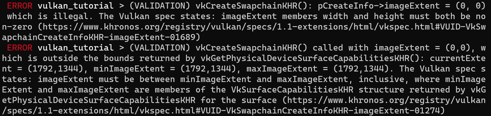
Retrieving the swapchain images
The swapchain has been created now, so all that remains is retrieving the handles of the vk::Images in it. We'll reference these during rendering operations in later chapters. Add an AppData field to store the handles:
struct AppData {
// ...
swapchain_images: Vec<vk::Image>,
}
The images were created by the implementation for the swapchain and they will be automatically cleaned up once the swapchain has been destroyed, therefore we don't need to add any cleanup code.
I'm adding the code to retrieve the handles to the end of the create_swapchain function, right after the create_swapchain_khr call.
data.swapchain_images = device.get_swapchain_images_khr(data.swapchain)?;
One last thing, store the format and extent we've chosen for the swapchain images in AppData fields. We'll need them in future chapters.
struct AppData {
// ...
swapchain_format: vk::Format,
swapchain_extent: vk::Extent2D,
swapchain: vk::SwapchainKHR,
swapchain_images: Vec<vk::Image>,
}
And then in create_swapchain:
data.swapchain_format = surface_format.format;
data.swapchain_extent = extent;
We now have a set of images that can be drawn onto and can be presented to the window. The next chapter will begin to cover how we can set up the images as render targets and then we start looking into the actual graphics pipeline and drawing commands!
Image views
Code: main.rs
To use any vk::Image, including those in the swapchain, in the render pipeline we have to create a vk::ImageView object. An image view is quite literally a view into an image. It describes how to access the image and which part of the image to access, for example if it should be treated as a 2D texture depth texture without any mipmapping levels.
In this chapter we'll write a create_swapchain_image_views function that creates a basic image view for every image in the swapchain so that we can use them as color targets later on.
First add an AppData field to store the image views in:
struct AppData {
// ...
swapchain_image_views: Vec<vk::ImageView>,
}
Create the create_swapchain_image_views function and call it right after swapchain creation in App::create.
impl App {
unsafe fn create(window: &Window) -> Result<Self> {
// ...
create_swapchain(window, &instance, &device, &mut data)?;
create_swapchain_image_views(&device, &mut data)?;
// ...
}
}
unsafe fn create_swapchain_image_views(
device: &Device,
data: &mut AppData,
) -> Result<()> {
Ok(())
}
What we next need to do is iterate over the swapchain images to create an image view for each:
unsafe fn create_swapchain_image_views(
device: &Device,
data: &mut AppData,
) -> Result<()> {
data.swapchain_image_views = data
.swapchain_images
.iter()
.map(|i| {
})
.collect::<Result<Vec<_>, _>>()?;
Ok(())
}
For each image view we are creating we'll first need to define the color component mapping for the image view. This allows you to swizzle the color channels around. For example, you can map all of the channels to the red channel for a monochrome texture. You can also map constant values of 0 and 1 to a channel. In our case we'll stick to the default mapping.
let components = vk::ComponentMapping::builder()
.r(vk::ComponentSwizzle::IDENTITY)
.g(vk::ComponentSwizzle::IDENTITY)
.b(vk::ComponentSwizzle::IDENTITY)
.a(vk::ComponentSwizzle::IDENTITY);
Next we will define the subresource range for the image view which describes the image's purpose and which part of the image should be accessed. Our images will be used as color targets without any mipmapping levels or multiple layers.
let subresource_range = vk::ImageSubresourceRange::builder()
.aspect_mask(vk::ImageAspectFlags::COLOR)
.base_mip_level(0)
.level_count(1)
.base_array_layer(0)
.layer_count(1);
If you were working on a stereographic 3D application, then you would create a swapchain with multiple layers. You could then create multiple image views for each image representing the views for the left and right eyes by accessing different layers.
We can now create a vk::ImageViewCreateInfo struct which provides the parameters for image view creation.
let info = vk::ImageViewCreateInfo::builder()
.image(*i)
.view_type(vk::ImageViewType::_2D)
.format(data.swapchain_format)
.components(components)
.subresource_range(subresource_range);
The view_type and format fields specify how the image data should be interpreted. The view_type field allows you to treat images as 1D textures, 2D textures, 3D textures, and cube maps.
Creating the image view is now a matter of calling create_image_view:
device.create_image_view(&info, None)
Unlike images, the image views were explicitly created by us, so we need to add a similar loop to destroy them again in App::destroy:
unsafe fn destroy(&mut self) {
self.data.swapchain_image_views
.iter()
.for_each(|v| self.device.destroy_image_view(*v, None));
// ...
}
An image view is sufficient to start using an image as a texture, but it's not quite ready to be used as a render target just yet. That requires one more step of indirection, known as a framebuffer. But first we'll have to set up the graphics pipeline.
Introduction
Code: main.rs
Over the course of the next few chapters we'll be setting up a graphics pipeline that is configured to draw our first triangle. The graphics pipeline is the sequence of operations that take the vertices and textures of your meshes all the way to the pixels in the render targets. A simplified overview is displayed below:
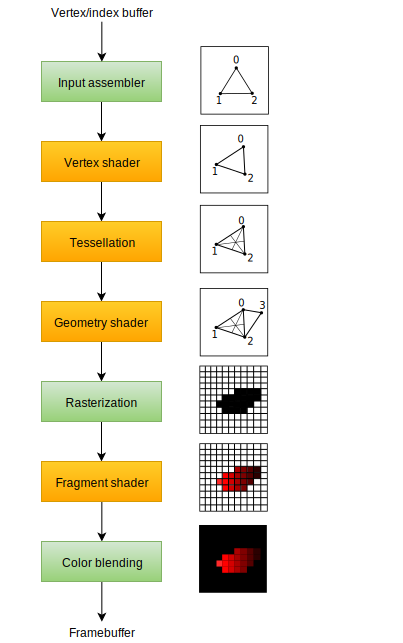
The input assembler collects the raw vertex data from the buffers you specify and may also use an index buffer to repeat certain elements without having to duplicate the vertex data itself.
The vertex shader is run for every vertex and generally applies transformations to turn vertex positions from model space to screen space. It also passes per-vertex data down the pipeline.
The tessellation shaders allow you to subdivide geometry based on certain rules to increase the mesh quality. This is often used to make surfaces like brick walls and staircases look less flat when they are nearby.
The geometry shader is run on every primitive (triangle, line, point) and can discard it or output more primitives than came in. This is similar to the tessellation shader, but much more flexible. However, it is not used much in today's applications because the performance is not that good on most graphics cards except for Intel's integrated GPUs.
The rasterization stage discretizes the primitives into fragments. These are the pixel elements that they fill on the framebuffer. Any fragments that fall outside the screen are discarded and the attributes outputted by the vertex shader are interpolated across the fragments, as shown in the figure. Usually the fragments that are behind other primitive fragments are also discarded here because of depth testing.
The fragment shader is invoked for every fragment that survives and determines which framebuffer(s) the fragments are written to and with which color and depth values. It can do this using the interpolated data from the vertex shader, which can include things like texture coordinates and normals for lighting.
The color blending stage applies operations to mix different fragments that map to the same pixel in the framebuffer. Fragments can simply overwrite each other, add up or be mixed based upon transparency.
Stages with a green color are known as fixed-function stages. These stages allow you to tweak their operations using parameters, but the way they work is predefined.
Stages with an orange color on the other hand are programmable, which means that you can upload your own code to the graphics card to apply exactly the operations you want. This allows you to use fragment shaders, for example, to implement anything from texturing and lighting to ray tracers. These programs run on many GPU cores simultaneously to process many objects, like vertices and fragments in parallel.
If you've used older APIs like OpenGL and Direct3D before, then you'll be used to being able to change any pipeline settings at will with calls like glBlendFunc and OMSetBlendState. The graphics pipeline in Vulkan is almost completely immutable, so you must recreate the pipeline from scratch if you want to change shaders, bind different framebuffers or change the blend function. The disadvantage is that you'll have to create a number of pipelines that represent all of the different combinations of states you want to use in your rendering operations. However, because all of the operations you'll be doing in the pipeline are known in advance, the driver can optimize for it much better.
Some of the programmable stages are optional based on what you intend to do. For example, the tessellation and geometry stages can be disabled if you are just drawing simple geometry. If you are only interested in depth values then you can disable the fragment shader stage, which is useful for shadow map generation.
In the next chapter we'll first create the two programmable stages required to put a triangle onto the screen: the vertex shader and fragment shader. The fixed-function configuration like blending mode, viewport, rasterization will be set up in the chapter after that. The final part of setting up the graphics pipeline in Vulkan involves the specification of input and output framebuffers.
Create a create_pipeline function that is called right after create_swapchain_image_views in App::create. We'll work on this function throughout the following chapters.
impl App {
unsafe fn create(window: &Window) -> Result<Self> {
// ...
create_swapchain_image_views(&device, &mut data)?;
create_pipeline(&device, &mut data)?;
// ...
}
}
unsafe fn create_pipeline(device: &Device, data: &mut AppData) -> Result<()> {
Ok(())
}
Shader modules
Code: main.rs | shader.vert | shader.frag
Unlike earlier APIs, shader code in Vulkan has to be specified in a bytecode format as opposed to human-readable syntax like GLSL and HLSL. This bytecode format is called SPIR-V and is designed to be used with both Vulkan and OpenCL (both Khronos APIs). It is a format that can be used to write graphics and compute shaders, but we will focus on shaders used in Vulkan's graphics pipelines in this tutorial.
The advantage of using a bytecode format is that the compilers written by GPU vendors to turn shader code into native code are significantly less complex. The past has shown that with human-readable syntax like GLSL, some GPU vendors were rather flexible with their interpretation of the standard. If you happen to write non-trivial shaders with a GPU from one of these vendors, then you'd risk other vendor's drivers rejecting your code due to syntax errors, or worse, your shader running differently because of compiler bugs. With a straightforward bytecode format like SPIR-V that will hopefully be avoided.
However, that does not mean that we need to write this bytecode by hand. Khronos has released their own vendor-independent compiler that compiles GLSL to SPIR-V. This compiler is designed to verify that your shader code is fully standards compliant and produces one SPIR-V binary that you can ship with your program. You can also include this compiler as a library to produce SPIR-V at runtime, but we won't be doing that in this tutorial. Although we can use this compiler directly via glslangValidator.exe, we will be using glslc.exe by Google instead. The advantage of glslc is that it uses the same parameter format as well-known compilers like GCC and Clang and includes some extra functionality like includes. Both of them are already included in the Vulkan SDK, so you don't need to download anything extra.
GLSL is a shading language with a C-style syntax. Programs written in it have a main function that is invoked for every object. Instead of using parameters for input and a return value as output, GLSL uses global variables to handle input and output. The language includes many features to aid in graphics programming, like built-in vector and matrix primitives. Functions for operations like cross products, matrix-vector products and reflections around a vector are included. The vector type is called vec with a number indicating the amount of elements. For example, a 3D position would be stored in a vec3. It is possible to access single components through fields like .x, but it's also possible to create a new vector from multiple components at the same time. For example, the expression vec3(1.0, 2.0, 3.0).xy would result in vec2. The constructors of vectors can also take combinations of vector objects and scalar values. For example, a vec3 can be constructed with vec3(vec2(1.0, 2.0), 3.0).
As the previous chapter mentioned, we need to write a vertex shader and a fragment shader to get a triangle on the screen. The next two sections will cover the GLSL code of each of those and after that I'll show you how to produce two SPIR-V binaries and load them into the program.
Vertex shader
The vertex shader processes each incoming vertex. It takes its attributes, like world position, color, normal and texture coordinates as input. The output is the final position in clip coordinates and the attributes that need to be passed on to the fragment shader, like color and texture coordinates. These values will then be interpolated over the fragments by the rasterizer to produce a smooth gradient.
A clip coordinate is a four dimensional vector from the vertex shader that is subsequently turned into a normalized device coordinate by dividing the whole vector by its last component. These normalized device coordinates are homogeneous coordinates that map the framebuffer to a [-1, 1] by [-1, 1] coordinate system that looks like the following:
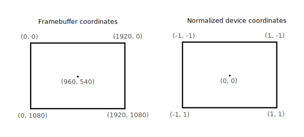
You should already be familiar with these if you have dabbled in computer graphics before. If you have used OpenGL before, then you'll notice that the sign of the Y coordinates is now flipped. The Z coordinate now uses the same range as it does in Direct3D, from 0 to 1.
For our first triangle we won't be applying any transformations, we'll just specify the positions of the three vertices directly as normalized device coordinates to create the following shape:
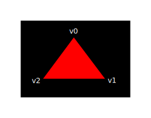
We can directly output normalized device coordinates by outputting them as clip coordinates from the vertex shader with the last component set to 1. That way the division to transform clip coordinates to normalized device coordinates will not change anything.
Normally these coordinates would be stored in a vertex buffer, but creating a vertex buffer in Vulkan and filling it with data is not trivial. Therefore I've decided to postpone that until after we've had the satisfaction of seeing a triangle pop up on the screen. We're going to do something a little unorthodox in the meanwhile: include the coordinates directly inside the vertex shader. The code looks like this:
#version 450
vec2 positions[3] = vec2[](
vec2(0.0, -0.5),
vec2(0.5, 0.5),
vec2(-0.5, 0.5)
);
void main() {
gl_Position = vec4(positions[gl_VertexIndex], 0.0, 1.0);
}
The main function is invoked for every vertex. The built-in gl_VertexIndex variable contains the index of the current vertex. This is usually an index into the vertex buffer, but in our case it will be an index into a hardcoded array of vertex data. The position of each vertex is accessed from the constant array in the shader and combined with dummy z and w components to produce a position in clip coordinates. The built-in variable gl_Position functions as the output.
Fragment shader
The triangle that is formed by the positions from the vertex shader fills an area on the screen with fragments. The fragment shader is invoked on these fragments to produce a color and depth for the framebuffer (or framebuffers). A simple fragment shader that outputs the color red for the entire triangle looks like this:
#version 450
layout(location = 0) out vec4 outColor;
void main() {
outColor = vec4(1.0, 0.0, 0.0, 1.0);
}
The main function is called for every fragment just like the vertex shader main function is called for every vertex. Colors in GLSL are 4-component vectors with the R, G, B and alpha channels within the [0, 1] range. Unlike gl_Position in the vertex shader, there is no built-in variable to output a color for the current fragment. You have to specify your own output variable for each framebuffer where the layout(location = 0) modifier specifies the index of the framebuffer. The color red is written to this outColor variable that is linked to the first (and only) framebuffer at index 0.
Per-vertex colors
Making the entire triangle red is not very interesting, wouldn't something like the following look a lot nicer?

We have to make a couple of changes to both shaders to accomplish this. First off, we need to specify a distinct color for each of the three vertices. The vertex shader should now include an array with colors just like it does for positions:
vec3 colors[3] = vec3[](
vec3(1.0, 0.0, 0.0),
vec3(0.0, 1.0, 0.0),
vec3(0.0, 0.0, 1.0)
);
Now we just need to pass these per-vertex colors to the fragment shader so it can output their interpolated values to the framebuffer. Add an output for color to the vertex shader and write to it in the main function:
layout(location = 0) out vec3 fragColor;
void main() {
gl_Position = vec4(positions[gl_VertexIndex], 0.0, 1.0);
fragColor = colors[gl_VertexIndex];
}
Next, we need to add a matching input in the fragment shader:
layout(location = 0) in vec3 fragColor;
void main() {
outColor = vec4(fragColor, 1.0);
}
The input variable does not necessarily have to use the same name, they will be linked together using the indexes specified by the location directives. The main function has been modified to output the color along with an alpha value. As shown in the image above, the values for fragColor will be automatically interpolated for the fragments between the three vertices, resulting in a smooth gradient.
Compiling the shaders
Create a directory called shaders in the root directory of your project (adjacent to the src directory) and store the vertex shader in a file called shader.vert and the fragment shader in a file called shader.frag in that directory. GLSL shaders don't have an official extension, but these two are commonly used to distinguish them.
The contents of shader.vert should be:
#version 450
layout(location = 0) out vec3 fragColor;
vec2 positions[3] = vec2[](
vec2(0.0, -0.5),
vec2(0.5, 0.5),
vec2(-0.5, 0.5)
);
vec3 colors[3] = vec3[](
vec3(1.0, 0.0, 0.0),
vec3(0.0, 1.0, 0.0),
vec3(0.0, 0.0, 1.0)
);
void main() {
gl_Position = vec4(positions[gl_VertexIndex], 0.0, 1.0);
fragColor = colors[gl_VertexIndex];
}
And the contents of shader.frag should be:
#version 450
layout(location = 0) in vec3 fragColor;
layout(location = 0) out vec4 outColor;
void main() {
outColor = vec4(fragColor, 1.0);
}
We're now going to compile these into SPIR-V bytecode using the glslc program.
Windows
Create a compile.bat file with the following contents:
C:/VulkanSDK/x.x.x.x/Bin32/glslc.exe shader.vert -o vert.spv
C:/VulkanSDK/x.x.x.x/Bin32/glslc.exe shader.frag -o frag.spv
pause
Replace the path to glslc.exe with the path to where you installed the Vulkan SDK. Double click the file to run it.
Linux
Create a compile.sh file with the following contents:
/home/user/VulkanSDK/x.x.x.x/x86_64/bin/glslc shader.vert -o vert.spv
/home/user/VulkanSDK/x.x.x.x/x86_64/bin/glslc shader.frag -o frag.spv
Replace the path to glslc with the path to where you installed the Vulkan SDK. Make the script executable with chmod +x compile.sh and run it.
macOS
Create a compile.sh file with the following contents:
/Users/user/VulkanSDK/x.x.x.x/macOS/bin/glslc shaders/shader.vert -o vert.spv
/Users/user/VulkanSDK/x.x.x.x/macOS/bin/glslc shaders/shader.frag -o frag.spv
End of platform-specific instructions
These two commands tell the compiler to read the GLSL source file and output a SPIR-V bytecode file using the -o (output) flag.
If your shader contains a syntax error then the compiler will tell you the line number and problem, as you would expect. Try leaving out a semicolon for example and run the compile script again. Also try running the compiler without any arguments to see what kinds of flags it supports. It can, for example, also output the bytecode into a human-readable format so you can see exactly what your shader is doing and any optimizations that have been applied at this stage.
Compiling shaders on the commandline is one of the most straightforward options and it's the one that we'll use in this tutorial, but it's also possible to compile shaders directly from your own code. The Vulkan SDK includes libshaderc, which is a library to compile GLSL code to SPIR-V from within your program.
Loading a shader
Now that we have a way of producing SPIR-V shaders, it's time to bring them into our program to plug them into the graphics pipeline at some point. We'll start by using include_bytes! from the Rust standard library to include the compiled SPIR-V bytecode for the shaders in our executable.
unsafe fn create_pipeline(device: &Device, data: &mut AppData) -> Result<()> {
let vert = include_bytes!("../shaders/vert.spv");
let frag = include_bytes!("../shaders/frag.spv");
Ok(())
}
Creating shader modules
Before we can pass the code to the pipeline, we have to wrap it in a vk::ShaderModule object. Let's create a helper function create_shader_module to do that.
unsafe fn create_shader_module(
device: &Device,
bytecode: &[u8],
) -> Result<vk::ShaderModule> {
}
The function will take a slice containing the bytecode as parameter and create a vk::ShaderModule from it using our logical device.
Creating a shader module is simple, we only need to specify the length of our bytecode slice and the bytecode slice itself. This information is specified in a vk::ShaderModuleCreateInfo structure. The one catch is that the size of the bytecode is specified in bytes, but the bytecode slice expected by this struct is a &[u32] instead of a &[u8]. Therefore we will first need to convert our &[u8] into an &[u32].
vulkanalia has a helper struct called Bytecode that we will use to copy the shader bytecode into a new buffer that is guaranteed to have the correct alignment for an array of u32s. Add an import for this helper struct:
use vulkanalia::bytecode::Bytecode;
Getting back to our create_shader_module function, Bytecode::new will return an error if the supplied byte slice has a length that is not a multiple of 4 or if the allocation of the aligned buffer fails. As long as you are providing valid shader bytecode this should never be a problem, so we'll just unwrap the result.
let bytecode = Bytecode::new(bytecode).unwrap();
We can then construct a vk::ShaderModuleCreateInfo and use it to call create_shader_module to create the shader module:
let info = vk::ShaderModuleCreateInfo::builder()
.code(bytecode.code())
.code_size(bytecode.code_size());
Ok(device.create_shader_module(&info, None)?)
The parameters are the same as those in previous object creation functions: the create info structure and the optional custom allocators.
Shader modules are just a thin wrapper around the shader bytecode that we've previously loaded from a file and the functions defined in it. The compilation and linking of the SPIR-V bytecode to machine code for execution by the GPU doesn't happen until the graphics pipeline is created. That means that we're allowed to destroy the shader modules again as soon as pipeline creation is finished, which is why we'll make them local variables in the create_pipeline function instead of fields in AppData:
unsafe fn create_pipeline(device: &Device, data: &mut AppData) -> Result<()> {
let vert = include_bytes!("../shaders/vert.spv");
let frag = include_bytes!("../shaders/frag.spv");
let vert_shader_module = create_shader_module(device, &vert[..])?;
let frag_shader_module = create_shader_module(device, &frag[..])?;
// ...
The cleanup should then happen at the end of the function by adding two calls to destroy_shader_module. All of the remaining code in this chapter will be inserted before these lines.
// ...
device.destroy_shader_module(vert_shader_module, None);
device.destroy_shader_module(frag_shader_module, None);
Ok(())
}
Shader stage creation
To actually use the shaders we'll need to assign them to a specific pipeline stage through vk::PipelineShaderStageCreateInfo structures as part of the actual pipeline creation process.
We'll start by filling in the structure for the vertex shader, again in the create_pipeline function.
let vert_stage = vk::PipelineShaderStageCreateInfo::builder()
.stage(vk::ShaderStageFlags::VERTEX)
.module(vert_shader_module)
.name(b"main\0");
The first step is telling Vulkan in which pipeline stage the shader is going to be used. There is a variant for each of the programmable stages described in the previous chapter.
The next two fields specify the shader module containing the code, and the function to invoke, known as the entrypoint. That means that it's possible to combine multiple fragment shaders into a single shader module and use different entry points to differentiate between their behaviors. In this case we'll stick to the standard main, however.
There is one more (optional) member, specialization_info, which we won't be using here, but is worth discussing. It allows you to specify values for shader constants. You can use a single shader module where its behavior can be configured at pipeline creation by specifying different values for the constants used in it. This is more efficient than configuring the shader using variables at render time, because the compiler can do optimizations like eliminating if statements that depend on these values. If you don't have any constants like that, then you can just skip setting it as we are doing here.
Modifying the structure to suit the fragment shader is easy:
let frag_stage = vk::PipelineShaderStageCreateInfo::builder()
.stage(vk::ShaderStageFlags::FRAGMENT)
.module(frag_shader_module)
.name(b"main\0");
That's all there is to describing the programmable stages of the pipeline. In the next chapter we'll look at the fixed-function stages.
Fixed functions
Code: main.rs
The older graphics APIs provided default state for most of the stages of the graphics pipeline. In Vulkan you have to be explicit about everything, from viewport size to color blending function. In this chapter we'll fill in all of the structures to configure these fixed-function operations.
Vertex input
The vk::PipelineVertexInputStateCreateInfo structure describes the format of the vertex data that will be passed to the vertex shader. It describes this in roughly two ways:
- Bindings – spacing between data and whether the data is per-vertex or per-instance (see instancing)
- Attribute descriptions – type of the attributes passed to the vertex shader, which binding to load them from and at which offset
Because we're hard coding the vertex data directly in the vertex shader, we'll leave this structure with the defaults to specify that there is no vertex data to load for now. We'll get back to it in the vertex buffer chapter. Add this to the create_pipeline function right after the vk::PipelineShaderStageCreateInfo structs:
unsafe fn create_pipeline(device: &Device, data: &mut AppData) -> Result<()> {
// ...
let vertex_input_state = vk::PipelineVertexInputStateCreateInfo::builder();
The vertex_binding_descriptions and vertex_attribute_descriptions fields for this struct that could have been set here would be slices of structs that describe the aforementioned details for loading vertex data.
Input assembly
The vk::PipelineInputAssemblyStateCreateInfo struct describes two things: what kind of geometry will be drawn from the vertices and if primitive restart should be enabled. The former is specified in the topology member and can have values like:
vk::PrimitiveTopology::POINT_LIST– points from verticesvk::PrimitiveTopology::LINE_LIST– line from every 2 vertices without reusevk::PrimitiveTopology::LINE_STRIP– the end vertex of every line is used as start vertex for the next linevk::PrimitiveTopology::TRIANGLE_LIST– triangle from every 3 vertices without reusevk::PrimitiveTopology::TRIANGLE_STRIP– the second and third vertex of every triangle are used as first two vertices of the next triangle
Normally, the vertices are loaded from the vertex buffer by index in sequential order, but with an element buffer you can specify the indices to use yourself. This allows you to perform optimizations like reusing vertices. If you set the primitive_restart_enable member to true, then it's possible to break up lines and triangles in the _STRIP topology modes by using a special index of 0xFFFF or 0xFFFFFFFF.
We intend to draw triangles throughout this tutorial, so we'll stick to the following data for the structure:
let input_assembly_state = vk::PipelineInputAssemblyStateCreateInfo::builder()
.topology(vk::PrimitiveTopology::TRIANGLE_LIST)
.primitive_restart_enable(false);
Viewports and scissors
A viewport basically describes the region of the framebuffer that the output will be rendered to. This will almost always be (0, 0) to (width, height) and in this tutorial that will also be the case.
let viewport = vk::Viewport::builder()
.x(0.0)
.y(0.0)
.width(data.swapchain_extent.width as f32)
.height(data.swapchain_extent.height as f32)
.min_depth(0.0)
.max_depth(1.0);
Remember that the size of the swapchain and its images may differ from the WIDTH and HEIGHT of the window. The swapchain images will be used as framebuffers later on, so we should stick to their size.
The min_depth and max_depth values specify the range of depth values to use for the framebuffer. These values must be within the [0.0, 1.0] range, but min_depth may be higher than max_depth. If you aren't doing anything special, then you should stick to the standard values of 0.0 and 1.0.
While viewports define the transformation from the image to the framebuffer, scissor rectangles define in which regions pixels will actually be stored. Any pixels outside the scissor rectangles will be discarded by the rasterizer. They function like a filter rather than a transformation. The difference is illustrated below. Note that the left scissor rectangle is just one of the many possibilities that would result in that image, as long as it's larger than the viewport.

In this tutorial we simply want to draw to the entire framebuffer, so we'll specify a scissor rectangle that covers it entirely:
let scissor = vk::Rect2D::builder()
.offset(vk::Offset2D { x: 0, y: 0 })
.extent(data.swapchain_extent);
Now this viewport and scissor rectangle need to be combined into a viewport state using the vk::PipelineViewportStateCreateInfo struct. It is possible to use multiple viewports and scissor rectangles on some graphics cards, so its members reference an array of them. Using multiple requires enabling a GPU feature (see logical device creation).
let viewports = &[viewport];
let scissors = &[scissor];
let viewport_state = vk::PipelineViewportStateCreateInfo::builder()
.viewports(viewports)
.scissors(scissors);
Rasterizer
The rasterizer takes the geometry that is shaped by the vertices from the vertex shader and turns it into fragments to be colored by the fragment shader. It also performs depth testing, face culling and the scissor test, and it can be configured to output fragments that fill entire polygons or just the edges (wireframe rendering). All this is configured using the vk::PipelineRasterizationStateCreateInfo structure.
let rasterization_state = vk::PipelineRasterizationStateCreateInfo::builder()
.depth_clamp_enable(false)
// continued...
If depth_clamp_enable is set to true, then fragments that are beyond the near and far planes are clamped to them as opposed to discarding them. This is useful in some special cases like shadow maps. Using this requires enabling a GPU feature.
.rasterizer_discard_enable(false)
If rasterizer_discard_enable is set to true, then geometry never passes through the rasterizer stage. This basically disables any output to the framebuffer.
.polygon_mode(vk::PolygonMode::FILL)
The polygon_mode determines how fragments are generated for geometry. The following modes are available:
vk::PolygonMode::FILL– fill the area of the polygon with fragmentsvk::PolygonMode::LINE– polygon edges are drawn as linesvk::PolygonMode::POINT– polygon vertices are drawn as points
Using any mode other than fill requires enabling a GPU feature.
.line_width(1.0)
The line_width member is straightforward, it describes the thickness of lines in terms of number of fragments. The maximum line width that is supported depends on the hardware and any line thicker than 1.0 requires you to enable the wide_lines GPU feature.
.cull_mode(vk::CullModeFlags::BACK)
.front_face(vk::FrontFace::CLOCKWISE)
The cull_mode variable determines the type of face culling to use. You can disable culling, cull the front faces, cull the back faces or both. The front_face variable specifies the vertex order for faces to be considered front-facing and can be clockwise or counterclockwise.
.depth_bias_enable(false);
The rasterizer can alter the depth values by adding a constant value or biasing them based on a fragment's slope. This is sometimes used for shadow mapping, but we won't be using it. Just set depth_bias_enable to false.
Multisampling
The vk::PipelineMultisampleStateCreateInfo struct configures multisampling, which is one of the ways to perform anti-aliasing. It works by combining the fragment shader results of multiple polygons that rasterize to the same pixel. This mainly occurs along edges, which is also where the most noticeable aliasing artifacts occur. Because it doesn't need to run the fragment shader multiple times if only one polygon maps to a pixel, it is significantly less expensive than simply rendering to a higher resolution and then downscaling. Enabling it requires enabling a GPU feature.
let multisample_state = vk::PipelineMultisampleStateCreateInfo::builder()
.sample_shading_enable(false)
.rasterization_samples(vk::SampleCountFlags::_1);
We'll revisit multisampling in a later chapter, for now let's keep it disabled.
Depth and stencil testing
If you are using a depth and/or stencil buffer, then you also need to configure the depth and stencil tests using vk::PipelineDepthStencilStateCreateInfo. We don't have one right now, so we can simply ignore it for now. We'll get back to it in the depth buffering chapter.
Color blending
After a fragment shader has returned a color, it needs to be combined with the color that is already in the framebuffer. This transformation is known as color blending and there are two ways to do it:
- Mix the old and new value to produce a final color
- Combine the old and new value using a bitwise operation
There are two types of structs to configure color blending. The first struct, vk::PipelineColorBlendAttachmentState contains the configuration per attached framebuffer and the second struct, vk::PipelineColorBlendStateCreateInfo contains the global color blending settings. In our case we only have one framebuffer:
let attachment = vk::PipelineColorBlendAttachmentState::builder()
.color_write_mask(vk::ColorComponentFlags::all())
.blend_enable(false)
.src_color_blend_factor(vk::BlendFactor::ONE) // Optional
.dst_color_blend_factor(vk::BlendFactor::ZERO) // Optional
.color_blend_op(vk::BlendOp::ADD) // Optional
.src_alpha_blend_factor(vk::BlendFactor::ONE) // Optional
.dst_alpha_blend_factor(vk::BlendFactor::ZERO) // Optional
.alpha_blend_op(vk::BlendOp::ADD); // Optional
This per-framebuffer struct allows you to configure the first way of color blending. The operations that will be performed are best demonstrated using the following pseudocode:
if blend_enable {
final_color.rgb = (src_color_blend_factor * new_color.rgb)
<color_blend_op> (dst_color_blend_factor * old_color.rgb);
final_color.a = (src_alpha_blend_factor * new_color.a)
<alpha_blend_op> (dst_alpha_blend_factor * old_color.a);
} else {
final_color = new_color;
}
final_color = final_color & color_write_mask;
If blend_enable is set to false, then the new color from the fragment shader is passed through unmodified. Otherwise, the two mixing operations are performed to compute a new color. The resulting color is AND'd with the color_write_mask to determine which channels are actually passed through.
The most common way to use color blending is to implement alpha blending, where we want the new color to be blended with the old color based on its opacity. The final_color should then be computed as follows:
final_color.rgb = new_alpha * new_color + (1 - new_alpha) * old_color;
final_color.a = new_alpha.a;
This can be accomplished with the following parameters:
let attachment = vk::PipelineColorBlendAttachmentState::builder()
.color_write_mask(vk::ColorComponentFlags::all())
.blend_enable(true)
.src_color_blend_factor(vk::BlendFactor::SRC_ALPHA)
.dst_color_blend_factor(vk::BlendFactor::ONE_MINUS_SRC_ALPHA)
.color_blend_op(vk::BlendOp::ADD)
.src_alpha_blend_factor(vk::BlendFactor::ONE)
.dst_alpha_blend_factor(vk::BlendFactor::ZERO)
.alpha_blend_op(vk::BlendOp::ADD);
You can find all of the possible operations in the vk::BlendFactor and vk::BlendOp enumerations in the specification (or vulkanalia's documentation).
The second structure references the array of structures for all of the framebuffers and allows you to set blend constants that you can use as blend factors in the aforementioned calculations.
let attachments = &[attachment];
let color_blend_state = vk::PipelineColorBlendStateCreateInfo::builder()
.logic_op_enable(false)
.logic_op(vk::LogicOp::COPY)
.attachments(attachments)
.blend_constants([0.0, 0.0, 0.0, 0.0]);
If you want to use the second method of blending (bitwise combination), then you should set logic_op_enable to true. The bitwise operation can then be specified in the logic_op field. Note that this will automatically disable the first method, as if you had set blend_enable to false for every attached framebuffer! The color_write_mask will also be used in this mode to determine which channels in the framebuffer will actually be affected. It is also possible to disable both modes, as we've done here, in which case the fragment colors will be written to the framebuffer unmodified.
Dynamic state (example, don't add)
A limited amount of the state that we've specified in the previous structs can actually be changed without recreating the pipeline. Examples are the size of the viewport, line width and blend constants. If you want to do that, then you'll have to fill in a vk::PipelineDynamicStateCreateInfo structure like this:
let dynamic_states = &[
vk::DynamicState::VIEWPORT,
vk::DynamicState::LINE_WIDTH,
];
let dynamic_state = vk::PipelineDynamicStateCreateInfo::builder()
.dynamic_states(dynamic_states);
This will cause the configuration of these values to be ignored and you will be required to specify the data at drawing time. We'll get back to this in a future chapter. This struct can be omitted if you don't have any dynamic state.
Pipeline layout
You can use uniform values in shaders, which are globals similar to dynamic state variables that can be changed at drawing time to alter the behavior of your shaders without having to recreate them. They are commonly used to pass the transformation matrix to the vertex shader, or to create texture samplers in the fragment shader.
These uniform values need to be specified during pipeline creation by creating a vk::PipelineLayout object. Even though we won't be using them until a future chapter, we are still required to create an empty pipeline layout.
Create an AppData field to hold this object, because we'll refer to it from other functions at a later point in time:
struct AppData {
// ...
pipeline_layout: vk::PipelineLayout,
}
And then create the object in the create_pipeline function just above the calls to destroy_shader_module:
unsafe fn create_pipeline(device: &Device, data: &mut AppData) -> Result<()> {
// ...
let layout_info = vk::PipelineLayoutCreateInfo::builder();
data.pipeline_layout = device.create_pipeline_layout(&layout_info, None)?;
device.destroy_shader_module(vert_shader_module, None);
device.destroy_shader_module(frag_shader_module, None);
Ok(())
}
The structure also specifies push constants, which are another way of passing dynamic values to shaders that we may get into in a future chapter. The pipeline layout will be referenced throughout the program's lifetime, so it should be destroyed in App::destroy:
unsafe fn destroy(&mut self) {
self.device.destroy_pipeline_layout(self.data.pipeline_layout, None);
// ...
}
Conclusion
That's it for all of the fixed-function state! It's a lot of work to set all of this up from scratch, but the advantage is that we're now nearly fully aware of everything that is going on in the graphics pipeline! This reduces the chance of running into unexpected behavior because the default state of certain components is not what you expect.
There is however one more object to create before we can finally create the graphics pipeline and that is a render pass.
Render passes
Code: main.rs
Before we can finish creating the pipeline, we need to tell Vulkan about the framebuffer attachments that will be used while rendering. We need to specify how many color and depth buffers there will be, how many samples to use for each of them and how their contents should be handled throughout the rendering operations. All of this information is wrapped in a render pass object, for which we'll create a new create_render_pass function. Call this function from App::create before create_pipeline.
impl App {
unsafe fn create(window: &Window) -> Result<Self> {
// ...
create_render_pass(&instance, &device, &mut data)?;
create_pipeline(&device, &mut data)?;
// ...
}
}
unsafe fn create_render_pass(
instance: &Instance,
device: &Device,
data: &mut AppData,
) -> Result<()> {
Ok(())
}
Attachment description
In our case we'll have just a single color buffer attachment represented by one of the images from the swapchain. This will be represented by a vk::AttachmentDescription which we will build in create_render_pass.
let color_attachment = vk::AttachmentDescription::builder()
.format(data.swapchain_format)
.samples(vk::SampleCountFlags::_1)
// continued...
The format of the color attachment should match the format of the swapchain images, and we're not doing anything with multisampling yet, so we'll stick to 1 sample.
.load_op(vk::AttachmentLoadOp::CLEAR)
.store_op(vk::AttachmentStoreOp::STORE)
The load_op and store_op determine what to do with the data in the attachment before rendering and after rendering. We have the following choices for load_op:
vk::AttachmentLoadOp::LOAD– Preserve the existing contents of the attachmentvk::AttachmentLoadOp::CLEAR– Clear the values to a constant at the startvk::AttachmentLoadOp::DONT_CARE– Existing contents are undefined; we don't care about them
In our case we're going to use the clear operation to clear the framebuffer to black before drawing a new frame. There are only two possibilities for the store_op:
vk::AttachmentStoreOp::STORE– Rendered contents will be stored in memory and can be read latervk::AttachmentStoreOp::DONT_CARE– Contents of the framebuffer will be undefined after the rendering operation
We're interested in seeing the rendered triangle on the screen, so we're going with the store operation here.
.stencil_load_op(vk::AttachmentLoadOp::DONT_CARE)
.stencil_store_op(vk::AttachmentStoreOp::DONT_CARE)
The load_op and store_op apply to color and depth data, and stencil_load_op / stencil_store_op apply to stencil data. Our application won't do anything with the stencil buffer, so the results of loading and storing are irrelevant.
.initial_layout(vk::ImageLayout::UNDEFINED)
.final_layout(vk::ImageLayout::PRESENT_SRC_KHR);
Textures and framebuffers in Vulkan are represented by vk::Image objects with a certain pixel format, however the layout of the pixels in memory can change based on what you're trying to do with an image.
Some of the most common layouts are:
vk::ImageLayout::COLOR_ATTACHMENT_OPTIMAL– Images used as color attachmentvk::ImageLayout::PRESENT_SRC_KHR– Images to be presented in the swapchainvk::ImageLayout::TRANSFER_DST_OPTIMAL– Images to be used as destination for a memory copy operation
We'll discuss this topic in more depth in the texturing chapter, but what's important to know right now is that images need to be transitioned to specific layouts that are suitable for the operation that they're going to be involved in next.
The initial_layout specifies which layout the image will have before the render pass begins. The final_layout specifies the layout to automatically transition to when the render pass finishes. Using vk::ImageLayout::UNDEFINED for initial_layout means that we don't care what previous layout the image was in. The caveat of this special value is that the contents of the image are not guaranteed to be preserved, but that doesn't matter since we're going to clear it anyway. We want the image to be ready for presentation using the swapchain after rendering, which is why we use vk::ImageLayout::PRESENT_SRC_KHR as final_layout.
Subpasses and attachment references
A single render pass can consist of multiple subpasses. Subpasses are subsequent rendering operations that depend on the contents of framebuffers in previous passes, for example a sequence of post-processing effects that are applied one after another. If you group these rendering operations into one render pass, then Vulkan is able to reorder the operations and conserve memory bandwidth for possibly better performance. For our very first triangle, however, we'll stick to a single subpass.
Every subpass references one or more of the attachments that we've described using the structure in the previous sections. These references are themselves vk::AttachmentReference structs that look like this:
let color_attachment_ref = vk::AttachmentReference::builder()
.attachment(0)
.layout(vk::ImageLayout::COLOR_ATTACHMENT_OPTIMAL);
The attachment parameter specifies which attachment to reference by its index in the attachment descriptions array. Our array consists of a single vk::AttachmentDescription, so its index is 0. The layout specifies which layout we would like the attachment to have during a subpass that uses this reference. Vulkan will automatically transition the attachment to this layout when the subpass is started. We intend to use the attachment to function as a color buffer and the vk::ImageLayout::COLOR_ATTACHMENT_OPTIMAL layout will give us the best performance, as its name implies.
The subpass is described using a vk::SubpassDescription structure:
let color_attachments = &[color_attachment_ref];
let subpass = vk::SubpassDescription::builder()
.pipeline_bind_point(vk::PipelineBindPoint::GRAPHICS)
.color_attachments(color_attachments);
Vulkan may also support compute subpasses in the future, so we have to be explicit about this being a graphics subpass. Then we specify the reference to the color attachment.
The index of the attachment in this array is directly referenced from the fragment shader with the layout(location = 0) out vec4 outColor directive!
The following other types of attachments can be referenced by a subpass:
input_attachments– Attachments that are read from a shaderresolve_attachments– Attachments used for multisampling color attachmentsdepth_stencil_attachment– Attachment for depth and stencil datapreserve_attachments– Attachments that are not used by this subpass, but for which the data must be preserved
Render pass
Now that the attachment and a basic subpass referencing it have been described, we can create the render pass itself. Create a new class member variable to hold the vk::RenderPass object right above the pipeline_layout field in AppData:
struct AppData {
// ...
render_pass: vk::RenderPass,
pipeline_layout: vk::PipelineLayout,
}
The render pass object can then be created by filling in the vk::RenderPassCreateInfo structure with an array of attachments and subpasses. The vk::AttachmentReference objects reference attachments using the indices of this array.
let attachments = &[color_attachment];
let subpasses = &[subpass];
let info = vk::RenderPassCreateInfo::builder()
.attachments(attachments)
.subpasses(subpasses);
data.render_pass = device.create_render_pass(&info, None)?;
Just like the pipeline layout, the render pass will be referenced throughout the program, so it should only be cleaned up at the end in App::destroy:
unsafe fn destroy(&mut self) {
self.device.destroy_pipeline_layout(self.data.pipeline_layout, None);
self.device.destroy_render_pass(self.data.render_pass, None);
// ...
}
That was a lot of work, but in the next chapter it all comes together to finally create the graphics pipeline object!
Conclusion
Code: main.rs
We can now combine all of the structures and objects from the previous chapters to create the graphics pipeline! Here's the types of objects we have now, as a quick recap:
- Shader stages – the shader modules that define the functionality of the programmable stages of the graphics pipeline
- Fixed-function state – all of the structures that define the fixed-function stages of the pipeline, like input assembly, rasterizer, viewport and color blending
- Pipeline layout – the uniform and push values referenced by the shader that can be updated at draw time
- Render pass – the attachments referenced by the pipeline stages and their usage
All of these combined fully define the functionality of the graphics pipeline, so we can now begin filling in the vk::GraphicsPipelineCreateInfo structure at the end of the create_pipeline function (but before the shader modules are destroyed). But before the calls to DeviceV1_0:::destroy_shader_module because these are still to be used during the creation.
let stages = &[vert_stage, frag_stage];
let info = vk::GraphicsPipelineCreateInfo::builder()
.stages(stages)
// continued...
We start by providing an array of the vk::PipelineShaderStageCreateInfo structs.
.vertex_input_state(&vertex_input_state)
.input_assembly_state(&input_assembly_state)
.viewport_state(&viewport_state)
.rasterization_state(&rasterization_state)
.multisample_state(&multisample_state)
.color_blend_state(&color_blend_state)
Then we reference all of the structures describing the fixed-function stage.
.layout(data.pipeline_layout)
After that comes the pipeline layout, which is a Vulkan handle rather than a struct reference.
.render_pass(data.render_pass)
.subpass(0);
And finally we have the reference to the render pass and the index of the sub pass where this graphics pipeline will be used. It is also possible to use other render passes with this pipeline instead of this specific instance, but they have to be compatible with render_pass. The requirements for compatibility are described here, but we won't be using that feature in this tutorial.
.base_pipeline_handle(vk::Pipeline::null()) // Optional.
.base_pipeline_index(-1) // Optional.
There are actually two more parameters: base_pipeline_handle and base_pipeline_index. Vulkan allows you to create a new graphics pipeline by deriving from an existing pipeline. The idea of pipeline derivatives is that it is less expensive to set up pipelines when they have much functionality in common with an existing pipeline and switching between pipelines from the same parent can also be done quicker. You can either specify the handle of an existing pipeline with base_pipeline_handle or reference another pipeline that is about to be created by index with base_pipeline_index. Right now there is only a single pipeline, so we'll simply specify a null handle and an invalid index. These values are only used if the vk::PipelineCreateFlags::DERIVATIVE flag is also specified in the flags field of vk::GraphicsPipelineCreateInfo.
Now prepare for the final step by creating a field in AppData to hold the vk::Pipeline object:
struct AppData {
// ...
pipeline: vk::Pipeline,
}
And finally create the graphics pipeline:
data.pipeline = device.create_graphics_pipelines(
vk::PipelineCache::null(), &[info], None)?.0[0];
The create_graphics_pipelines function actually has more parameters than the usual object creation functions in Vulkan. It is designed to take multiple vk::GraphicsPipelineCreateInfo objects and create multiple vk::Pipeline objects in a single call.
The first parameter, for which we've passed the vk::PipelineCache::null() argument, references an optional vk::PipelineCache object. A pipeline cache can be used to store and reuse data relevant to pipeline creation across multiple calls to create_graphics_pipelines and even across program executions if the cache is stored to a file. This makes it possible to significantly speed up pipeline creation at a later time.
The graphics pipeline is required for all common drawing operations, so it should also only be destroyed at the end of the program in App::destroy:
unsafe fn destroy(&mut self) {
self.device.destroy_pipeline(self.data.pipeline, None);
// ...
}
Now run your program to confirm that all this hard work has resulted in a successful pipeline creation! We are already getting quite close to seeing something pop up on the screen. In the next couple of chapters we'll set up the actual framebuffers from the swapchain images and prepare the drawing commands.
Framebuffers
Code: main.rs
We've talked a lot about framebuffers in the past few chapters and we've set up the render pass to expect a single framebuffer with the same format as the swapchain images, but we haven't actually created any yet.
The attachments specified during render pass creation are bound by wrapping them into a vk::Framebuffer object. A framebuffer object references all of the vk::ImageView objects that represent the attachments. In our case that will be only a single one: the color attachment. However, the image that we have to use for the attachment depends on which image the swapchain returns when we retrieve one for presentation. That means that we have to create a framebuffer for all of the images in the swapchain and use the one that corresponds to the retrieved image at drawing time.
To that end, create another Vec field in AppData to hold the framebuffers:
struct AppData {
// ...
framebuffers: Vec<vk::Framebuffer>,
}
We'll create the objects for this array in a new function create_framebuffers that is called from App::create right after creating the graphics pipeline:
impl App {
unsafe fn create(window: &Window) -> Result<Self> {
// ...
create_pipeline(&device, &mut data)?;
create_framebuffers(&device, &mut data)?;
// ...
}
}
unsafe fn create_framebuffers(device: &Device, data: &mut AppData) -> Result<()> {
Ok(())
}
Start by mapping over the swapchain image views:
unsafe fn create_framebuffers(device: &Device, data: &mut AppData) -> Result<()> {
data.framebuffers = data
.swapchain_image_views
.iter()
.map(|i| {
})
.collect::<Result<Vec<_>, _>>()?;
Ok(())
}
We'll then create a framebuffer for each image view:
let attachments = &[*i];
let create_info = vk::FramebufferCreateInfo::builder()
.render_pass(data.render_pass)
.attachments(attachments)
.width(data.swapchain_extent.width)
.height(data.swapchain_extent.height)
.layers(1);
device.create_framebuffer(&create_info, None)
As you can see, creation of framebuffers is quite straightforward. We first need to specify with which render_pass the framebuffer needs to be compatible. You can only use a framebuffer with the render passes that it is compatible with, which roughly means that they use the same number and type of attachments.
The attachments field specifies the vk::ImageView objects that should be bound to the respective attachment descriptions in the render pass attachment array.
The width and height parameters are self-explanatory and layers refers to the number of layers in image arrays. Our swapchain images are single images, so the number of layers is 1.
We should delete the framebuffers before the image views and render pass that they are based on, but only after we've finished rendering:
unsafe fn destroy(&mut self) {
self.data.framebuffers
.iter()
.for_each(|f| self.device.destroy_framebuffer(*f, None));
// ...
}
We've now reached the milestone where we have all of the objects that are required for rendering. In the next chapter we're going to write the first actual drawing commands.
Command buffers
Code: main.rs
Commands in Vulkan, like drawing operations and memory transfers, are not executed directly using function calls. You have to record all of the operations you want to perform in command buffer objects. The advantage of this is that all of the hard work of setting up the drawing commands can be done in advance and in multiple threads. After that, you just have to tell Vulkan to execute the commands in the main loop.
Command pools
We have to create a command pool before we can create command buffers. Command pools manage the memory that is used to store the buffers and command buffers are allocated from them. Add a new AppData field to store a vk::CommandPool:
struct AppData {
// ...
command_pool: vk::CommandPool,
}
Then create a new function create_command_pool and call it from App::create after the framebuffers were created.
impl App {
unsafe fn create(window: &Window) -> Result<Self> {
// ...
create_framebuffers(&device, &mut data)?;
create_command_pool(&instance, &device, &mut data)?;
// ...
}
}
unsafe fn create_command_pool(
instance: &Instance,
device: &Device,
data: &mut AppData,
) -> Result<()> {
Ok(())
}
Command pool creation only takes two parameters:
let indices = QueueFamilyIndices::get(instance, data, data.physical_device)?;
let info = vk::CommandPoolCreateInfo::builder()
.flags(vk::CommandPoolCreateFlags::empty()) // Optional.
.queue_family_index(indices.graphics);
Command buffers are executed by submitting them on one of the device queues, like the graphics and presentation queues we retrieved. Each command pool can only allocate command buffers that are submitted on a single type of queue. We're going to record commands for drawing, which is why we've chosen the graphics queue family.
There are three possible flags for command pools:
vk::CommandPoolCreateFlags::TRANSIENT– Hint that command buffers are rerecorded with new commands very often (may change memory allocation behavior)vk::CommandPoolCreateFlags::RESET_COMMAND_BUFFER– Allow command buffers to be rerecorded individually, without this flag they all have to be reset togethervk::CommandPoolCreateFlags::PROTECTED– Creates "protected" command buffers which are stored in "protected" memory where Vulkan prevents unauthorized operations from accessing the memory
We will only record the command buffers at the beginning of the program and then execute them many times in the main loop and we don't need to protect our triangle with DRM, so we're not going to use any of these flags.
data.command_pool = device.create_command_pool(&info, None)?;
Commands will be used throughout the program to draw things on the screen, so the pool should only be destroyed at the end:
unsafe fn destroy(&mut self) {
self.device.destroy_command_pool(self.data.command_pool, None);
// ...
}
Command buffer allocation
We can now start allocating command buffers and recording drawing commands in them. Because one of the drawing commands involves binding the right vk::Framebuffer, we'll actually have to record a command buffer for every image in the swapchain once again. To that end, create a list of vk::CommandBuffer objects as an AppData field. Command buffers will be automatically freed when their command pool is destroyed, so we don't need any explicit cleanup.
struct AppData {
// ...
command_buffers: Vec<vk::CommandBuffer>,
}
We'll now start working on a create_command_buffers function that allocates and records the commands for each swapchain image.
impl App {
unsafe fn create(window: &Window) -> Result<Self> {
// ...
create_command_pool(&instance, &device, &mut data)?;
create_command_buffers(&device, &mut data)?;
// ...
}
}
unsafe fn create_command_buffers(device: &Device, data: &mut AppData) -> Result<()> {
Ok(())
}
Command buffers are allocated with the allocate_command_buffers function, which takes a vk::CommandBufferAllocateInfo struct as parameter that specifies the command pool and number of buffers to allocate:
let allocate_info = vk::CommandBufferAllocateInfo::builder()
.command_pool(data.command_pool)
.level(vk::CommandBufferLevel::PRIMARY)
.command_buffer_count(data.framebuffers.len() as u32);
data.command_buffers = device.allocate_command_buffers(&allocate_info)?;
The level parameter specifies if the allocated command buffers are primary or secondary command buffers.
vk::CommandBufferLevel::PRIMARY– Can be submitted to a queue for execution, but cannot be called from other command buffers.vk::CommandBufferLevel::SECONDARY– Cannot be submitted directly, but can be called from primary command buffers.
We won't make use of the secondary command buffer functionality here, but you can imagine that it's helpful to reuse common operations from primary command buffers.
Starting command buffer recording
We begin recording a command buffer by calling begin_command_buffer with a small vk::CommandBufferBeginInfo structure as argument that specifies some details about the usage of this specific command buffer.
for (i, command_buffer) in data.command_buffers.iter().enumerate() {
let inheritance = vk::CommandBufferInheritanceInfo::builder();
let info = vk::CommandBufferBeginInfo::builder()
.flags(vk::CommandBufferUsageFlags::empty()) // Optional.
.inheritance_info(&inheritance); // Optional.
device.begin_command_buffer(*command_buffer, &info)?;
}
The flags parameter specifies how we're going to use the command buffer. The following values are available:
vk::CommandBufferUsageFlags::ONE_TIME_SUBMIT– The command buffer will be rerecorded right after executing it once.vk::CommandBufferUsageFlags::RENDER_PASS_CONTINUE– This is a secondary command buffer that will be entirely within a single render pass.vk::CommandBufferUsageFlags::SIMULTANEOUS_USE– The command buffer can be resubmitted while it is also already pending execution.
None of these flags are applicable for us right now.
The inheritance_info parameter is only relevant for secondary command buffers. It specifies which state to inherit from the calling primary command buffers.
If the command buffer was already recorded once, then a call to begin_command_buffer will implicitly reset it. It's not possible to append commands to a buffer at a later time.
Starting a render pass
Before we can start a render pass we'll need to build some parameters.
let render_area = vk::Rect2D::builder()
.offset(vk::Offset2D::default())
.extent(data.swapchain_extent);
Here we define the size of the render area. The render area defines where shader loads and stores will take place during the execution of the render pass. The pixels outside this region will have undefined values. It should match the size of the attachments for best performance.
let color_clear_value = vk::ClearValue {
color: vk::ClearColorValue {
float32: [0.0, 0.0, 0.0, 1.0],
},
};
Next we define a clear value that will be used to clear the framebuffer at the beginning of the render pass (because we used vk::AttachmentLoadOp::CLEAR when creating the render pass). vk::ClearValue is a union that can be used to set clear values for color attachments or for depth/stencil attachments. Here we are setting the color field with a vk::ClearColorValue union with 4 f32s that define a black clear color with 100% opacity.
Drawing starts by beginning the render pass with cmd_begin_render_pass. The render pass is configured using some parameters in a vk::RenderPassBeginInfo struct.
let clear_values = &[color_clear_value];
let info = vk::RenderPassBeginInfo::builder()
.render_pass(data.render_pass)
.framebuffer(data.framebuffers[i])
.render_area(render_area)
.clear_values(clear_values);
The first parameters are the render pass itself and the attachments to bind. We created a framebuffer for each swapchain image that specifies it as color attachment. Then we provide the previously constructed render area and clear value.
device.cmd_begin_render_pass(
*command_buffer, &info, vk::SubpassContents::INLINE);
The render pass can now begin. All of the functions that record commands can be recognized by their cmd_ prefix. They all return (), so there is no need for error handling until we've finished recording.
The first parameter for every command is always the command buffer to record the command to. The second parameter specifies the details of the render pass we've just provided. The final parameter controls how the drawing commands within the render pass will be provided. It can have one of two values:
vk::SubpassContents::INLINE– The render pass commands will be embedded in the primary command buffer itself and no secondary command buffers will be executed.vk::SubpassContents::SECONDARY_COMMAND_BUFFERS– The render pass commands will be executed from secondary command buffers.
We will not be using secondary command buffers, so we'll go with the first option.
Basic drawing commands
We can now bind the graphics pipeline:
device.cmd_bind_pipeline(
*command_buffer, vk::PipelineBindPoint::GRAPHICS, data.pipeline);
The second parameter specifies if the pipeline object is a graphics or compute pipeline. We've now told Vulkan which operations to execute in the graphics pipeline and which attachment to use in the fragment shader, so all that remains is telling it to draw the triangle:
device.cmd_draw(*command_buffer, 3, 1, 0, 0);
The actual drawing function is a bit anticlimactic, but it's so simple because of all the information we specified in advance. It has the following parameters, aside from the command buffer:
vertex_count– Even though we don't have a vertex buffer, we technically still have 3 vertices to draw.instance_count– Used for instanced rendering, use1if you're not doing that.first_vertex– Used as an offset into the vertex buffer, defines the lowest value ofgl_VertexIndex.first_instance– Used as an offset for instanced rendering, defines the lowest value ofgl_InstanceIndex.
Finishing up
The render pass can now be ended:
device.cmd_end_render_pass(*command_buffer);
And we've finished recording the command buffer:
device.end_command_buffer(*command_buffer)?;
In the next chapter we'll write the code for the main loop, which will acquire an image from the swapchain, execute the right command buffer and return the finished image to the swapchain.
Rendering and presentation
Code: main.rs
This is the chapter where everything is going to come together. We're going to implement the App::render function that will be called from the main loop to put the triangle on the screen.
Synchronization
The App::render function will perform the following operations:
- Acquire an image from the swapchain
- Execute the command buffer with that image as attachment in the framebuffer
- Return the image to the swapchain for presentation
Each of these events is set in motion using a single function call, but they are executed asynchronously. The function calls will return before the operations are actually finished and the order of execution is also undefined. That is unfortunate, because each of the operations depends on the previous one finishing.
There are two ways of synchronizing swapchain events: fences and semaphores. They're both objects that can be used for coordinating operations by having one operation signal and another operation wait for a fence or semaphore to go from the unsignaled to signaled state.
The difference is that the state of fences can be accessed from your program using calls like wait_for_fences and semaphores cannot be. Fences are mainly designed to synchronize your application itself with rendering operation, whereas semaphores are used to synchronize operations within or across command queues. We want to synchronize the queue operations of draw commands and presentation, which makes semaphores the best fit.
Semaphores
We'll need one semaphore to signal that an image has been acquired and is ready for rendering, and another one to signal that rendering has finished and presentation can happen. Create two AppData fields to store these semaphore objects:
struct AppData {
// ...
image_available_semaphore: vk::Semaphore,
render_finished_semaphore: vk::Semaphore,
}
To create the semaphores, we'll add the last create function for this part of the tutorial, create_sync_objects:
impl App {
unsafe fn create(window: &Window) -> Result<Self> {
// ...
create_command_buffers(&device, &mut data)?;
create_sync_objects(&device, &mut data)?;
// ...
}
}
unsafe fn create_sync_objects(device: &Device, data: &mut AppData) -> Result<()> {
Ok(())
}
Creating semaphores requires filling in the vk::SemaphoreCreateInfo, but in the current version of the API it doesn't actually have any required fields.
unsafe fn create_sync_objects(device: &Device, data: &mut AppData) -> Result<()> {
let semaphore_info = vk::SemaphoreCreateInfo::builder();
Ok(())
}
Future versions of the Vulkan API or extensions may add functionality for the flags and p_next parameters like it does for the other structures. Creating the semaphores follows the familiar pattern:
data.image_available_semaphore = device.create_semaphore(&semaphore_info, None)?;
data.render_finished_semaphore = device.create_semaphore(&semaphore_info, None)?;
The semaphores should be cleaned up at the end of the program, when all commands have finished and no more synchronization is necessary:
unsafe fn destroy(&mut self) {
self.device.destroy_semaphore(self.data.render_finished_semaphore, None);
self.device.destroy_semaphore(self.data.image_available_semaphore, None);
// ...
}
Acquiring an image from the swapchain
As mentioned before, the first thing we need to do in the App::render function is acquire an image from the swapchain. Recall that the swapchain is an extension feature, so we must use a function with the *_khr naming convention:
unsafe fn render(&mut self, window: &Window) -> Result<()> {
let image_index = self
.device
.acquire_next_image_khr(
self.data.swapchain,
u64::MAX,
self.data.image_available_semaphore,
vk::Fence::null(),
)?
.0 as usize;
Ok(())
}
The first parameter of acquire_next_image_khr is the swapchain from which we wish to acquire an image. The second parameter specifies a timeout in nanoseconds for an image to become available. Using the maximum value of a 64 bit unsigned integer disables the timeout.
The next two parameters specify synchronization objects that are to be signaled when the presentation engine is finished using the image. That's the point in time where we can start drawing to it. It is possible to specify a semaphore, fence or both. We're going to use our image_available_semaphore for that purpose here.
This function returns the index of the swapchain image that has become available. The index refers to the vk::Image in our swapchain_images array. We're going to use that index to pick the right command buffer.
Submitting the command buffer
Queue submission and synchronization is configured through parameters in the vk::SubmitInfo structure.
let wait_semaphores = &[self.data.image_available_semaphore];
let wait_stages = &[vk::PipelineStageFlags::COLOR_ATTACHMENT_OUTPUT];
let command_buffers = &[self.data.command_buffers[image_index as usize]];
let signal_semaphores = &[self.data.render_finished_semaphore];
let submit_info = vk::SubmitInfo::builder()
.wait_semaphores(wait_semaphores)
.wait_dst_stage_mask(wait_stages)
.command_buffers(command_buffers)
.signal_semaphores(signal_semaphores);
The first two parameters, wait_semaphores and wait_dst_stage_mask, specify which semaphores to wait on before execution begins and in which stage(s) of the pipeline to wait. We want to wait with writing colors to the image until it's available, so we're specifying the stage of the graphics pipeline that writes to the color attachment. That means that theoretically the implementation can already start executing our vertex shader and such while the image is not yet available. Each entry in the wait_stages array corresponds to the semaphore with the same index in wait_semaphores.
The next parameter, command_buffers, specifies which command buffers to actually submit for execution. As mentioned earlier, we should submit the command buffer that binds the swapchain image we just acquired as color attachment.
Lastly signal_semaphores specifies which semaphores to signal once the command buffer(s) have finished execution. In our case we're using the render_finished_semaphore for that purpose.
self.device.queue_submit(
self.data.graphics_queue, &[submit_info], vk::Fence::null())?;
We can now submit the command buffer to the graphics queue using queue_submit. The function takes an array of vk::SubmitInfo structures as argument for efficiency when the workload is much larger. The last parameter references an optional fence that will be signaled when the command buffers finish execution. We're using semaphores for synchronization, so we'll just pass a vk::Fence::null().
Subpass dependencies
Remember that the subpasses in a render pass automatically take care of image layout transitions. These transitions are controlled by subpass dependencies, which specify memory and execution dependencies between subpasses. We have only a single subpass right now, but the operations right before and right after this subpass also count as implicit "subpasses".
There are two built-in dependencies that take care of the transition at the start of the render pass and at the end of the render pass, but the former does not occur at the right time. It assumes that the transition occurs at the start of the pipeline, but we haven't acquired the image yet at that point! There are two ways to deal with this problem. We could change the wait_stages for the image_available_semaphore to vk::PipelineStageFlags::TOP_OF_PIPE to ensure that the render passes don't begin until the image is available, or we can make the render pass wait for the vk::PipelineStageFlags::COLOR_ATTACHMENT_OUTPUT stage. I've decided to go with the second option here, because it's a good excuse to have a look at subpass dependencies and how they work.
Subpass dependencies are specified in vk::SubpassDependency structs. Go to our create_render_pass function and add one:
let dependency = vk::SubpassDependency::builder()
.src_subpass(vk::SUBPASS_EXTERNAL)
.dst_subpass(0)
// continued...
The first two fields specify the indices of the dependency and the dependent subpass. The special value vk::SUBPASS_EXTERNAL refers to the implicit subpass before or after the render pass depending on whether it is specified in src_subpass or dst_subpass. The index 0 refers to our subpass, which is the first and only one. The dst_subpass must always be higher than src_subpass to prevent cycles in the dependency graph (unless one of the subpasses is vk::SUBPASS_EXTERNAL).
.src_stage_mask(vk::PipelineStageFlags::COLOR_ATTACHMENT_OUTPUT)
.src_access_mask(vk::AccessFlags::empty())
The next two fields specify the operations to wait on and the stages in which these operations occur. We need to wait for the swapchain to finish reading from the image before we can access it. This can be accomplished by waiting on the color attachment output stage itself.
.dst_stage_mask(vk::PipelineStageFlags::COLOR_ATTACHMENT_OUTPUT)
.dst_access_mask(vk::AccessFlags::COLOR_ATTACHMENT_WRITE);
The operations that should wait on this are in the color attachment stage and involve the writing of the color attachment. These settings will prevent the transition from happening until it's actually necessary (and allowed): when we want to start writing colors to it.
let attachments = &[color_attachment];
let subpasses = &[subpass];
let dependencies = &[dependency];
let info = vk::RenderPassCreateInfo::builder()
.attachments(attachments)
.subpasses(subpasses)
.dependencies(dependencies);
The vk::RenderPassCreateInfo struct has a field to specify an array of dependencies.
Presentation
The last step of drawing a frame is submitting the result back to the swapchain to have it eventually show up on the screen. Presentation is configured through a vk::PresentInfoKHR structure at the end of the App::render function.
let swapchains = &[self.data.swapchain];
let image_indices = &[image_index as u32];
let present_info = vk::PresentInfoKHR::builder()
.wait_semaphores(signal_semaphores)
.swapchains(swapchains)
.image_indices(image_indices);
The first parameter specifies which semaphores to wait on before presentation can happen, just like vk::SubmitInfo.
The next two parameters specify the swapchains to present images to and the index of the image for each swapchain. This will almost always be a single one.
There is one last optional parameter called results. It allows you to specify an array of vk::Result values to check for every individual swapchain if presentation was successful. It's not necessary if you're only using a single swapchain, because you can simply use the return value of the present function.
self.device.queue_present_khr(self.data.present_queue, &present_info)?;
The queue_present_khr function submits the request to present an image to the swapchain. We'll modify the error handling for both acquire_next_image_khr and queue_present_khr in the next chapter, because their failure does not necessarily mean that the program should terminate, unlike the functions we've seen so far.
If you did everything correctly up to this point, then you should now see something resembling the following when you run your program:

This colored triangle may look a bit different from the one you're used to seeing in graphics tutorials. That's because this tutorial lets the shader interpolate in linear color space and converts to sRGB color space afterwards. See this blog post for a discussion of the difference.
Yay! Unfortunately, you'll see that when validation layers are enabled, the program crashes as soon as you close it. The messages printed to the terminal from debug_callback tell us why:

Remember that all of the operations in App::render are asynchronous. That means that when we call App::destroy before exiting the loop in main, drawing and presentation operations may still be going on. Cleaning up resources while that is happening is a bad idea.
To fix that problem, we should wait for the logical device to finish operations using device_wait_idle before calling App::destroy:
Event::WindowEvent { event: WindowEvent::CloseRequested, .. } => {
destroying = true;
*control_flow = ControlFlow::Exit;
unsafe { app.device.device_wait_idle().unwrap(); }
unsafe { app.destroy(); }
}
You can also wait for operations in a specific command queue to be finished with queue_wait_idle. These functions can be used as a very rudimentary way to perform synchronization. You'll see that the program no longer crashes when closing the window (though you will see some errors related to synchronization if you have the validation layers enabled).
Frames in flight
If you run your application with validation layers enabled now you may either get errors or notice that the memory usage slowly grows. The reason for this is that the application is rapidly submitting work in the App::render function, but doesn't actually check if any of it finishes. If the CPU is submitting work faster than the GPU can keep up with then the queue will slowly fill up with work. Worse, even, is that we are reusing the image_available_semaphore and render_finished_semaphore semaphores, along with the command buffers, for multiple frames at the same time!
The easy way to solve this is to wait for work to finish right after submitting it, for example by using queue_wait_idle (note: don't actually make this change):
unsafe fn render(&mut self, window: &Window) -> Result<()> {
// ...
self.device.queue_present_khr(self.data.present_queue, &present_info)?;
self.device.queue_wait_idle(self.data.present_queue)?;
Ok(())
}
However, we are likely not optimally using the GPU in this way, because the whole graphics pipeline is only used for one frame at a time right now. The stages that the current frame has already progressed through are idle and could already be used for a next frame. We will now extend our application to allow for multiple frames to be in-flight while still bounding the amount of work that piles up.
Start by adding a constant at the top of the program that defines how many frames should be processed concurrently:
const MAX_FRAMES_IN_FLIGHT: usize = 2;
Each frame should have its own set of semaphores in AppData:
struct AppData {
// ...
image_available_semaphores: Vec<vk::Semaphore>,
render_finished_semaphores: Vec<vk::Semaphore>,
}
The create_sync_objects function should be changed to create all of these:
unsafe fn create_sync_objects(device: &Device, data: &mut AppData) -> Result<()> {
let semaphore_info = vk::SemaphoreCreateInfo::builder();
for _ in 0..MAX_FRAMES_IN_FLIGHT {
data.image_available_semaphores
.push(device.create_semaphore(&semaphore_info, None)?);
data.render_finished_semaphores
.push(device.create_semaphore(&semaphore_info, None)?);
}
Ok(())
}
Similarly, they should also all be cleaned up:
unsafe fn destroy(&mut self) {
self.data.render_finished_semaphores
.iter()
.for_each(|s| self.device.destroy_semaphore(*s, None));
self.data.image_available_semaphores
.iter()
.for_each(|s| self.device.destroy_semaphore(*s, None));
// ...
}
To use the right pair of semaphores every time, we need to keep track of the current frame. We will use a frame index for that purpose which we'll add to App (initialize it to 0 in App::create):
struct App {
// ...
frame: usize,
}
The App::render function can now be modified to use the right objects:
unsafe fn render(&mut self, window: &Window) -> Result<()> {
let image_index = self
.device
.acquire_next_image_khr(
self.data.swapchain,
u64::MAX,
self.data.image_available_semaphores[self.frame],
vk::Fence::null(),
)?
.0 as usize;
// ...
let wait_semaphores = &[self.data.image_available_semaphores[self.frame]];
// ...
let signal_semaphores = &[self.data.render_finished_semaphores[self.frame]];
// ...
Ok(())
}
Of course, we shouldn't forget to advance to the next frame every time:
unsafe fn render(&mut self, window: &Window) -> Result<()> {
// ...
self.frame = (self.frame + 1) % MAX_FRAMES_IN_FLIGHT;
Ok(())
}
By using the modulo (%) operator, we ensure that the frame index loops around after every MAX_FRAMES_IN_FLIGHT enqueued frames.
Although we've now set up the required objects to facilitate processing of multiple frames simultaneously, we still don't actually prevent more than MAX_FRAMES_IN_FLIGHT from being submitted. Right now there is only GPU-GPU synchronization and no CPU-GPU synchronization going on to keep track of how the work is going. We may be using the frame #0 objects while frame #0 is still in-flight!
To perform CPU-GPU synchronization, Vulkan offers a second type of synchronization primitive called fences. Fences are similar to semaphores in the sense that they can be signaled and waited for, but this time we actually wait for them in our own code. We'll first create a fence for each frame in AppData:
struct AppData {
// ...
in_flight_fences: Vec<vk::Fence>,
}
We'll create the fences together with the semaphores in the create_sync_objects function:
unsafe fn create_sync_objects(device: &Device, data: &mut AppData) -> Result<()> {
let semaphore_info = vk::SemaphoreCreateInfo::builder();
let fence_info = vk::FenceCreateInfo::builder();
for _ in 0..MAX_FRAMES_IN_FLIGHT {
data.image_available_semaphores
.push(device.create_semaphore(&semaphore_info, None)?);
data.render_finished_semaphores
.push(device.create_semaphore(&semaphore_info, None)?);
data.in_flight_fences.push(device.create_fence(&fence_info, None)?);
}
Ok(())
}
The creation of fences (vk::Fence) is very similar to the creation of semaphores. Also make sure to clean up the fences in App::destroy:
unsafe fn destroy(&mut self) {
self.data.in_flight_fences
.iter()
.for_each(|f| self.device.destroy_fence(*f, None));
// ...
}
We will now change App::render to use the fences for synchronization. The queue_submit call includes an optional parameter to pass a fence that should be signaled when the command buffer finishes executing. We can use this to signal that a frame has finished.
unsafe fn render(&mut self, window: &Window) -> Result<()> {
// ...
self.device.queue_submit(
self.data.graphics_queue,
&[submit_info],
self.data.in_flight_fences[self.frame],
)?;
// ...
}
Now the only thing remaining is to change the beginning of App::render to wait for the frame to be finished:
unsafe fn render(&mut self, window: &Window) -> Result<()> {
self.device.wait_for_fences(
&[self.data.in_flight_fences[self.frame]],
true,
u64::MAX,
)?;
self.device.reset_fences(&[self.data.in_flight_fences[self.frame]])?;
// ...
}
The wait_for_fences function takes an array of fences and waits for either any or all of them to be signaled before returning. The true we pass here indicates that we want to wait for all fences, but in the case of a single one it obviously doesn't matter. Just like acquire_next_image_khr this function also takes a timeout. Unlike the semaphores, we manually need to restore the fence to the unsignaled state by resetting it with the reset_fences call.
If you run the program now, you'll notice something something strange. The application no longer seems to be rendering anything and might even be frozen.
That means that we're waiting for a fence that has not been submitted. The problem here is that, by default, fences are created in the unsignaled state. That means that wait_for_fences will wait forever if we haven't used the fence before. To solve that, we can change the fence creation to initialize it in the signaled state as if we had rendered an initial frame that finished:
unsafe fn create_sync_objects(device: &Device, data: &mut AppData) -> Result<()> {
// ...
let fence_info = vk::FenceCreateInfo::builder()
.flags(vk::FenceCreateFlags::SIGNALED);
// ...
}
The memory leak is gone now, but the program is not quite working correctly yet. If MAX_FRAMES_IN_FLIGHT is higher than the number of swapchain images or acquire_next_image_khr returns images out-of-order then it's possible that we may start rendering to a swapchain image that is already in flight. To avoid this, we need to track for each swapchain image if a frame in flight is currently using it. This mapping will refer to frames in flight by their fences so we'll immediately have a synchronization object to wait on before a new frame can use that image.
First add a new list called images_in_flight to AppData to track this:
struct AppData {
// ...
in_flight_fences: Vec<vk::Fence>,
images_in_flight: Vec<vk::Fence>,
}
Prepare it in create_sync_objects:
unsafe fn create_sync_objects(device: &Device, data: &mut AppData) -> Result<()> {
// ...
data.images_in_flight = data.swapchain_images
.iter()
.map(|_| vk::Fence::null())
.collect();
Ok(())
}
Initially not a single frame is using an image so we explicitly initialize it to no fence. Now we'll modify App::render to wait on any previous frame that is using the image that we've just been assigned for the new frame:
unsafe fn render(&mut self, window: &Window) -> Result<()> {
// ...
let image_index = self
.device
.acquire_next_image_khr(
self.data.swapchain,
u64::MAX,
self.data.image_available_semaphores[self.frame],
vk::Fence::null(),
)?
.0 as usize;
if !self.data.images_in_flight[image_index as usize].is_null() {
self.device.wait_for_fences(
&[self.data.images_in_flight[image_index as usize]],
true,
u64::MAX,
)?;
}
self.data.images_in_flight[image_index as usize] =
self.data.in_flight_fences[self.frame];
// ...
}
Because we now have more calls to wait_for_fences, the reset_fences call should be moved. It's best to simply call it right before actually using the fence:
unsafe fn render(&mut self, window: &Window) -> Result<()> {
// ...
self.device.reset_fences(&[self.data.in_flight_fences[self.frame]])?;
self.device.queue_submit(
self.data.graphics_queue,
&[submit_info],
self.data.in_flight_fences[self.frame],
)?;
// ...
}
We've now implemented all the needed synchronization to ensure that there are no more than two frames of work enqueued and that these frames are not accidentally using the same image. Note that it is fine for other parts of the code, like the final cleanup, to rely on more rough synchronization like device_wait_idle. You should decide on which approach to use based on performance requirements.
To learn more about synchronization through examples, have a look at this extensive overview by Khronos.
Conclusion
A little over 600 (non-empty) lines of code later, we've finally gotten to the stage of seeing something pop up on the screen! Bootstrapping a Vulkan program is definitely a lot of work, but the take-away message is that Vulkan gives you an immense amount of control through its explicitness. I recommend you to take some time now to reread the code and build a mental model of the purpose of all of the Vulkan objects in the program and how they relate to each other. We'll be building on top of that knowledge to extend the functionality of the program from this point on.
In the next chapter we'll deal with one more small thing that is required for a well-behaved Vulkan program.
Recreation
Code: main.rs
The application we have now successfully draws a triangle, but there are some circumstances that it isn't handling properly yet. It is possible for the window surface to change such that the swapchain is no longer compatible with it. One of the reasons that could cause this to happen is the size of the window changing. We have to catch these events and recreate the swapchain.
Recreating the swapchain
Create a new App::recreate_swapchain method that calls create_swapchain and all of the creation functions for the objects that depend on the swapchain or the window size.
unsafe fn recreate_swapchain(&mut self, window: &Window) -> Result<()> {
self.device.device_wait_idle()?;
create_swapchain(window, &self.instance, &self.device, &mut self.data)?;
create_swapchain_image_views(&self.device, &mut self.data)?;
create_render_pass(&self.instance, &self.device, &mut self.data)?;
create_pipeline(&self.device, &mut self.data)?;
create_framebuffers(&self.device, &mut self.data)?;
create_command_buffers(&self.device, &mut self.data)?;
self.data
.images_in_flight
.resize(self.data.swapchain_images.len(), vk::Fence::null());
Ok(())
}
We first call device_wait_idle, because just like in the last chapter, we shouldn't touch resources that may still be in use. Obviously, the first thing we'll have to do is recreate the swapchain itself. The image views need to be recreated because they are based directly on the swapchain images. The render pass needs to be recreated because it depends on the format of the swapchain images. It is rare for the swapchain image format to change during an operation like a window resize, but it should still be handled. Viewport and scissor rectangle size is specified during graphics pipeline creation, so the pipeline also needs to be rebuilt. It is possible to avoid this by using dynamic state for the viewports and scissor rectangles. Then, the framebuffers and command buffers also directly depend on the swapchain images. Lastly we resize our list of fences for the swapchain images since there is a possibility that there might be a different number of swapchain images after recreation.
To make sure that the old versions of these objects are cleaned up before recreating them, we should move some of the cleanup code to a separate method that we can call from the App::recreate_swapchain method after waiting for the device to be idle. Let's call it App::destroy_swapchain:
unsafe fn recreate_swapchain(&mut self, window: &Window) -> Result<()> {
self.device.device_wait_idle()?;
self.destroy_swapchain();
// ...
}
unsafe fn destroy_swapchain(&mut self) {
}
We'll move the cleanup code of all objects that are recreated as part of a swapchain refresh from App::destroy to App::destroy_swapchain:
unsafe fn destroy(&mut self) {
self.destroy_swapchain();
self.data.in_flight_fences
.iter()
.for_each(|f| self.device.destroy_fence(*f, None));
self.data.render_finished_semaphores
.iter()
.for_each(|s| self.device.destroy_semaphore(*s, None));
self.data.image_available_semaphores
.iter()
.for_each(|s| self.device.destroy_semaphore(*s, None));
self.device.destroy_command_pool(self.data.command_pool, None);
self.device.destroy_device(None);
self.instance.destroy_surface_khr(self.data.surface, None);
if VALIDATION_ENABLED {
self.instance.destroy_debug_utils_messenger_ext(self.data.messenger, None);
}
self.instance.destroy_instance(None);
}
unsafe fn destroy_swapchain(&mut self) {
self.data.framebuffers
.iter()
.for_each(|f| self.device.destroy_framebuffer(*f, None));
self.device.free_command_buffers(self.data.command_pool, &self.data.command_buffers);
self.device.destroy_pipeline(self.data.pipeline, None);
self.device.destroy_pipeline_layout(self.data.pipeline_layout, None);
self.device.destroy_render_pass(self.data.render_pass, None);
self.data.swapchain_image_views
.iter()
.for_each(|v| self.device.destroy_image_view(*v, None));
self.device.destroy_swapchain_khr(self.data.swapchain, None);
}
We could recreate the command pool from scratch, but that is rather wasteful. Instead I've opted to clean up the existing command buffers with the free_command_buffers command. This way we can reuse the existing pool to allocate the new command buffers.
That's all it takes to recreate the swapchain! However, the disadvantage of this approach is that we need to stop all rendering before creating the new swapchain. It is possible to create a new swapchain while drawing commands on an image from the old swapchain are still in-flight. You need to pass the previous swapchain to the old_swapchain field in the vk::SwapchainCreateInfoKHR struct and destroy the old swapchain as soon as you've finished using it.
Suboptimal or out-of-date swapchain
Now we just need to figure out when swapchain recreation is necessary and call our new App::recreate_swapchain method. Luckily, Vulkan will usually just tell us that the swapchain is no longer adequate during presentation. The acquire_next_image_khr and queue_present_khr commands can return the following special values to indicate this.
vk::ErrorCode::OUT_OF_DATE_KHR– The swapchain has become incompatible with the surface and can no longer be used for rendering. Usually happens after a window resize.vk::SuccessCode::SUBOPTIMAL_KHR– The swapchain can still be used to successfully present to the surface, but the surface properties are no longer matched exactly.
let result = self.device.acquire_next_image_khr(
self.data.swapchain,
u64::MAX,
self.data.image_available_semaphores[self.frame],
vk::Fence::null(),
);
let image_index = match result {
Ok((image_index, _)) => image_index as usize,
Err(vk::ErrorCode::OUT_OF_DATE_KHR) => return self.recreate_swapchain(window),
Err(e) => return Err(anyhow!(e)),
};
If the swapchain turns out to be out of date when attempting to acquire an image, then it is no longer possible to present to it. Therefore we should immediately recreate the swapchain and try again in the next App::render call.
You could also decide to do that if the swapchain is suboptimal, but I've chosen to proceed anyway in that case because we've already acquired an image. Since vk::SuccessCode::SUBOPTIMAL_KHR is considered a success code rather than an error code, it will be handled by the Ok arm in the match block.
let result = self.device.queue_present_khr(self.data.present_queue, &present_info);
let changed = result == Ok(vk::SuccessCode::SUBOPTIMAL_KHR)
|| result == Err(vk::ErrorCode::OUT_OF_DATE_KHR);
if changed {
self.recreate_swapchain(window)?;
} else if let Err(e) = result {
return Err(anyhow!(e));
}
The queue_present_khr function returns the same values with the same meaning. In this case we will also recreate the swapchain if it is suboptimal, because we want the best possible result.
Handling resizes explicitly
Although many drivers and platforms trigger vk::ErrorCode::OUT_OF_DATE_KHR automatically after a window resize, it is not guaranteed to happen. That's why we'll add some extra code to also handle resizes explicitly. First add a new field to the App struct to track whether a resize has happpened:
struct App {
// ...
resized: bool,
}
Don't forget to initialize this new field to false in App::create. The App::render method should then be modified to also check for this flag after calling queue_present_khr:
let result = self.device.queue_present_khr(self.data.present_queue, &present_info);
let changed = result == Ok(vk::SuccessCode::SUBOPTIMAL_KHR)
|| result == Err(vk::ErrorCode::OUT_OF_DATE_KHR);
if self.resized || changed {
self.resized = false;
self.recreate_swapchain(window)?;
} else if let Err(e) = result {
return Err(anyhow!(e));
}
It is important to do this after queue_present_khr to ensure that the semaphores are in a consistent state, otherwise a signalled semaphore may never be properly waited upon. Now to actually detect resizes we can add an arm to our window event match block in main:
match event {
// ...
Event::WindowEvent { event: WindowEvent::Resized(_), .. } => app.resized = true,
// ...
}
Now try to run the program and resize the window to see if the framebuffer is indeed resized properly with the window.
Handling minimization
There is another case where a swapchain may become out of date and that is a special kind of window resizing: window minimization. This case is special because it will result in a framebuffer size of 0. In this tutorial we will handle that by not rendering frames while the window is minimized:
let mut app = unsafe { App::create(&window)? };
let mut minimized = false;
event_loop.run(move |event,elwt| {
match event {
// ...
Event::WindowEvent { event, .. } => match event {
WindowEvent::RedrawRequested if !elwt.exiting() && !minimized => {
unsafe { app.render(&window) }.unwrap();
},
WindowEvent::Resized(size) => {
if size.width == 0 || size.height == 0 {
minimized = true;
} else {
minimized = false;
app.resized = true;
}
}
// ...
}
// ...
}
})?;
Congratulations, you've now finished your very first well-behaved Vulkan program! In the next chapter we're going to get rid of the hardcoded vertices in the vertex shader and actually use a vertex buffer.
Vertex input description
Code: main.rs | shader.vert | shader.frag
In the next few chapters, we're going to replace the hardcoded vertex data in the vertex shader with a vertex buffer in memory. We'll start with the easiest approach of creating a CPU visible buffer copying the vertex data into it directly, and after that we'll see how to use a staging buffer to copy the vertex data to high performance memory.
Vertex shader
First change the vertex shader to no longer include the vertex data in the shader code itself. The vertex shader takes input from a vertex buffer using the in keyword.
#version 450
layout(location = 0) in vec2 inPosition;
layout(location = 1) in vec3 inColor;
layout(location = 0) out vec3 fragColor;
void main() {
gl_Position = vec4(inPosition, 0.0, 1.0);
fragColor = inColor;
}
The inPosition and inColor variables are vertex attributes. They're properties that are specified per-vertex in the vertex buffer, just like we manually specified a position and color per vertex using the two arrays. Make sure to recompile the vertex shader!
Just like fragColor, the layout(location = x) annotations assign indices to the inputs that we can later use to reference them. It is important to know that some types, like dvec3 64 bit vectors, use multiple slots. That means that the index after it must be at least 2 higher:
layout(location = 0) in dvec3 inPosition;
layout(location = 2) in vec3 inColor;
You can find more info about the layout qualifier in the OpenGL wiki.
Vertex data
We're moving the vertex data from the shader code to an array in the code of our program. We'll start by adding a few more imports and several type aliases to our program.
use std::mem::size_of;
use cgmath::{vec2, vec3};
type Vec2 = cgmath::Vector2<f32>;
type Vec3 = cgmath::Vector3<f32>;
size_of will be used to calculate the size of the vertex data we'll be defining while cgmath defines the vector types we need.
Next, create a new #[repr(C)] structure called Vertex with the two attributes that we're going to use in the vertex shader inside it and add a simple constructor:
#[repr(C)]
#[derive(Copy, Clone, Debug)]
struct Vertex {
pos: Vec2,
color: Vec3,
}
impl Vertex {
const fn new(pos: Vec2, color: Vec3) -> Self {
Self { pos, color }
}
}
cgmath conveniently provides us with Rust types that exactly match the vector types used in the shader language.
static VERTICES: [Vertex; 3] = [
Vertex::new(vec2(0.0, -0.5), vec3(1.0, 0.0, 0.0)),
Vertex::new(vec2(0.5, 0.5), vec3(0.0, 1.0, 0.0)),
Vertex::new(vec2(-0.5, 0.5), vec3(0.0, 0.0, 1.0)),
];
Now use the Vertex structure to specify a list of vertex data. We're using exactly the same position and color values as before, but now they're combined into one array of vertices. This is known as interleaving vertex attributes.
Binding descriptions
The next step is to tell Vulkan how to pass this data format to the vertex shader once it's been uploaded into GPU memory. There are two types of structures needed to convey this information.
The first structure is vk::VertexInputBindingDescription and we'll add a method to the Vertex struct to populate it with the right data.
impl Vertex {
fn binding_description() -> vk::VertexInputBindingDescription {
}
}
A vertex binding describes at which rate to load data from memory throughout the vertices. It specifies the number of bytes between data entries and whether to move to the next data entry after each vertex or after each instance.
vk::VertexInputBindingDescription::builder()
.binding(0)
.stride(size_of::<Vertex>() as u32)
.input_rate(vk::VertexInputRate::VERTEX)
.build()
All of our per-vertex data is packed together in one array, so we're only going to have one binding. The binding parameter specifies the index of the binding in the array of bindings. The stride parameter specifies the number of bytes from one entry to the next, and the input_rate parameter can have one of the following values:
vk::VertexInputRate::VERTEX– Move to the next data entry after each vertexvk::VertexInputRate::INSTANCE– Move to the next data entry after each instance
We're not going to use instanced rendering, so we'll stick to per-vertex data.
Attribute descriptions
The second structure that describes how to handle vertex input is vk::VertexInputAttributeDescription. We're going to add another helper method to Vertex to fill in these structs.
impl Vertex {
fn attribute_descriptions() -> [vk::VertexInputAttributeDescription; 2] {
}
}
As the function prototype indicates, there are going to be two of these structures. An attribute description struct describes how to extract a vertex attribute from a chunk of vertex data originating from a binding description. We have two attributes, position and color, so we need two attribute description structs.
let pos = vk::VertexInputAttributeDescription::builder()
.binding(0)
.location(0)
.format(vk::Format::R32G32_SFLOAT)
.offset(0)
.build();
The binding parameter tells Vulkan from which binding the per-vertex data comes. The location parameter references the location directive of the input in the vertex shader. The input in the vertex shader with location 0 is the position, which has two 32-bit float components.
The format parameter describes the type of data for the attribute. A bit confusingly, the formats are specified using the same enumeration as color formats. The following shader types and formats are commonly used together:
f32–vk::Format::R32_SFLOATcgmath::Vector2<f32>(ourVec2) –vk::Format::R32G32_SFLOATcgmath::Vector3<f32>(ourVec3) –vk::Format::R32G32B32_SFLOATcgmath::Vector4<f32>–vk::Format::R32G32B32A32_SFLOAT
As you can see, you should use the format where the amount of color channels matches the number of components in the shader data type. It is allowed to use more channels than the number of components in the shader, but they will be silently discarded. If the number of channels is lower than the number of components, then the BGA components will use default values of (0, 0, 1). The color type (SFLOAT, UINT, SINT) and bit width should also match the type of the shader input. See the following examples:
cgmath::Vector2<i32>–vk::Format::R32G32_SINT, a 2-component vector ofi32scgmath::Vector4<u32>–vk::Format::R32G32B32A32_UINT, a 4-component vector ofu32sf64–vk::Format::R64_SFLOAT, a double-precision (64-bit) float
The format parameter implicitly defines the byte size of attribute data and the offset parameter specifies the number of bytes since the start of the per-vertex data to read from. The binding is loading one Vertex at a time and the position attribute (pos) is at an offset of 0 bytes from the beginning of this struct.
let color = vk::VertexInputAttributeDescription::builder()
.binding(0)
.location(1)
.format(vk::Format::R32G32B32_SFLOAT)
.offset(size_of::<Vec2>() as u32)
.build();
The color attribute is described in much the same way.
Lastly, construct the array to return from the helper method:
[pos, color]
Pipeline vertex input
We now need to set up the graphics pipeline to accept vertex data in this format by referencing the structures in create_pipeline. Find the vertex_input_state struct and modify it to reference the two descriptions:
let binding_descriptions = &[Vertex::binding_description()];
let attribute_descriptions = Vertex::attribute_descriptions();
let vertex_input_state = vk::PipelineVertexInputStateCreateInfo::builder()
.vertex_binding_descriptions(binding_descriptions)
.vertex_attribute_descriptions(&attribute_descriptions);
The pipeline is now ready to accept vertex data in the format of the vertices container and pass it on to our vertex shader. If you run the program now with validation layers enabled, you'll see that it complains that there is no vertex buffer bound to the binding. The next step is to create a vertex buffer and move the vertex data to it so the GPU is able to access it.
Vertex buffer creation
Code: main.rs
Buffers in Vulkan are regions of memory used for storing arbitrary data that can be read by the graphics card. They can be used to store vertex data, which we'll do in this chapter, but they can also be used for many other purposes that we'll explore in future chapters. Unlike the Vulkan objects we've been dealing with so far, buffers do not automatically allocate memory for themselves. The work from the previous chapters has shown that the Vulkan API puts the programmer in control of almost everything and memory management is one of those things.
While this tutorial will stick to using the Vulkan API to manage memory, many Vulkan applications in the real world use a higher-level abstraction such as Vulkan Memory Allocator (VMA). VMA is a library that wraps the Vulkan API and makes managing memory much less laborious and difficult. The
vulkanalia-vmacrate (part of thevulkanaliaproject) provides an integration of VMA withvulkanalia.
Buffer creation
Create a new function create_vertex_buffer and call it from App::create right before create_command_buffers.
impl App {
unsafe fn create(window: &Window) -> Result<Self> {
// ...
create_vertex_buffer(&instance, &device, &mut data)?;
create_command_buffers(&device, &mut data)?;
// ...
}
}
unsafe fn create_vertex_buffer(
instance: &Instance,
device: &Device,
data: &mut AppData,
) -> Result<()> {
Ok(())
}
Creating a buffer requires us to fill a vk::BufferCreateInfo structure.
let buffer_info = vk::BufferCreateInfo::builder()
.size((size_of::<Vertex>() * VERTICES.len()) as u64)
// continued...
The first field of the struct is size, which specifies the size of the buffer in bytes. Calculating the byte size of the vertex data is straightforward with size_of.
.usage(vk::BufferUsageFlags::VERTEX_BUFFER)
The second field is usage, which indicates for which purposes the data in the buffer is going to be used. It is possible to specify multiple purposes using a bitwise or. Our use case will be a vertex buffer, we'll look at other types of usage in future chapters.
.sharing_mode(vk::SharingMode::EXCLUSIVE);
Just like the images in the swapchain, buffers can also be owned by a specific queue family or be shared between multiple at the same time. The buffer will only be used from the graphics queue, so we can stick to exclusive access.
.flags(vk::BufferCreateFlags::empty()); // Optional.
The flags parameter is used to configure sparse buffer memory, which is not relevant right now. You can omit the builder method for this field which will set it to the default value (an empty set of flags).
We can now create the buffer with create_buffer. First, define an AppData field to hold the buffer handle and call it vertex_buffer.
struct AppData {
// ...
vertex_buffer: vk::Buffer,
}
Next add the call to create_buffer:
unsafe fn create_vertex_buffer(
instance: &Instance,
device: &Device,
data: &mut AppData,
) -> Result<()> {
let buffer_info = vk::BufferCreateInfo::builder()
.size((size_of::<Vertex>() * VERTICES.len()) as u64)
.usage(vk::BufferUsageFlags::VERTEX_BUFFER)
.sharing_mode(vk::SharingMode::EXCLUSIVE);
data.vertex_buffer = device.create_buffer(&buffer_info, None)?;
Ok(())
}
The buffer should be available for use in rendering commands until the end of the program and it does not depend on the swapchain, so we'll clean it up in the original App::destroy method:
unsafe fn destroy(&mut self) {
self.destroy_swapchain();
self.device.destroy_buffer(self.data.vertex_buffer, None);
// ...
}
Memory requirements
The buffer has been created, but it doesn't actually have any memory assigned to it yet. The first step of allocating memory for the buffer is to query its memory requirements using the aptly named get_buffer_memory_requirements command.
let requirements = device.get_buffer_memory_requirements(data.vertex_buffer);
The vk::MemoryRequirements struct this command returns has three fields:
size– The size of the required amount of memory in bytes, may differ frombufferInfo.size.alignment– The offset in bytes where the buffer begins in the allocated region of memory, depends onbuffer_info.usageandbuffer_info.flags.memory_type_bits– Bit field of the memory types that are suitable for the buffer.
Graphics cards can offer different types of memory to allocate from. Each type of memory varies in terms of allowed operations and performance characteristics. We need to combine the requirements of the buffer and our own application requirements to find the right type of memory to use. Let's create a new function get_memory_type_index for this purpose.
unsafe fn get_memory_type_index(
instance: &Instance,
data: &AppData,
properties: vk::MemoryPropertyFlags,
requirements: vk::MemoryRequirements,
) -> Result<u32> {
}
First we need to query info about the available types of memory using get_physical_device_memory_properties.
let memory = instance.get_physical_device_memory_properties(data.physical_device);
The returned vk::PhysicalDeviceMemoryProperties structure has two arrays memory_types and memory_heaps. Memory heaps are distinct memory resources like dedicated VRAM and swap space in RAM for when VRAM runs out. The different types of memory exist within these heaps. Right now we'll only concern ourselves with the type of memory and not the heap it comes from, but you can imagine that this can affect performance.
Let's first find a memory type that is suitable for the buffer itself:
(0..memory.memory_type_count)
.find(|i| (requirements.memory_type_bits & (1 << i)) != 0)
.ok_or_else(|| anyhow!("Failed to find suitable memory type."))
The memory_type_bits field from the requirements parameter will be used to specify the bit field of memory types that are suitable. That means that we can find the index of a suitable memory type by simply iterating over them and checking if the corresponding bit is set to 1.
However, we're not just interested in a memory type that is suitable for the vertex buffer. We also need to be able to write our vertex data to that memory. The memory_types array consists of vk::MemoryType structs that specify the heap and properties of each type of memory. The properties define special features of the memory, like being able to map it so we can write to it from the CPU. This property is indicated with vk::MemoryPropertyFlags::HOST_VISIBLE, but we also need to use the vk::MemoryPropertyFlags::HOST_COHERENT property. We'll see why when we map the memory.
We can now modify the loop to also check for the support of this property:
(0..memory.memory_type_count)
.find(|i| {
let suitable = (requirements.memory_type_bits & (1 << i)) != 0;
let memory_type = memory.memory_types[*i as usize];
suitable && memory_type.property_flags.contains(properties)
})
.ok_or_else(|| anyhow!("Failed to find suitable memory type."))
If there is a memory type suitable for the buffer that also has all of the properties we need, then we return its index, otherwise we return an error.
Memory allocation
We now have a way to determine the right memory type, so we can actually allocate the memory by filling in the vk::MemoryAllocateInfo structure.
let memory_info = vk::MemoryAllocateInfo::builder()
.allocation_size(requirements.size)
.memory_type_index(get_memory_type_index(
instance,
data,
vk::MemoryPropertyFlags::HOST_COHERENT | vk::MemoryPropertyFlags::HOST_VISIBLE,
requirements,
)?);
Memory allocation is now as simple as specifying the size and type, both of which are derived from the memory requirements of the vertex buffer and the desired property. Create an AppData field to store the handle to the memory:
struct AppData {
// ...
vertex_buffer: vk::Buffer,
vertex_buffer_memory: vk::DeviceMemory,
}
Populate that new field by calling allocate_memory:
data.vertex_buffer_memory = device.allocate_memory(&memory_info, None)?;
If memory allocation was successful, then we can now associate this memory with the buffer using bind_buffer_memory:
device.bind_buffer_memory(data.vertex_buffer, data.vertex_buffer_memory, 0)?;
The first two parameters are self-explanatory and the third parameter is the offset within the region of memory. Since this memory is allocated specifically for this the vertex buffer, the offset is simply 0. If the offset is non-zero, then it is required to be divisible by requirements.alignment.
Of course, just like dynamic memory allocation in C, the memory should be freed at some point. Memory that is bound to a buffer object may be freed once the buffer is no longer used, so let's free it after the buffer has been destroyed:
unsafe fn destroy(&mut self) {
self.destroy_swapchain();
self.device.destroy_buffer(self.data.vertex_buffer, None);
self.device.free_memory(self.data.vertex_buffer_memory, None);
// ...
}
Filling the vertex buffer
It is now time to copy the vertex data to the buffer. This is done by mapping the buffer memory into CPU accessible memory with map_memory.
let memory = device.map_memory(
data.vertex_buffer_memory,
0,
buffer_info.size,
vk::MemoryMapFlags::empty(),
)?;
This command allows us to access a region of the specified memory resource defined by an offset and size. The offset and size here are 0 and buffer_info.size, respectively. It is also possible to specify the special value vk::WHOLE_SIZE to map all of the memory. The last parameter can be used to specify flags, but there aren't any available yet in the current API. It must be set to an empty set of flags. The returned value is the pointer to the mapped value.
Before we continue, we'll need to be able copy memory from our vertex list to the mapped memory. Add this import to your program:
use std::ptr::copy_nonoverlapping as memcpy;
Now we can copy the vertex data into the buffer memory and then unmap it again using unmap_memory.
memcpy(VERTICES.as_ptr(), memory.cast(), VERTICES.len());
device.unmap_memory(data.vertex_buffer_memory);
Unfortunately the driver may not immediately copy the data into the buffer memory, for example because of caching. It is also possible that writes to the buffer are not visible in the mapped memory yet. There are two ways to deal with that problem:
- Use a memory heap that is host coherent, indicated with
vk::MemoryPropertyFlags::HOST_COHERENT - Call
flush_mapped_memory_rangesafter writing to the mapped memory, and callinvalidate_mapped_memory_rangesbefore reading from the mapped memory
We went for the first approach, which ensures that the mapped memory always matches the contents of the allocated memory. Do keep in mind that this may lead to slightly worse performance than explicit flushing, but we'll see why that doesn't matter in the next chapter.
Flushing memory ranges or using a coherent memory heap means that the driver will be aware of our writes to the buffer, but it doesn't mean that they are actually visible on the GPU yet. The transfer of data to the GPU is an operation that happens in the background and the specification simply tells us that it is guaranteed to be complete as of the next call to queue_submit.
Binding the vertex buffer
All that remains now is binding the vertex buffer during rendering operations. We're going to extend the create_command_buffers function to do that.
// ...
device.cmd_bind_vertex_buffers(*command_buffer, 0, &[data.vertex_buffer], &[0]);
device.cmd_draw(*command_buffer, VERTICES.len() as u32, 1, 0, 0);
// ...
The cmd_bind_vertex_buffers command is used to bind vertex buffers to bindings, like the one we set up in the previous chapter. The second parameter specifies the index of the vertex input binding we are using. The last two parameters specify the vertex buffers to bind and the byte offsets to start reading vertex data from. You should also change the call to cmd_draw to pass the number of vertices in the buffer as opposed to the hardcoded number 3.
Now run the program and you should see the familiar triangle again:

Try changing the color of the top vertex to white by modifying the VERTICES list:
static VERTICES: [Vertex; 3] = [
Vertex::new(vec2(0.0, -0.5), vec3(1.0, 1.0, 1.0)),
Vertex::new(vec2(0.5, 0.5), vec3(0.0, 1.0, 0.0)),
Vertex::new(vec2(-0.5, 0.5), vec3(0.0, 0.0, 1.0)),
];
Run the program again and you should see the following:

In the next chapter we'll look at a different way to copy vertex data to a vertex buffer that results in better performance, but takes some more work.
Staging buffer
Code: main.rs
The vertex buffer we have right now works correctly, but the memory type that allows us to access it from the CPU may not be the most optimal memory type for the graphics card itself to read from. The most optimal memory has the vk::MemoryPropertyFlags::DEVICE_LOCAL flag and is usually not accessible by the CPU on dedicated graphics cards. In this chapter we're going to create two vertex buffers. One staging buffer in CPU accessible memory to upload the data from the vertex array to, and the final vertex buffer in device local memory. We'll then use a buffer copy command to move the data from the staging buffer to the actual vertex buffer.
Transfer queue
The buffer copy command requires a queue family that supports transfer operations, which is indicated using vk::QueueFlags::TRANSFER. The good news is that any queue family with vk::QueueFlags::GRAPHICS or vk::QueueFlags::COMPUTE capabilities already implicitly support vk::QueueFlags::TRANSFER operations. The implementation is not required to explicitly list it in queue_flags in those cases.
If you like a challenge, then you can still try to use a different queue family specifically for transfer operations. It will require you to make the following modifications to your program:
- Modify
QueueFamilyIndicesandQueueFamilyIndices::getto explicitly look for a queue family with thevk::QueueFlags::TRANSFERbit, but not thevk::QueueFlags::GRAPHICS. - Modify
create_logical_deviceto request a handle to the transfer queue - Create a second command pool for command buffers that are submitted on the transfer queue family
- Change the
sharing_modeof resources to bevk::SharingMode::CONCURRENTand specify both the graphics and transfer queue families - Submit any transfer commands like
cmd_copy_buffer(which we'll be using in this chapter) to the transfer queue instead of the graphics queue
It's a bit of work, but it'll teach you a lot about how resources are shared between queue families.
Abstracting buffer creation
Because we're going to create multiple buffers in this chapter, it's a good idea to move buffer creation to a helper function. Create a new function create_buffer and move the code in create_vertex_buffer (except mapping) to it.
unsafe fn create_buffer(
instance: &Instance,
device: &Device,
data: &AppData,
size: vk::DeviceSize,
usage: vk::BufferUsageFlags,
properties: vk::MemoryPropertyFlags,
) -> Result<(vk::Buffer, vk::DeviceMemory)> {
let buffer_info = vk::BufferCreateInfo::builder()
.size(size)
.usage(usage)
.sharing_mode(vk::SharingMode::EXCLUSIVE);
let buffer = device.create_buffer(&buffer_info, None)?;
let requirements = device.get_buffer_memory_requirements(buffer);
let memory_info = vk::MemoryAllocateInfo::builder()
.allocation_size(requirements.size)
.memory_type_index(get_memory_type_index(
instance,
data,
properties,
requirements,
)?);
let buffer_memory = device.allocate_memory(&memory_info, None)?;
device.bind_buffer_memory(buffer, buffer_memory, 0)?;
Ok((buffer, buffer_memory))
}
Make sure to add parameters for the buffer size, usage and memory properties so that we can use this function to create many different types of buffers.
You can now remove the buffer creation and memory allocation code from create_vertex_buffer and just call create_buffer instead:
unsafe fn create_vertex_buffer(
instance: &Instance,
device: &Device,
data: &mut AppData,
) -> Result<()> {
let size = (size_of::<Vertex>() * VERTICES.len()) as u64;
let (vertex_buffer, vertex_buffer_memory) = create_buffer(
instance,
device,
data,
size,
vk::BufferUsageFlags::VERTEX_BUFFER,
vk::MemoryPropertyFlags::HOST_COHERENT | vk::MemoryPropertyFlags::HOST_VISIBLE,
)?;
data.vertex_buffer = vertex_buffer;
data.vertex_buffer_memory = vertex_buffer_memory;
let memory = device.map_memory(
vertex_buffer_memory,
0,
size,
vk::MemoryMapFlags::empty(),
)?;
memcpy(VERTICES.as_ptr(), memory.cast(), VERTICES.len());
device.unmap_memory(vertex_buffer_memory);
Ok(())
}
Run your program to make sure that the vertex buffer still works properly.
Using a staging buffer
We're now going to change create_vertex_buffer to only use a host visible buffer as temporary buffer and use a device local one as actual vertex buffer.
unsafe fn create_vertex_buffer(
instance: &Instance,
device: &Device,
data: &mut AppData,
) -> Result<()> {
let size = (size_of::<Vertex>() * VERTICES.len()) as u64;
let (staging_buffer, staging_buffer_memory) = create_buffer(
instance,
device,
data,
size,
vk::BufferUsageFlags::TRANSFER_SRC,
vk::MemoryPropertyFlags::HOST_COHERENT | vk::MemoryPropertyFlags::HOST_VISIBLE,
)?;
let memory = device.map_memory(
staging_buffer_memory,
0,
size,
vk::MemoryMapFlags::empty(),
)?;
memcpy(VERTICES.as_ptr(), memory.cast(), VERTICES.len());
device.unmap_memory(staging_buffer_memory);
let (vertex_buffer, vertex_buffer_memory) = create_buffer(
instance,
device,
data,
size,
vk::BufferUsageFlags::TRANSFER_DST | vk::BufferUsageFlags::VERTEX_BUFFER,
vk::MemoryPropertyFlags::DEVICE_LOCAL,
)?;
data.vertex_buffer = vertex_buffer;
data.vertex_buffer_memory = vertex_buffer_memory;
Ok(())
}
We're now using a new staging_buffer with staging_buffer_memory for mapping and copying the vertex data. In this chapter we're going to use two new buffer usage flags:
vk::BufferUsageFlags::TRANSFER_SRC– Buffer can be used as source in a memory transfer operation.vk::BufferUsageFlags::TRANSFER_DST– Buffer can be used as destination in a memory transfer operation.
The vertex_buffer is now allocated from a memory type that is device local, which generally means that we're not able to use map_memory. However, we can copy data from the staging_buffer to the vertex_buffer. We have to indicate that we intend to do that by specifying the transfer source flag for the staging_buffer and the transfer destination flag for the vertex_buffer, along with the vertex buffer usage flag.
We're now going to write a function to copy the contents from one buffer to another, called copy_buffer.
unsafe fn copy_buffer(
device: &Device,
data: &AppData,
source: vk::Buffer,
destination: vk::Buffer,
size: vk::DeviceSize,
) -> Result<()> {
Ok(())
}
Memory transfer operations are executed using command buffers, just like drawing commands. Therefore we must first allocate a temporary command buffer. You may wish to create a separate command pool for these kinds of short-lived buffers, because the implementation may be able to apply memory allocation optimizations. You should use the vk::CommandPoolCreateFlags::TRANSIENT flag during command pool generation in that case.
unsafe fn copy_buffer(
device: &Device,
data: &AppData,
source: vk::Buffer,
destination: vk::Buffer,
size: vk::DeviceSize,
) -> Result<()> {
let info = vk::CommandBufferAllocateInfo::builder()
.level(vk::CommandBufferLevel::PRIMARY)
.command_pool(data.command_pool)
.command_buffer_count(1);
let command_buffer = device.allocate_command_buffers(&info)?[0];
Ok(())
}
And immediately start recording the command buffer:
let info = vk::CommandBufferBeginInfo::builder()
.flags(vk::CommandBufferUsageFlags::ONE_TIME_SUBMIT);
device.begin_command_buffer(command_buffer, &info)?;
We're only going to use the command buffer once and wait with returning from the function until the copy operation has finished executing. It's good practice to tell the driver about our intent using vk::CommandBufferUsageFlags::ONE_TIME_SUBMIT.
let regions = vk::BufferCopy::builder().size(size);
device.cmd_copy_buffer(command_buffer, source, destination, &[regions]);
Contents of buffers are transferred using the cmd_copy_buffer command. It takes the source and destination buffers as arguments, and an array of regions to copy. The regions are defined in vk::BufferCopy structs and consist of a source buffer offset, destination buffer offset and size. It is not possible to specify vk::WHOLE_SIZE here, unlike the map_memory command.
device.end_command_buffer(command_buffer)?;
This command buffer only contains the copy command, so we can stop recording right after that. Now execute the command buffer to complete the transfer:
let command_buffers = &[command_buffer];
let info = vk::SubmitInfo::builder()
.command_buffers(command_buffers);
device.queue_submit(data.graphics_queue, &[info], vk::Fence::null())?;
device.queue_wait_idle(data.graphics_queue)?;
Unlike the draw commands, there are no events we need to wait on this time. We just want to execute the transfer on the buffers immediately. There are again two possible ways to wait on this transfer to complete. We could use a fence and wait with wait_for_fences, or simply wait for the transfer queue to become idle with queue_wait_idle. A fence would allow you to schedule multiple transfers simultaneously and wait for all of them complete, instead of executing one at a time. That may give the driver more opportunities to optimize.
device.free_command_buffers(data.command_pool, &[command_buffer]);
Don't forget to clean up the command buffer used for the transfer operation.
We can now call copy_buffer from the create_vertex_buffer function to move the vertex data to the device local buffer:
copy_buffer(device, data, staging_buffer, vertex_buffer, size)?;
After copying the data from the staging buffer to the device buffer, we should clean it up:
device.destroy_buffer(staging_buffer, None);
device.free_memory(staging_buffer_memory, None);
Run your program to verify that you're seeing the familiar triangle again. The improvement may not be visible right now, but its vertex data is now being loaded from high performance memory. This will matter when we're going to start rendering more complex geometry.
Conclusion
It should be noted that in a real world application, you're not supposed to actually call allocate_memory for every individual buffer. The maximum number of simultaneous memory allocations is limited by the max_memory_allocation_count physical device limit, which may be as low as 4096 even on high end hardware like an NVIDIA GTX 1080. The right way to allocate memory for a large number of objects at the same time is to create a custom allocator that splits up a single allocation among many different objects by using the offset parameters that we've seen in many functions.
However, for this tutorial it's okay to use a separate allocation for every resource, because we won't come close to hitting any of these limits for now.
Index buffer
Code: main.rs
The 3D meshes you'll be rendering in a real world application will often share vertices between multiple triangles. This already happens even with something simple like drawing a rectangle:
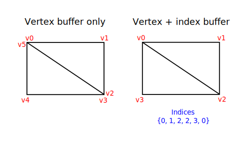
Drawing a rectangle takes two triangles, which means that we need a vertex buffer with 6 vertices. The problem is that the data of two vertices needs to be duplicated resulting in 50% redundancy. It only gets worse with more complex meshes, where vertices are reused in an average number of 3 triangles. The solution to this problem is to use an index buffer.
An index buffer is essentially an array of pointers into the vertex buffer. It allows you to reorder the vertex data, and reuse existing data for multiple vertices. The illustration above demonstrates what the index buffer would look like for the rectangle if we have a vertex buffer containing each of the four unique vertices. The first three indices define the upper-right triangle and the last three indices define the vertices for the bottom-left triangle.
Index buffer creation
In this chapter we're going to modify the vertex data and add index data to draw a rectangle like the one in the illustration. Modify the vertex data to represent the four corners:
static VERTICES: [Vertex; 4] = [
Vertex::new(vec2(-0.5, -0.5), vec3(1.0, 0.0, 0.0)),
Vertex::new(vec2(0.5, -0.5), vec3(0.0, 1.0, 0.0)),
Vertex::new(vec2(0.5, 0.5), vec3(0.0, 0.0, 1.0)),
Vertex::new(vec2(-0.5, 0.5), vec3(1.0, 1.0, 1.0)),
];
The top-left corner is red, top-right is green, bottom-right is blue and the bottom-left is white. We'll add a new array INDICES to represent the contents of the index buffer. It should match the indices in the illustration to draw the upper-right triangle and bottom-left triangle.
const INDICES: &[u16] = &[0, 1, 2, 2, 3, 0];
It is possible to use either u16 or u32 for your index buffer depending on the number of entries in VERTICES. We can stick to u16 for now because we're using less than 65,536 unique vertices.
Just like the vertex data, the indices need to be uploaded into a vk::Buffer for the GPU to be able to access them. Define two new AppData fields to hold the resources for the index buffer:
struct AppData {
// ...
vertex_buffer: vk::Buffer,
vertex_buffer_memory: vk::DeviceMemory,
index_buffer: vk::Buffer,
index_buffer_memory: vk::DeviceMemory,
}
The create_index_buffer function that we'll add now is almost identical to create_vertex_buffer:
impl App {
unsafe fn create(window: &Window) -> Result<Self> {
// ...
create_vertex_buffer(&instance, &device, &mut data)?;
create_index_buffer(&instance, &device, &mut data)?;
// ...
}
}
unsafe fn create_index_buffer(
instance: &Instance,
device: &Device,
data: &mut AppData,
) -> Result<()> {
let size = (size_of::<u16>() * INDICES.len()) as u64;
let (staging_buffer, staging_buffer_memory) = create_buffer(
instance,
device,
data,
size,
vk::BufferUsageFlags::TRANSFER_SRC,
vk::MemoryPropertyFlags::HOST_COHERENT | vk::MemoryPropertyFlags::HOST_VISIBLE,
)?;
let memory = device.map_memory(
staging_buffer_memory,
0,
size,
vk::MemoryMapFlags::empty(),
)?;
memcpy(INDICES.as_ptr(), memory.cast(), INDICES.len());
device.unmap_memory(staging_buffer_memory);
let (index_buffer, index_buffer_memory) = create_buffer(
instance,
device,
data,
size,
vk::BufferUsageFlags::TRANSFER_DST | vk::BufferUsageFlags::INDEX_BUFFER,
vk::MemoryPropertyFlags::DEVICE_LOCAL,
)?;
data.index_buffer = index_buffer;
data.index_buffer_memory = index_buffer_memory;
copy_buffer(device, data, staging_buffer, index_buffer, size)?;
device.destroy_buffer(staging_buffer, None);
device.free_memory(staging_buffer_memory, None);
Ok(())
}
There are only two notable differences. The size is now equal to the number of indices times the size of the index type, either u16 or u32. The usage of the index_buffer should be vk::BufferUsageFlags::INDEX_BUFFER instead of vk::BufferUsageFlags::VERTEX_BUFFER, which makes sense. Other than that, the process is exactly the same. We create a staging buffer to copy the contents of INDICES to and then copy it to the final device local index buffer.
The index buffer should be cleaned up at the end of the program, just like the vertex buffer:
unsafe fn destroy(&mut self) {
self.destroy_swapchain();
self.device.destroy_buffer(self.data.index_buffer, None);
self.device.free_memory(self.data.index_buffer_memory, None);
self.device.destroy_buffer(self.data.vertex_buffer, None);
self.device.free_memory(self.data.vertex_buffer_memory, None);
// ...
}
Using an index buffer
Using an index buffer for drawing involves two changes to create_command_buffers. We first need to bind the index buffer, just like we did for the vertex buffer. The difference is that you can only have a single index buffer. It's unfortunately not possible to use different indices for each vertex attribute, so we do still have to completely duplicate vertex data even if just one attribute varies.
device.cmd_bind_vertex_buffers(*command_buffer, 0, &[data.vertex_buffer], &[0]);
device.cmd_bind_index_buffer(*command_buffer, data.index_buffer, 0, vk::IndexType::UINT16);
An index buffer is bound with cmd_bind_index_buffer which has the index buffer, a byte offset into it, and the type of index data as parameters. As mentioned before, the possible types are vk::IndexType::UINT16 and vk::IndexType::UINT32.
Just binding an index buffer doesn't change anything yet, we also need to change the drawing command to tell Vulkan to use the index buffer. Remove the cmd_draw line and replace it with cmd_draw_indexed:
device.cmd_draw_indexed(*command_buffer, INDICES.len() as u32, 1, 0, 0, 0);
A call to this function is very similar to cmd_draw. The first two parameters after the command buffer specify the number of indices and the number of instances. We're not using instancing, so just specify 1 instance. The number of indices represents the number of vertices that will be passed to the vertex buffer. The next parameter specifies an offset into the index buffer, using a value of 1 would cause the graphics card to start reading at the second index. The second to last parameter specifies an offset to add to the indices in the index buffer. The final parameter specifies an offset for instancing, which we're not using.
Now run your program and you should see the following:
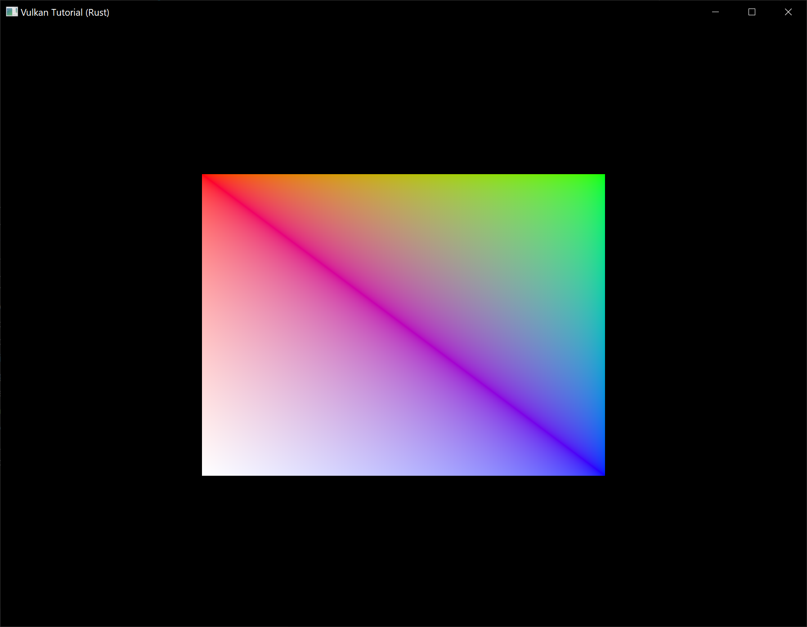
You now know how to save memory by reusing vertices with index buffers. This will become especially important in a future chapter where we're going to load complex 3D models.
The previous chapter already mentioned that you should allocate multiple resources like buffers from a single memory allocation, but in fact you should go a step further. Driver developers recommend that you also store multiple buffers, like the vertex and index buffer, into a single vk::Buffer and use offsets in commands like cmd_bind_vertex_buffers. The advantage is that your data is more cache friendly in that case, because it's closer together. It is even possible to reuse the same chunk of memory for multiple resources if they are not used during the same render operations, provided that their data is refreshed, of course. This is known as aliasing and some Vulkan functions have explicit flags to specify that you want to do this.
Descriptor layout and buffer
Code: main.rs | shader.vert | shader.frag
We're now able to pass arbitrary attributes to the vertex shader for each vertex, but what about global variables? We're going to move on to 3D graphics from this chapter on and that requires a model-view-projection matrix. We could include it as vertex data, but that's a waste of memory and it would require us to update the vertex buffer whenever the transformation changes. The transformation could easily change every single frame.
The right way to tackle this in Vulkan is to use resource descriptors. A descriptor is a way for shaders to freely access resources like buffers and images. We're going to set up a buffer that contains the transformation matrices and have the vertex shader access them through a descriptor. Usage of descriptors consists of three parts:
- Specify a descriptor layout during pipeline creation
- Allocate a descriptor set from a descriptor pool
- Bind the descriptor set during rendering
The descriptor layout specifies the types of resources that are going to be accessed by the pipeline, just like a render pass specifies the types of attachments that will be accessed. A descriptor set specifies the actual buffer or image resources that will be bound to the descriptors, just like a framebuffer specifies the actual image views to bind to render pass attachments. The descriptor set is then bound for the drawing commands just like the vertex buffers and framebuffer.
There are many types of descriptors, but in this chapter we'll work with uniform buffer objects (UBO). We'll look at other types of descriptors in future chapters, but the basic process is the same. Let's say we have the data we want the vertex shader to have in a struct like this:
#[repr(C)]
#[derive(Copy, Clone, Debug)]
struct UniformBufferObject {
model: Mat4,
view: Mat4,
proj: Mat4,
}
Then we can copy the data to a vk::Buffer and access it through a uniform buffer object descriptor from the vertex shader like this:
layout(binding = 0) uniform UniformBufferObject {
mat4 model;
mat4 view;
mat4 proj;
} ubo;
// ...
void main() {
gl_Position = ubo.proj * ubo.view * ubo.model * vec4(inPosition, 0.0, 1.0);
fragColor = inColor;
}
We're going to update the model, view and projection matrices every frame to make the rectangle from the previous chapter spin around in 3D.
Vertex shader
Modify the vertex shader to include the uniform buffer object like it was specified above. I will assume that you are familiar with MVP transformations. If you're not, see the resource mentioned in the first chapter.
#version 450
layout(binding = 0) uniform UniformBufferObject {
mat4 model;
mat4 view;
mat4 proj;
} ubo;
layout(location = 0) in vec2 inPosition;
layout(location = 1) in vec3 inColor;
layout(location = 0) out vec3 fragColor;
void main() {
gl_Position = ubo.proj * ubo.view * ubo.model * vec4(inPosition, 0.0, 1.0);
fragColor = inColor;
}
Note that the order of the uniform, in and out declarations doesn't matter. The binding directive is similar to the location directive for attributes. We're going to reference this binding in the descriptor layout. The line with gl_Position is changed to use the transformations to compute the final position in clip coordinates. Unlike the 2D triangles, the last component of the clip coordinates may not be 1, which will result in a division when converted to the final normalized device coordinates on the screen. This is used in perspective projection as the perspective division and is essential for making closer objects look larger than objects that are further away.
Descriptor set layout
The next step is to define the UBO on the Rust side and to tell Vulkan about this descriptor in the vertex shader. First we add a few more imports and a type alias:
use cgmath::{point3, Deg};
type Mat4 = cgmath::Matrix4<f32>;
Then create the UniformBufferObject struct:
#[repr(C)]
#[derive(Copy, Clone, Debug)]
struct UniformBufferObject {
model: Mat4,
view: Mat4,
proj: Mat4,
}
We can exactly match the definition in the shader using data types in the cgmath crate. The data in the matrices is binary compatible with the way the shader expects it, so we can later just copy a UniformBufferObject to a vk::Buffer.
We need to provide details about every descriptor binding used in the shaders for pipeline creation, just like we had to do for every vertex attribute and its location index. We'll set up a new function to define all of this information called create_descriptor_set_layout. It should be called right before pipeline creation, because we're going to need it there.
impl App {
unsafe fn create(window: &Window) -> Result<Self> {
// ...
create_descriptor_set_layout(&device, &mut data)?;
create_pipeline(&device, &mut data)?;
// ...
}
}
unsafe fn create_descriptor_set_layout(
device: &Device,
data: &mut AppData,
) -> Result<()> {
Ok(())
}
Every binding needs to be described through a vk::DescriptorSetLayoutBinding struct.
unsafe fn create_descriptor_set_layout(
device: &Device,
data: &mut AppData,
) -> Result<()> {
let ubo_binding = vk::DescriptorSetLayoutBinding::builder()
.binding(0)
.descriptor_type(vk::DescriptorType::UNIFORM_BUFFER)
.descriptor_count(1)
.stage_flags(vk::ShaderStageFlags::VERTEX);
Ok(())
}
The first two fields specify the binding used in the shader and the type of descriptor, which is a uniform buffer object. It is possible for the shader variable to represent an array of uniform buffer objects, and descriptor_count specifies the number of values in the array. This could be used to specify a transformation for each of the bones in a skeleton for skeletal animation, for example. Our MVP transformation is in a single uniform buffer object, so we're using a descriptor_count of 1.
We also need to specify in which shader stages the descriptor is going to be referenced. The stage_flags field can be a combination of vk::ShaderStageFlags values or the value vk::ShaderStageFlags::ALL_GRAPHICS. In our case, we're only referencing the descriptor from the vertex shader.
There is also an immutable_samplers field which is only relevant for image sampling related descriptors, which we'll look at later. You can leave this to its default value.
All of the descriptor bindings are combined into a single vk::DescriptorSetLayout object. Define a new AppData field above pipeline_layout:
struct AppData {
// ...
descriptor_set_layout: vk::DescriptorSetLayout,
pipeline_layout: vk::PipelineLayout,
// ...
}
We can then create it using create_descriptor_set_layout. This function accepts a simple vk::DescriptorSetLayoutCreateInfo with the array of bindings:
let bindings = &[ubo_binding];
let info = vk::DescriptorSetLayoutCreateInfo::builder()
.bindings(bindings);
data.descriptor_set_layout = device.create_descriptor_set_layout(&info, None)?;
We need to specify the descriptor set layout during pipeline creation to tell Vulkan which descriptors the shaders will be using. Descriptor set layouts are specified in the pipeline layout object. Modify the vk::PipelineLayoutCreateInfo to reference the layout object:
let set_layouts = &[data.descriptor_set_layout];
let layout_info = vk::PipelineLayoutCreateInfo::builder()
.set_layouts(set_layouts);
You may be wondering why it's possible to specify multiple descriptor set layouts here, because a single one already includes all of the bindings. We'll get back to that in the next chapter, where we'll look into descriptor pools and descriptor sets.
The descriptor layout should stick around while we may create new graphics pipelines i.e. until the program ends:
unsafe fn destroy(&mut self) {
self.destroy_swapchain();
self.device.destroy_descriptor_set_layout(self.data.descriptor_set_layout, None);
// ...
}
Uniform buffer
In the next chapter we'll specify the buffer that contains the UBO data for the shader, but we need to create this buffer first. We're going to copy new data to the uniform buffer every frame, so it doesn't really make any sense to have a staging buffer. It would just add extra overhead in this case and likely degrade performance instead of improving it.
We should have multiple buffers, because multiple frames may be in flight at the same time and we don't want to update the buffer in preparation of the next frame while a previous one is still reading from it! We could either have a uniform buffer per frame or per swapchain image. However, since we need to refer to the uniform buffer from the command buffer that we have per swapchain image, it makes the most sense to also have a uniform buffer per swapchain image.
To that end, add new AppData fields for uniform_buffers, and uniform_buffers_memory:
struct AppData {
// ...
index_buffer: vk::Buffer,
index_buffer_memory: vk::DeviceMemory,
uniform_buffers: Vec<vk::Buffer>,
uniform_buffers_memory: Vec<vk::DeviceMemory>,
// ...
}
Similarly, create a new function create_uniform_buffers that is called after create_index_buffer and allocates the buffers:
impl App {
unsafe fn create(window: &Window) -> Result<Self> {
// ...
create_vertex_buffer(&instance, &device, &mut data)?;
create_index_buffer(&instance, &device, &mut data)?;
create_uniform_buffers(&instance, &device, &mut data)?;
// ...
}
}
unsafe fn create_uniform_buffers(
instance: &Instance,
device: &Device,
data: &mut AppData,
) -> Result<()> {
data.uniform_buffers.clear();
data.uniform_buffers_memory.clear();
for _ in 0..data.swapchain_images.len() {
let (uniform_buffer, uniform_buffer_memory) = create_buffer(
instance,
device,
data,
size_of::<UniformBufferObject>() as u64,
vk::BufferUsageFlags::UNIFORM_BUFFER,
vk::MemoryPropertyFlags::HOST_COHERENT | vk::MemoryPropertyFlags::HOST_VISIBLE,
)?;
data.uniform_buffers.push(uniform_buffer);
data.uniform_buffers_memory.push(uniform_buffer_memory);
}
Ok(())
}
We're going to write a separate function that updates the uniform buffer with a new transformation every frame, so there will be no map_memory here. The uniform data will be used for all draw calls, so the buffer containing it should only be destroyed when we stop rendering. Since it also depends on the number of swapchain images, which could change after a recreation, we'll clean it up in destroy_swapchain:
unsafe fn destroy_swapchain(&mut self) {
self.data.uniform_buffers
.iter()
.for_each(|b| self.device.destroy_buffer(*b, None));
self.data.uniform_buffers_memory
.iter()
.for_each(|m| self.device.free_memory(*m, None));
// ...
}
This means that we also need to recreate it in recreate_swapchain:
unsafe fn recreate_swapchain(&mut self, window: &Window) -> Result<()> {
// ...
create_framebuffers(&self.device, &mut self.data)?;
create_uniform_buffers(&self.instance, &self.device, &mut self.data)?;
create_command_buffers(&self.device, &mut self.data)?;
Ok(())
}
Updating uniform data
Create a new method App::update_uniform_buffer and add a call to it from the App::render method right after we wait for the fence for the acquired swapchain image to be signalled:
impl App {
unsafe fn render(&mut self, window: &Window) -> Result<()> {
// ...
if !self.data.images_in_flight[image_index as usize].is_null() {
self.device.wait_for_fences(
&[self.data.images_in_flight[image_index as usize]],
true,
u64::MAX,
)?;
}
self.data.images_in_flight[image_index as usize] =
self.data.in_flight_fences[self.frame];
self.update_uniform_buffer(image_index)?;
// ...
}
unsafe fn update_uniform_buffer(&self, image_index: usize) -> Result<()> {
Ok(())
}
}
It is important that the uniform buffer is not updated until after this fence is signalled!
As a quick refresher on the usage of fences as introduced in the Rendering and Presentation chapter, we are using fences so that the GPU can notify the CPU once it is done processing a previously submitted frame. These notifications are used for two purposes: to prevent the CPU from submitting more frames when there are already MAX_FRAMES_IN_FLIGHT unfinished frames submitted to the GPU and also to ensure the CPU doesn't alter or delete resources like uniform buffers or command buffers while they are still being used by the GPU to process a frame.
Our uniform buffers are associated with our swapchain images, so we need to be sure that any previous frame that rendered to the acquired swapchain image is complete before we can safely update the uniform buffer. By only updating the uniform buffer after the GPU has notified the CPU that this is the case we can safely do whatever we want with the uniform buffer.
Going back to App::update_uniform_buffer, this method will generate a new transformation every frame to make the geometry spin around. We need to add an import to implement this functionality:
use std::time::Instant;
The Instant struct will allow us to do precise timekeeping. We'll use this to make sure that the geometry rotates 90 degrees per second regardless of frame rate. Add a field to App to track the time the application started and initialize the field to Instant::now() in App::create:
struct App {
// ...
start: Instant,
}
We can now use that field to determine how many seconds it has been since the application started:
unsafe fn update_uniform_buffer(&self, image_index: usize) -> Result<()> {
let time = self.start.elapsed().as_secs_f32();
Ok(())
}
We will now define the model, view and projection transformations in the uniform buffer object. The model rotation will be a simple rotation around the Z-axis using the time variable:
let model = Mat4::from_axis_angle(
vec3(0.0, 0.0, 1.0),
Deg(90.0) * time
);
The Mat4::from_axis_angle function creates a transformation matrix from the given rotation angle and rotation axis. Using a rotation angle of Deg(90.0) * time accomplishes the purpose of rotating 90 degrees per second.
let view = Mat4::look_at_rh(
point3(2.0, 2.0, 2.0),
point3(0.0, 0.0, 0.0),
vec3(0.0, 0.0, 1.0),
);
For the view transformation I've decided to look at the geometry from above at a 45 degree angle. The Mat4::look_at_rh function takes the eye position, center position and up axis as parameters. The rh at the end of this function indicates that it uses the "right-handed" coordinate system which is the coordinate system that Vulkan uses.
let mut proj = cgmath::perspective(
Deg(45.0),
self.data.swapchain_extent.width as f32 / self.data.swapchain_extent.height as f32,
0.1,
10.0,
);
I've chosen to use a perspective projection with a 45 degree vertical field-of-view. The other parameters are the aspect ratio, near and far view planes. It is important to use the current swapchain extent to calculate the aspect ratio to take into account the new width and height of the window after a resize.
proj[1][1] *= -1.0;
cgmath was originally designed for OpenGL, where the Y coordinate of the clip coordinates is inverted. The easiest way to compensate for that is to flip the sign on the scaling factor of the Y axis in the projection matrix. If you don't do this, then the image will be rendered upside down.
let ubo = UniformBufferObject { model, view, proj };
Lastly we combine our matrices into a uniform buffer object.
All of the transformations are defined now, so we can copy the data in the uniform buffer object to the current uniform buffer. This happens in exactly the same way as we did for vertex buffers, except without a staging buffer:
let memory = self.device.map_memory(
self.data.uniform_buffers_memory[image_index],
0,
size_of::<UniformBufferObject>() as u64,
vk::MemoryMapFlags::empty(),
)?;
memcpy(&ubo, memory.cast(), 1);
self.device.unmap_memory(self.data.uniform_buffers_memory[image_index]);
Using a UBO this way is not the most efficient way to pass frequently changing values to the shader. A more efficient way to pass a small buffer of data to shaders are push constants. We may look at these in a future chapter.
If you run the program now, you'll get errors about unbound descriptor sets from the validation layer and nothing will be rendered. In the next chapter we'll look at these descriptor sets, which will actually bind the vk::Buffers to the uniform buffer descriptors so that the shader can access this transformation data and get our program in running order again.
Descriptor pool and sets
Code: main.rs
The descriptor set layout from the previous chapter describes the type of descriptors that can be bound. In this chapter we're going to create a descriptor set for each vk::Buffer resource to bind it to the uniform buffer descriptor.
Descriptor pool
Descriptor sets can't be created directly, they must be allocated from a pool like command buffers. The equivalent for descriptor sets is unsurprisingly called a descriptor pool. We'll write a new function create_descriptor_pool to set it up.
impl App {
unsafe fn create(window: &Window) -> Result<Self> {
// ...
create_uniform_buffers(&instance, &device, &mut data)?;
create_descriptor_pool(&device, &mut data)?;
// ...
}
}
unsafe fn create_descriptor_pool(device: &Device, data: &mut AppData) -> Result<()> {
Ok(())
}
We first need to describe which descriptor types our descriptor sets are going to contain and how many of them, using vk::DescriptorPoolSize structures.
let ubo_size = vk::DescriptorPoolSize::builder()
.type_(vk::DescriptorType::UNIFORM_BUFFER)
.descriptor_count(data.swapchain_images.len() as u32);
We will allocate one of these descriptors for every frame. This pool size structure is referenced by the main vk::DescriptorPoolCreateInfo along with the maximum number of descriptor sets that may be allocated:
let pool_sizes = &[ubo_size];
let info = vk::DescriptorPoolCreateInfo::builder()
.pool_sizes(pool_sizes)
.max_sets(data.swapchain_images.len() as u32);
The structure has an optional flag similar to command pools that determines if individual descriptor sets can be freed or not: vk::DescriptorPoolCreateFlags::FREE_DESCRIPTOR_SET. We're not going to touch the descriptor set after creating it, so we don't need this flag.
struct AppData {
// ...
uniform_buffers: Vec<vk::Buffer>,
uniform_buffers_memory: Vec<vk::DeviceMemory>,
descriptor_pool: vk::DescriptorPool,
// ...
}
Add a new AppData field to store the handle of the descriptor pool so you can call create_descriptor_pool to create it.
data.descriptor_pool = device.create_descriptor_pool(&info, None)?;
The descriptor pool should be destroyed when the swapchain is recreated because it depends on the number of images:
unsafe fn destroy_swapchain(&mut self) {
self.device.destroy_descriptor_pool(self.data.descriptor_pool, None);
// ...
}
And recreated in App::recreate_swapchain:
unsafe fn recreate_swapchain(&mut self, window: &Window) -> Result<()> {
// ...
create_uniform_buffers(&self.instance, &self.device, &mut self.data)?;
create_descriptor_pool(&self.device, &mut self.data)?;
// ...
}
Descriptor set
We can now allocate the descriptor sets themselves. Add a create_descriptor_sets function for that purpose:
impl App {
unsafe fn create(window: &Window) -> Result<Self> {
// ...
create_descriptor_pool(&device, &mut data)?;
create_descriptor_sets(&device, &mut data)?;
// ...
}
unsafe fn recreate_swapchain(&mut self, window: &Window) -> Result<()> {
// ..
create_descriptor_pool(&self.device, &mut self.data)?;
create_descriptor_sets(&self.device, &mut self.data)?;
// ..
}
}
unsafe fn create_descriptor_sets(device: &Device, data: &mut AppData) -> Result<()> {
Ok(())
}
A descriptor set allocation is described with a vk::DescriptorSetAllocateInfo struct. You need to specify the descriptor pool to allocate from and an array of descriptor set layouts that describes each of the descriptor sets you are allocating:
let layouts = vec![data.descriptor_set_layout; data.swapchain_images.len()];
let info = vk::DescriptorSetAllocateInfo::builder()
.descriptor_pool(data.descriptor_pool)
.set_layouts(&layouts);
In our case we will create one descriptor set for each swapchain image, all with the same layout. Unfortunately we do need all the copies of the layout because the next function expects an array matching the number of sets.
Add an AppData field to hold the descriptor set handles:
struct AppData {
// ...
descriptor_pool: vk::DescriptorPool,
descriptor_sets: Vec<vk::DescriptorSet>,
// ...
}
And then allocate them with allocate_descriptor_sets:
data.descriptor_sets = device.allocate_descriptor_sets(&info)?;
You don't need to explicitly clean up descriptor sets, because they will be automatically freed when the descriptor pool is destroyed. The call to allocate_descriptor_sets will allocate descriptor sets, each with one uniform buffer descriptor.
The descriptor sets have been allocated now, but the descriptors within still need to be configured. We'll now add a loop to populate every descriptor:
for i in 0..data.swapchain_images.len() {
}
Descriptors that refer to buffers, like our uniform buffer descriptor, are configured with a vk::DescriptorBufferInfo struct. This structure specifies the buffer and the region within it that contains the data for the descriptor.
for i in 0..data.swapchain_images.len() {
let info = vk::DescriptorBufferInfo::builder()
.buffer(data.uniform_buffers[i])
.offset(0)
.range(size_of::<UniformBufferObject>() as u64);
}
If you're overwriting the whole buffer, like we are in this case, then it is is also possible to use the vk::WHOLE_SIZE value for the range. The configuration of descriptors is updated using the update_descriptor_sets function, which takes an array of vk::WriteDescriptorSet structs as parameter.
let buffer_info = &[info];
let ubo_write = vk::WriteDescriptorSet::builder()
.dst_set(data.descriptor_sets[i])
.dst_binding(0)
.dst_array_element(0)
// continued...
The first two fields specify the descriptor set to update and the binding. We gave our uniform buffer binding index 0. Remember that descriptors can be arrays, so we also need to specify the first index in the array that we want to update. We're not using an array, so the index is simply 0.
.descriptor_type(vk::DescriptorType::UNIFORM_BUFFER)
We need to specify the type of descriptor again. It's possible to update multiple descriptors at once in an array, starting at index dst_array_element.
.buffer_info(buffer_info);
The last field references an array with descriptor_count structs that actually configure the descriptors. It depends on the type of descriptor which one of the three you actually need to use. The buffer_info field is used for descriptors that refer to buffer data, image_info is used for descriptors that refer to image data, and texel_buffer_view is used for descriptors that refer to buffer views. Our descriptor is based on buffers, so we're using buffer_info.
device.update_descriptor_sets(&[ubo_write], &[] as &[vk::CopyDescriptorSet]);
The updates are applied using update_descriptor_sets. It accepts two kinds of arrays as parameters: an array of vk::WriteDescriptorSet and an array of vk::CopyDescriptorSet. The latter can be used to copy descriptors to each other, as its name implies.
Using descriptor sets
We now need to update the create_command_buffers function to actually bind the right descriptor set for each swapchain image to the descriptors in the shader with cmd_bind_descriptor_sets. This needs to be done before the cmd_draw_indexed call:
device.cmd_bind_descriptor_sets(
*command_buffer,
vk::PipelineBindPoint::GRAPHICS,
data.pipeline_layout,
0,
&[data.descriptor_sets[i]],
&[],
);
device.cmd_draw_indexed(*command_buffer, INDICES.len() as u32, 1, 0, 0, 0);
Unlike vertex and index buffers, descriptor sets are not unique to graphics pipelines. Therefore we need to specify if we want to bind descriptor sets to the graphics or compute pipeline. The next parameter is the layout that the descriptors are based on. The next two parameters specify the index of the first descriptor set and the array of sets to bind. We'll get back to this in a moment. The last parameter specifies an array of offsets that are used for dynamic descriptors. We'll look at these in a future chapter.
If you run your program now, then you'll notice that unfortunately nothing is visible. The problem is that because of the Y-flip we did in the projection matrix, the vertices are now being drawn in counter-clockwise order instead of clockwise order. This causes backface culling to kick in and prevents any geometry from being drawn. Go to the create_pipeline function and modify the front_face in vk::PipelineRasterizationStateCreateInfo to correct this:
.cull_mode(vk::CullModeFlags::BACK)
.front_face(vk::FrontFace::COUNTER_CLOCKWISE)
Run your program again and you should now see the following:
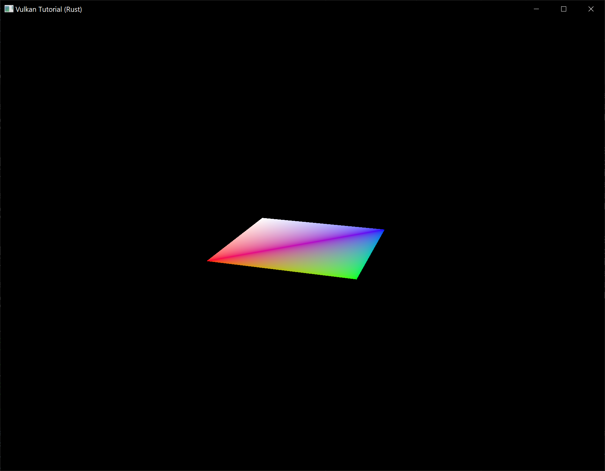
The rectangle has changed into a square because the projection matrix now corrects for aspect ratio. The App::update_uniform_buffer method takes care of screen resizing, so we don't need to recreate the descriptor set in App::recreate_swapchain.
Alignment requirements
One thing we've glossed over so far is how exactly the data in the Rust structure should match with the uniform definition in the shader. It seems obvious enough to simply use the same types in both:
#[repr(C)]
#[derive(Copy, Clone, Debug)]
struct UniformBufferObject {
model: Mat4,
view: Mat4,
proj: Mat4,
}
layout(binding = 0) uniform UniformBufferObject {
mat4 model;
mat4 view;
mat4 proj;
} ubo;
However, that's not all there is to it. For example, try modifying the struct and shader to look like this:
#[repr(C)]
#[derive(Copy, Clone, Debug)]
struct UniformBufferObject {
foo: Vec2,
model: Mat4,
view: Mat4,
proj: Mat4,
}
layout(binding = 0) uniform UniformBufferObject {
vec2 foo;
mat4 model;
mat4 view;
mat4 proj;
} ubo;
Recompile your shader and your program and run it and you'll find that the colorful square you worked so far has disappeared! That's because we haven't taken into account the alignment requirements.
Vulkan expects the data in your structure to be aligned in memory in a specific way, for example:
- Scalars have to be aligned by N (= 4 bytes given 32 bit floats).
- A
vec2must be aligned by 2N (= 8 bytes) - A
vec3orvec4must be aligned by 4N (= 16 bytes) - A nested structure must be aligned by the base alignment of its members rounded up to a multiple of 16.
- A
mat4matrix must have the same alignment as avec4.
You can find the full list of alignment requirements in the specification.
Our original shader with just three mat4 fields already met the alignment requirements. As each mat4 is 4 x 4 x 4 = 64 bytes in size, model has an offset of 0, view has an offset of 64 and proj has an offset of 128. All of these are multiples of 16 and that's why it worked fine.
The new structure starts with a vec2 which is only 8 bytes in size and therefore throws off all of the offsets. Now model has an offset of 8, view an offset of 72 and proj an offset of 136, none of which are multiples of 16. Unfortunately Rust does not have great support for controlling the alignment of fields in structs, but we can use some manual padding to fix the alignment issues:
#[repr(C)]
#[derive(Copy, Clone, Debug)]
struct UniformBufferObject {
foo: Vec2,
_padding: [u8; 8],
model: Mat4,
view: Mat4,
proj: Mat4,
}
If you now compile and run your program again you should see that the shader correctly receives its matrix values once again.
Multiple descriptor sets
As some of the structures and function calls hinted at, it is actually possible to bind multiple descriptor sets simultaneously. You need to specify a descriptor set layout for each descriptor set when creating the pipeline layout. Shaders can then reference specific descriptor sets like this:
layout(set = 0, binding = 0) uniform UniformBufferObject { ... }
You can use this feature to put descriptors that vary per-object and descriptors that are shared into separate descriptor sets. In that case you avoid rebinding most of the descriptors across draw calls which is potentially more efficient.
Images
Code: main.rs
The geometry has been colored using per-vertex colors so far, which is a rather limited approach. In this part of the tutorial we're going to implement texture mapping to make the geometry look more interesting. This will also allow us to load and draw basic 3D models in a future chapter.
Adding a texture to our application will involve the following steps:
- Create an image object backed by device memory
- Fill it with pixels from an image file
- Create an image sampler
- Add a combined image sampler descriptor to sample colors from the texture
We've already worked with image objects before, but those were automatically created by the swapchain extension. This time we'll have to create one by ourselves. Creating an image and filling it with data is similar to vertex buffer creation. We'll start by creating a staging resource and filling it with pixel data and then we copy this to the final image object that we'll use for rendering. Although it is possible to create a staging image for this purpose, Vulkan also allows you to copy pixels from a vk::Buffer to an image and the API for this is actually faster on some hardware. We'll first create this buffer and fill it with pixel values, and then we'll create an image to copy the pixels to. Creating an image is not very different from creating buffers. It involves querying the memory requirements, allocating device memory and binding it, just like we've seen before.
However, there is something extra that we'll have to take care of when working with images. Images can have different layouts that affect how the pixels are organized in memory. Due to the way graphics hardware works, simply storing the pixels row by row may not lead to the best performance, for example. When performing any operation on images, you must make sure that they have the layout that is optimal for use in that operation. We've actually already seen some of these layouts when we specified the render pass:
vk::ImageLayout::PRESENT_SRC_KHR– Optimal for presentationvk::ImageLayout::COLOR_ATTACHMENT_OPTIMAL– Optimal as attachment for writing colors from the fragment shadervk::ImageLayout::TRANSFER_SRC_OPTIMAL– Optimal as source in a transfer operation, likecmd_copy_image_to_buffervk::ImageLayout::TRANSFER_DST_OPTIMAL– Optimal as destination in a transfer operation, likecmd_copy_buffer_to_imagevk::ImageLayout::SHADER_READ_ONLY_OPTIMAL– Optimal for sampling from a shader
One of the most common ways to transition the layout of an image is a pipeline barrier. Pipeline barriers are primarily used for synchronizing access to resources, like making sure that an image was written to before it is read, but they can also be used to transition layouts. In this chapter we'll see how pipeline barriers are used for this purpose. Barriers can additionally be used to transfer queue family ownership when using vk::SharingMode::EXCLUSIVE.
Image library
There are many libraries available for loading images, and you can even write your own code to load simple formats like BMP and PPM. In this tutorial we'll be using the png crate which you should have already added to your program's dependencies.
Loading an image
We'll need to open the image file, so add the following import:
use std::fs::File;
Create a new function create_texture_image where we'll load an image and upload it into a Vulkan image object. We're going to use command buffers, so it should be called after create_command_pool.
impl App {
unsafe fn create(window: &Window) -> Result<Self> {
// ...
create_command_pool(&instance, &device, &mut data)?;
create_texture_image(&instance, &device, &mut data)?;
// ...
}
}
unsafe fn create_texture_image(
instance: &Instance,
device: &Device,
data: &mut AppData,
) -> Result<()> {
Ok(())
}
Create a new directory resources next to the shaders directory to store texture images in. We're going to load an image called texture.png from that directory. I've chosen to use the following CC0 licensed image resized to 512 x 512 pixels, but feel free to pick any PNG image (with an alpha channel) you want.

Loading an image with this library is really easy:
unsafe fn create_texture_image(
instance: &Instance,
device: &Device,
data: &mut AppData,
) -> Result<()> {
let image = File::open("resources/texture.png")?;
let decoder = png::Decoder::new(image);
let mut reader = decoder.read_info()?;
let mut pixels = vec![0; reader.info().raw_bytes()];
reader.next_frame(&mut pixels)?;
let size = reader.info().raw_bytes() as u64;
let (width, height) = reader.info().size();
Ok(())
}
This code will populate the pixels list with the pixels data with 4 bytes per pixel which will result in a total of width * height * 4 values. Note that the png crate does not have support for converting RGB images into RGBA images (at the time of writing) and the following code is expecting the pixel data to have an alpha channel. As a result you will need to make sure you use PNG images with alpha channels (such as the above image).
Staging buffer
We're now going to create a buffer in host visible memory so that we can use map_memory and copy the pixels to it. The buffer should be in host visible memory so that we can map it and it should be usable as a transfer source so that we can copy it to an image later on:
let (staging_buffer, staging_buffer_memory) = create_buffer(
instance,
device,
data,
size,
vk::BufferUsageFlags::TRANSFER_SRC,
vk::MemoryPropertyFlags::HOST_COHERENT | vk::MemoryPropertyFlags::HOST_VISIBLE,
)?;
We can then directly copy the pixel values that we got from the image loading library to the buffer:
let memory = device.map_memory(
staging_buffer_memory,
0,
size,
vk::MemoryMapFlags::empty(),
)?;
memcpy(pixels.as_ptr(), memory.cast(), pixels.len());
device.unmap_memory(staging_buffer_memory);
Texture Image
Although we could set up the shader to access the pixel values in the buffer, it's better to use image objects in Vulkan for this purpose. Image objects will make it easier and faster to retrieve colors by allowing us to use 2D coordinates, for one. Pixels within an image object are known as texels and we'll use that name from this point on. Add the following new AppData fields:
struct AppData {
// ...
texture_image: vk::Image,
texture_image_memory: vk::DeviceMemory,
}
The parameters for an image are specified in a vk::ImageCreateInfo struct:
let info = vk::ImageCreateInfo::builder()
.image_type(vk::ImageType::_2D)
.extent(vk::Extent3D { width, height, depth: 1 })
.mip_levels(1)
.array_layers(1)
// continued...
The image type, specified in the image_type field, tells Vulkan with what kind of coordinate system the texels in the image are going to be addressed. It is possible to create 1D, 2D and 3D images. One dimensional images can be used to store an array of data or gradient, two dimensional images are mainly used for textures, and three dimensional images can be used to store voxel volumes, for example. The extent field specifies the dimensions of the image, basically how many texels there are on each axis. That's why depth must be 1 instead of 0. Our texture will not be an array and we won't be using mipmapping for now.
.format(vk::Format::R8G8B8A8_SRGB)
Vulkan supports many possible image formats, but we should use the same format for the texels as the pixels in the buffer, otherwise the copy operation will fail.
.tiling(vk::ImageTiling::OPTIMAL)
The tiling field can have one of two values:
vk::ImageTiling::LINEAR– Texels are laid out in row-major order like ourpixelsarrayvk::ImageTiling::OPTIMAL– Texels are laid out in an implementation defined order for optimal access
Unlike the layout of an image, the tiling mode cannot be changed at a later time. If you want to be able to directly access texels in the memory of the image, then you must use vk::ImageTiling::LINEAR. We will be using a staging buffer instead of a staging image, so this won't be necessary. We will be using vk::ImageTiling::OPTIMAL for efficient access from the shader.
.initial_layout(vk::ImageLayout::UNDEFINED)
There are only two possible values for the initial_layout of an image:
vk::ImageLayout::UNDEFINED– Not usable by the GPU and the very first transition will discard the texels.vk::ImageLayout::PREINITIALIZED– Not usable by the GPU, but the first transition will preserve the texels.
There are few situations where it is necessary for the texels to be preserved during the first transition. One example, however, would be if you wanted to use an image as a staging image in combination with the vk::ImageTiling::LINEAR layout. In that case, you'd want to upload the texel data to it and then transition the image to be a transfer source without losing the data. In our case, however, we're first going to transition the image to be a transfer destination and then copy texel data to it from a buffer object, so we don't need this property and can safely use vk::ImageLayout::UNDEFINED.
.usage(vk::ImageUsageFlags::SAMPLED | vk::ImageUsageFlags::TRANSFER_DST)
The usage field has the same semantics as the one during buffer creation. The image is going to be used as destination for the buffer copy, so it should be set up as a transfer destination. We also want to be able to access the image from the shader to color our mesh, so the usage should include vk::ImageUsageFlags::SAMPLED.
.sharing_mode(vk::SharingMode::EXCLUSIVE)
The image will only be used by one queue family: the one that supports graphics (and therefore also) transfer operations.
.samples(vk::SampleCountFlags::_1)
The samples flag is related to multisampling. This is only relevant for images that will be used as attachments, so stick to one sample.
.flags(vk::ImageCreateFlags::empty()); // Optional.
There are also some optional flags for images that allow controlling more advanced properties for things like sparse images. Sparse images are images where only certain regions are actually backed by memory. If you were using a 3D texture for a voxel terrain, for example, then you could use this to avoid allocating memory to store large volumes of "air" values. We won't be using it in this tutorial, so you can omit the builder method for this field which will set it to the default (an empty set of flags).
data.texture_image = device.create_image(&info, None)?;
The image is created using create_image, which doesn't have any particularly noteworthy parameters. It is possible that the vk::Format::R8G8B8A8_SRGB format is not supported by the graphics hardware. You should have a list of acceptable alternatives and go with the best one that is supported. However, support for this particular format is so widespread that we'll skip this step. Using different formats would also require annoying conversions. We will get back to this in the depth buffer chapter, where we'll implement such a system.
let requirements = device.get_image_memory_requirements(data.texture_image);
let info = vk::MemoryAllocateInfo::builder()
.allocation_size(requirements.size)
.memory_type_index(get_memory_type_index(
instance,
data,
vk::MemoryPropertyFlags::DEVICE_LOCAL,
requirements,
)?);
data.texture_image_memory = device.allocate_memory(&info, None)?;
device.bind_image_memory(data.texture_image, data.texture_image_memory, 0)?;
Allocating memory for an image works in exactly the same way as allocating memory for a buffer. Use get_image_memory_requirements instead of get_buffer_memory_requirements, and use bind_image_memory instead of bind_buffer_memory.
This function is already getting quite large and there'll be a need to create more images in later chapters, so we should abstract image creation into a create_image function, like we did for buffers. Create the function and move the image object creation and memory allocation to it:
unsafe fn create_image(
instance: &Instance,
device: &Device,
data: &AppData,
width: u32,
height: u32,
format: vk::Format,
tiling: vk::ImageTiling,
usage: vk::ImageUsageFlags,
properties: vk::MemoryPropertyFlags,
) -> Result<(vk::Image, vk::DeviceMemory)> {
let info = vk::ImageCreateInfo::builder()
.image_type(vk::ImageType::_2D)
.extent(vk::Extent3D {
width,
height,
depth: 1,
})
.mip_levels(1)
.array_layers(1)
.format(format)
.tiling(tiling)
.initial_layout(vk::ImageLayout::UNDEFINED)
.usage(usage)
.samples(vk::SampleCountFlags::_1)
.sharing_mode(vk::SharingMode::EXCLUSIVE);
let image = device.create_image(&info, None)?;
let requirements = device.get_image_memory_requirements(image);
let info = vk::MemoryAllocateInfo::builder()
.allocation_size(requirements.size)
.memory_type_index(get_memory_type_index(
instance,
data,
properties,
requirements,
)?);
let image_memory = device.allocate_memory(&info, None)?;
device.bind_image_memory(image, image_memory, 0)?;
Ok((image, image_memory))
}
I've made the width, height, format, tiling mode, usage, and memory properties parameters, because these will all vary between the images we'll be creating throughout this tutorial.
The create_texture_image function can now be simplified to:
unsafe fn create_texture_image(
instance: &Instance,
device: &Device,
data: &mut AppData,
) -> Result<()> {
let image = File::open("resources/texture.png")?;
let decoder = png::Decoder::new(image);
let mut reader = decoder.read_info()?;
let mut pixels = vec![0; reader.info().raw_bytes()];
reader.next_frame(&mut pixels)?;
let size = reader.info().raw_bytes() as u64;
let (width, height) = reader.info().size();
let (staging_buffer, staging_buffer_memory) = create_buffer(
instance,
device,
data,
size,
vk::BufferUsageFlags::TRANSFER_SRC,
vk::MemoryPropertyFlags::HOST_COHERENT | vk::MemoryPropertyFlags::HOST_VISIBLE,
)?;
let memory = device.map_memory(
staging_buffer_memory,
0,
size,
vk::MemoryMapFlags::empty(),
)?;
memcpy(pixels.as_ptr(), memory.cast(), pixels.len());
device.unmap_memory(staging_buffer_memory);
let (texture_image, texture_image_memory) = create_image(
instance,
device,
data,
width,
height,
vk::Format::R8G8B8A8_SRGB,
vk::ImageTiling::OPTIMAL,
vk::ImageUsageFlags::SAMPLED | vk::ImageUsageFlags::TRANSFER_DST,
vk::MemoryPropertyFlags::DEVICE_LOCAL,
)?;
data.texture_image = texture_image;
data.texture_image_memory = texture_image_memory;
Ok(())
}
Layout transitions
The function we're going to write now involves recording and executing a command buffer again, so now's a good time to move that logic into a helper function or two:
unsafe fn begin_single_time_commands(
device: &Device,
data: &AppData,
) -> Result<vk::CommandBuffer> {
let info = vk::CommandBufferAllocateInfo::builder()
.level(vk::CommandBufferLevel::PRIMARY)
.command_pool(data.command_pool)
.command_buffer_count(1);
let command_buffer = device.allocate_command_buffers(&info)?[0];
let info = vk::CommandBufferBeginInfo::builder()
.flags(vk::CommandBufferUsageFlags::ONE_TIME_SUBMIT);
device.begin_command_buffer(command_buffer, &info)?;
Ok(command_buffer)
}
unsafe fn end_single_time_commands(
device: &Device,
data: &AppData,
command_buffer: vk::CommandBuffer,
) -> Result<()> {
device.end_command_buffer(command_buffer)?;
let command_buffers = &[command_buffer];
let info = vk::SubmitInfo::builder()
.command_buffers(command_buffers);
device.queue_submit(data.graphics_queue, &[info], vk::Fence::null())?;
device.queue_wait_idle(data.graphics_queue)?;
device.free_command_buffers(data.command_pool, &[command_buffer]);
Ok(())
}
The code for these functions is based on the existing code in copy_buffer. You can now simplify that function to:
unsafe fn copy_buffer(
device: &Device,
data: &AppData,
source: vk::Buffer,
destination: vk::Buffer,
size: vk::DeviceSize,
) -> Result<()> {
let command_buffer = begin_single_time_commands(device, data)?;
let regions = vk::BufferCopy::builder().size(size);
device.cmd_copy_buffer(command_buffer, source, destination, &[regions]);
end_single_time_commands(device, data, command_buffer)?;
Ok(())
}
If we were still using buffers, then we could now write a function to record and execute cmd_copy_buffer_to_image to finish the job, but this command requires the image to be in the right layout first. Create a new function to handle layout transitions:
unsafe fn transition_image_layout(
device: &Device,
data: &AppData,
image: vk::Image,
format: vk::Format,
old_layout: vk::ImageLayout,
new_layout: vk::ImageLayout,
) -> Result<()> {
let command_buffer = begin_single_time_commands(device, data)?;
end_single_time_commands(device, data, command_buffer)?;
Ok(())
}
One of the most common ways to perform layout transitions is using an image memory barrier. A pipeline barrier like that is generally used to synchronize access to resources, like ensuring that a write to a buffer completes before reading from it, but it can also be used to transition image layouts and transfer queue family ownership when vk::SharingMode::EXCLUSIVE is used. There is an equivalent buffer memory barrier to do this for buffers.
let barrier = vk::ImageMemoryBarrier::builder()
.old_layout(old_layout)
.new_layout(new_layout)
// continued...
The first two fields specify layout transition. It is possible to use vk::ImageLayout::UNDEFINED as old_layout if you don't care about the existing contents of the image.
.src_queue_family_index(vk::QUEUE_FAMILY_IGNORED)
.dst_queue_family_index(vk::QUEUE_FAMILY_IGNORED)
If you are using the barrier to transfer queue family ownership, then these two fields should be the indices of the queue families. They must be set to vk::QUEUE_FAMILY_IGNORED if you don't want to do this (not the default value!).
.image(image)
.subresource_range(subresource)
The image and subresource_range specify the image that is affected and the specific part of the image. We'll need to define subresource before our image memory barrier:
let subresource = vk::ImageSubresourceRange::builder()
.aspect_mask(vk::ImageAspectFlags::COLOR)
.base_mip_level(0)
.level_count(1)
.base_array_layer(0)
.layer_count(1);
Our image is not an array and does not have mipmapping levels, so only one level and layer are specified.
.src_access_mask(vk::AccessFlags::empty()) // TODO
.dst_access_mask(vk::AccessFlags::empty()); // TODO
Barriers are primarily used for synchronization purposes, so you must specify which types of operations that involve the resource must happen before the barrier, and which operations that involve the resource must wait on the barrier. We need to do that despite already using queue_wait_idle to manually synchronize. The right values depend on the old and new layout, so we'll get back to this once we've figured out which transitions we're going to use.
device.cmd_pipeline_barrier(
command_buffer,
vk::PipelineStageFlags::empty(), // TODO
vk::PipelineStageFlags::empty(), // TODO
vk::DependencyFlags::empty(),
&[] as &[vk::MemoryBarrier],
&[] as &[vk::BufferMemoryBarrier],
&[barrier],
);
All types of pipeline barriers are submitted using the same function. The first parameter after the command buffer specifies in which pipeline stage the operations occur that should happen before the barrier. The second parameter specifies the pipeline stage in which operations will wait on the barrier. The pipeline stages that you are allowed to specify before and after the barrier depend on how you use the resource before and after the barrier. The allowed values are listed in this table of the specification. For example, if you're going to read from a uniform after the barrier, you would specify a usage of vk::AccessFlags::UNIFORM_READ and the earliest shader that will read from the uniform as pipeline stage, for example vk::PipelineStageFlags::FRAGMENT_SHADER. It would not make sense to specify a non-shader pipeline stage for this type of usage and the validation layers will warn you when you specify a pipeline stage that does not match the type of usage.
The fourth parameter is either an empty set of vk::DependencyFlags or vk::DependencyFlags::BY_REGION. The latter turns the barrier into a per-region condition. That means that the implementation is allowed to already begin reading from the parts of a resource that were written so far, for example.
The last three parameters reference slices of pipeline barriers of the three available types: memory barriers, buffer memory barriers, and image memory barriers like the one we're using here. Note that we're not using the vk::Format parameter yet, but we'll be using that one for special transitions in the depth buffer chapter.
Copying buffer to image
Before we get back to create_texture_image, we're going to write one more helper function: copy_buffer_to_image:
unsafe fn copy_buffer_to_image(
device: &Device,
data: &AppData,
buffer: vk::Buffer,
image: vk::Image,
width: u32,
height: u32,
) -> Result<()> {
let command_buffer = begin_single_time_commands(device, data)?;
end_single_time_commands(device, data, command_buffer)?;
Ok(())
}
Just like with buffer copies, you need to specify which part of the buffer is going to be copied to which part of the image. This happens through vk::BufferImageCopy structs:
let subresource = vk::ImageSubresourceLayers::builder()
.aspect_mask(vk::ImageAspectFlags::COLOR)
.mip_level(0)
.base_array_layer(0)
.layer_count(1);
let region = vk::BufferImageCopy::builder()
.buffer_offset(0)
.buffer_row_length(0)
.buffer_image_height(0)
.image_subresource(subresource)
.image_offset(vk::Offset3D { x: 0, y: 0, z: 0 })
.image_extent(vk::Extent3D { width, height, depth: 1 });
Most of these fields are self-explanatory. The buffer_offset specifies the byte offset in the buffer at which the pixel values start. The buffer_row_length and buffer_image_height fields specify how the pixels are laid out in memory. For example, you could have some padding bytes between rows of the image. Specifying 0 for both indicates that the pixels are simply tightly packed like they are in our case. The image_subresource, image_offset and image_extent fields indicate to which part of the image we want to copy the pixels.
Buffer to image copy operations are enqueued using the cmd_copy_buffer_to_image function:
device.cmd_copy_buffer_to_image(
command_buffer,
buffer,
image,
vk::ImageLayout::TRANSFER_DST_OPTIMAL,
&[region],
);
The fourth parameter indicates which layout the image is currently using. I'm assuming here that the image has already been transitioned to the layout that is optimal for copying pixels to. Right now we're only copying one chunk of pixels to the whole image, but it's possible to specify an array of vk::BufferImageCopy to perform many different copies from this buffer to the image in one operation.
Preparing the texture image
We now have all of the tools we need to finish setting up the texture image, so we're going back to the create_texture_image function. The last thing we did there was creating the texture image. The next step is to copy the staging buffer to the texture image. This involves two steps:
- Transition the texture image to
vk::ImageLayout::TRANSFER_DST_OPTIMAL - Execute the buffer to image copy operation
This is easy to do with the functions we just created:
transition_image_layout(
device,
data,
data.texture_image,
vk::Format::R8G8B8A8_SRGB,
vk::ImageLayout::UNDEFINED,
vk::ImageLayout::TRANSFER_DST_OPTIMAL,
)?;
copy_buffer_to_image(
device,
data,
staging_buffer,
data.texture_image,
width,
height,
)?;
The image was created with the vk::ImageLayout::UNDEFINED layout, so that one should be specified as old layout when transitioning texture_image. Remember that we can do this because we don't care about its contents before performing the copy operation.
To be able to start sampling from the texture image in the shader, we need one last transition to prepare it for shader access:
transition_image_layout(
device,
data,
data.texture_image,
vk::Format::R8G8B8A8_SRGB,
vk::ImageLayout::TRANSFER_DST_OPTIMAL,
vk::ImageLayout::SHADER_READ_ONLY_OPTIMAL,
)?;
Transition barrier masks
If you run your application with validation layers enabled now, then you'll see that it complains about the access masks and pipeline stages in transition_image_layout being invalid. We still need to set those based on the layouts in the transition.
There are two transitions we need to handle:
- Undefined → transfer destination – transfer writes that don't need to wait on anything
- Transfer destination → shader reading – shader reads should wait on transfer writes, specifically the shader reads in the fragment shader, because that's where we're going to use the texture
These rules are specified using the following access masks and pipeline stages which should be added at the beginning of transition_image_layout:
let (
src_access_mask,
dst_access_mask,
src_stage_mask,
dst_stage_mask,
) = match (old_layout, new_layout) {
(vk::ImageLayout::UNDEFINED, vk::ImageLayout::TRANSFER_DST_OPTIMAL) => (
vk::AccessFlags::empty(),
vk::AccessFlags::TRANSFER_WRITE,
vk::PipelineStageFlags::TOP_OF_PIPE,
vk::PipelineStageFlags::TRANSFER,
),
(vk::ImageLayout::TRANSFER_DST_OPTIMAL, vk::ImageLayout::SHADER_READ_ONLY_OPTIMAL) => (
vk::AccessFlags::TRANSFER_WRITE,
vk::AccessFlags::SHADER_READ,
vk::PipelineStageFlags::TRANSFER,
vk::PipelineStageFlags::FRAGMENT_SHADER,
),
_ => return Err(anyhow!("Unsupported image layout transition!")),
};
Then update the vk::ImageMemoryBarrier struct and the cmd_pipeline_barrier call with the access flags and pipeline stage masks:
let barrier = vk::ImageMemoryBarrier::builder()
.old_layout(old_layout)
.new_layout(new_layout)
.src_queue_family_index(vk::QUEUE_FAMILY_IGNORED)
.dst_queue_family_index(vk::QUEUE_FAMILY_IGNORED)
.image(image)
.subresource_range(subresource)
.src_access_mask(src_access_mask)
.dst_access_mask(dst_access_mask);
device.cmd_pipeline_barrier(
command_buffer,
src_stage_mask,
dst_stage_mask,
vk::DependencyFlags::empty(),
&[] as &[vk::MemoryBarrier],
&[] as &[vk::BufferMemoryBarrier],
&[barrier],
);
As you can see in the aforementioned table, transfer writes must occur in the pipeline transfer stage. Since the writes don't have to wait on anything, you may specify an empty access mask and the earliest possible pipeline stage vk::PipelineStageFlags::TOP_OF_PIPE for the pre-barrier operations. It should be noted that vk::PipelineStageFlags::TRANSFER is not a real stage within the graphics and compute pipelines. It is more of a pseudo-stage where transfers happen. See the documentation for more information and other examples of pseudo-stages.
The image will be written in the same pipeline stage and subsequently read by the fragment shader, which is why we specify shader reading access in the fragment shader pipeline stage.
If we need to do more transitions in the future, then we'll extend the function. The application should now run successfully, although there are of course no visual changes yet.
One thing to note is that command buffer submission results in implicit vk::AccessFlags::HOST_WRITE synchronization at the beginning. Since the transition_image_layout function executes a command buffer with only a single command, you could use this implicit synchronization and set src_access_mask to vk::AccessFlags::empty() if you ever needed a vk::AccessFlags::HOST_WRITE dependency in a layout transition. It's up to you if you want to be explicit about it or not, but I'm personally not a fan of relying on these OpenGL-like "hidden" operations.
There is actually a special type of image layout that supports all operations, vk::ImageLayout::GENERAL. The problem with it, of course, is that it doesn't necessarily offer the best performance for any operation. It is required for some special cases, like using an image as both input and output, or for reading an image after it has left the preinitialized layout.
All of the helper functions that submit commands so far have been set up to execute synchronously by waiting for the queue to become idle. For practical applications it is recommended to combine these operations in a single command buffer and execute them asynchronously for higher throughput, especially the transitions and copy in the create_texture_image function. Try to experiment with this by creating a setup_command_buffer that the helper functions record commands into, and add a flush_setup_commands to execute the commands that have been recorded so far. It's best to do this after the texture mapping works to check if the texture resources are still set up correctly.
Cleanup
Finish the create_texture_image function by cleaning up the staging buffer and its memory at the end:
device.destroy_buffer(staging_buffer, None);
device.free_memory(staging_buffer_memory, None);
The main texture image is used until the end of the program:
unsafe fn destroy(&mut self) {
self.destroy_swapchain();
self.device.destroy_image(self.data.texture_image, None);
self.device.free_memory(self.data.texture_image_memory, None);
// ...
}
The image now contains the texture, but we still need a way to access it from the graphics pipeline. We'll work on that in the next chapter.
Image view and sampler
Code: main.rs
In this chapter we're going to create two more resources that are needed for the graphics pipeline to sample an image. The first resource is one that we've already seen before while working with the swapchain images, but the second one is new - it relates to how the shader will read texels from the image.
Texture image view
We've seen before, with the swapchain images and the framebuffer, that images are accessed through image views rather than directly. We will also need to create such an image view for the texture image.
Add an AppData field to hold a vk::ImageView for the texture image and create a new function create_texture_image_view where we'll create it:
impl App {
unsafe fn create(window: &Window) -> Result<Self> {
// ...
create_texture_image(&instance, &device, &mut data)?;
create_texture_image_view(&device, &mut data)?;
// ...
}
}
struct AppData {
// ...
texture_image: vk::Image,
texture_image_memory: vk::DeviceMemory,
texture_image_view: vk::ImageView,
// ...
}
unsafe fn create_texture_image_view(device: &Device, data: &mut AppData) -> Result<()> {
Ok(())
}
The code for this function can be based directly on create_swapchain_image_views. The only two changes you have to make are the format and the image:
let subresource_range = vk::ImageSubresourceRange::builder()
.aspect_mask(vk::ImageAspectFlags::COLOR)
.base_mip_level(0)
.level_count(1)
.base_array_layer(0)
.layer_count(1);
let info = vk::ImageViewCreateInfo::builder()
.image(data.texture_image)
.view_type(vk::ImageViewType::_2D)
.format(vk::Format::R8G8B8A8_SRGB)
.subresource_range(subresource_range);
I've left out the explicit components initialization, because vk::ComponentSwizzle::IDENTITY is defined as 0 anyway. Finish creating the image view by calling create_image_view:
data.texture_image_view = device.create_image_view(&info, None)?;
Because so much of the logic is duplicated from create_swapchain_image_views, you may wish to abstract it into a new create_image_view function:
unsafe fn create_image_view(
device: &Device,
image: vk::Image,
format: vk::Format,
) -> Result<vk::ImageView> {
let subresource_range = vk::ImageSubresourceRange::builder()
.aspect_mask(vk::ImageAspectFlags::COLOR)
.base_mip_level(0)
.level_count(1)
.base_array_layer(0)
.layer_count(1);
let info = vk::ImageViewCreateInfo::builder()
.image(image)
.view_type(vk::ImageViewType::_2D)
.format(format)
.subresource_range(subresource_range);
Ok(device.create_image_view(&info, None)?)
}
The create_texture_image_view function can now be simplified to:
unsafe fn create_texture_image_view(device: &Device, data: &mut AppData) -> Result<()> {
data.texture_image_view = create_image_view(
device,
data.texture_image,
vk::Format::R8G8B8A8_SRGB,
)?;
Ok(())
}
And create_swapchain_image_views can be simplified to:
unsafe fn create_swapchain_image_views(device: &Device, data: &mut AppData) -> Result<()> {
data.swapchain_image_views = data
.swapchain_images
.iter()
.map(|i| create_image_view(device, *i, data.swapchain_format))
.collect::<Result<Vec<_>, _>>()?;
Ok(())
}
Make sure to destroy the image view at the end of the program, right before destroying the image itself:
unsafe fn destroy(&mut self) {
self.destroy_swapchain();
self.device.destroy_image_view(self.data.texture_image_view, None);
// ...
}
Samplers
It is possible for shaders to read texels directly from images, but that is not very common when they are used as textures. Textures are usually accessed through samplers, which will apply filtering and transformations to compute the final color that is retrieved.
These filters are helpful to deal with problems like oversampling. Consider a texture that is mapped to geometry with more fragments than texels. If you simply took the closest texel for the texture coordinate in each fragment, then you would get a result like the first image:

If you combined the 4 closest texels through linear interpolation, then you would get a smoother result like the one on the right. Of course your application may have art style requirements that fit the left style more (think Minecraft), but the right is preferred in conventional graphics applications. A sampler object automatically applies this filtering for you when reading a color from the texture.
Undersampling is the opposite problem, where you have more texels than fragments. This will lead to artifacts when sampling high frequency patterns like a checkerboard texture at a sharp angle:

As shown in the left image, the texture turns into a blurry mess in the distance. The solution to this is anisotropic filtering, which can also be applied automatically by a sampler.
Aside from these filters, a sampler can also take care of transformations. It determines what happens when you try to read texels outside the image through its addressing mode. The image below displays some of the possibilities:

We will now create a function create_texture_sampler to set up such a sampler object. We'll be using that sampler to read colors from the texture in the shader later on.
impl App {
unsafe fn create(window: &Window) -> Result<Self> {
// ...
create_texture_image(&instance, &device, &mut data)?;
create_texture_image_view(&device, &mut data)?;
create_texture_sampler(&device, &mut data)?;
// ...
}
}
unsafe fn create_texture_sampler(device: &Device, data: &mut AppData) -> Result<()> {
Ok(())
}
Samplers are configured through a vk::SamplerCreateInfo structure, which specifies all filters and transformations that it should apply.
let info = vk::SamplerCreateInfo::builder()
.mag_filter(vk::Filter::LINEAR)
.min_filter(vk::Filter::LINEAR)
// continued...
The mag_filter and min_filter fields specify how to interpolate texels that are magnified or minified. Magnification concerns the oversampling problem describes above, and minification concerns undersampling. The choices are vk::Filter::NEAREST and vk::Filter::LINEAR, corresponding to the modes demonstrated in the images above.
.address_mode_u(vk::SamplerAddressMode::REPEAT)
.address_mode_v(vk::SamplerAddressMode::REPEAT)
.address_mode_w(vk::SamplerAddressMode::REPEAT)
The addressing mode can be specified per axis using the address_mode fields. The available values are listed below. Most of these are demonstrated in the image above. Note that the axes are called U, V and W instead of X, Y and Z. This is a convention for texture space coordinates.
vk::SamplerAddressMode::REPEAT– Repeat the texture when going beyond the image dimensions.vk::SamplerAddressMode::MIRRORED_REPEAT– Like repeat, but inverts the coordinates to mirror the image when going beyond the dimensions.vk::SamplerAddressMode::CLAMP_TO_EDGE– Take the color of the edge closest to the coordinate beyond the image dimensions.vk::SamplerAddressMode::MIRROR_CLAMP_TO_EDGE– Like clamp to edge, but instead uses the edge opposite to the closest edge.vk::SamplerAddressMode::CLAMP_TO_BORDER– Return a solid color when sampling beyond the dimensions of the image.
It doesn't really matter which addressing mode we use here, because we're not going to sample outside of the image in this tutorial. However, the repeat mode is probably the most common mode, because it can be used to tile textures like floors and walls.
.anisotropy_enable(true)
.max_anisotropy(16.0)
These two fields specify if anisotropic filtering should be used. There is no reason not to use this unless performance is a concern. The max_anisotropy field limits the amount of texel samples that can be used to calculate the final color. A lower value results in better performance, but lower quality results. There is no graphics hardware available today that will use more than 16 samples, because the difference is negligible beyond that point.
.border_color(vk::BorderColor::INT_OPAQUE_BLACK)
The border_color field specifies which color is returned when sampling beyond the image with clamp to border addressing mode. It is possible to return black, white or transparent in either float or int formats. You cannot specify an arbitrary color.
.unnormalized_coordinates(false)
The unnormalized_coordinates field specifies which coordinate system you want to use to address texels in an image. If this field is true, then you can simply use coordinates within the [0, width) and [0, height) range. If it is false, then the texels are addressed using the [0, 1) range on all axes. Real-world applications almost always use normalized coordinates, because then it's possible to use textures of varying resolutions with the exact same coordinates.
.compare_enable(false)
.compare_op(vk::CompareOp::ALWAYS)
If a comparison function is enabled, then texels will first be compared to a value, and the result of that comparison is used in filtering operations. This is mainly used for percentage-closer filtering on shadow maps. We'll look at this in a future chapter.
.mipmap_mode(vk::SamplerMipmapMode::LINEAR)
.mip_lod_bias(0.0)
.min_lod(0.0)
.max_lod(0.0);
All of these fields apply to mipmapping. We will look at mipmapping in a later chapter, but basically it's another type of filter that can be applied.
The functioning of the sampler is now fully defined. Add an AppData field to hold the handle of the sampler object:
struct AppData {
// ...
texture_image_view: vk::ImageView,
texture_sampler: vk::Sampler,
// ...
}
Then create the sampler with create_sampler:
data.texture_sampler = device.create_sampler(&info, None)?;
Note the sampler does not reference a vk::Image anywhere. The sampler is a distinct object that provides an interface to extract colors from a texture. It can be applied to any image you want, whether it is 1D, 2D or 3D. This is different from many older APIs, which combined texture images and filtering into a single state.
Destroy the sampler at the end of the program when we'll no longer be accessing the image:
unsafe fn destroy(&mut self) {
self.destroy_swapchain();
self.device.destroy_sampler(self.data.texture_sampler, None);
// ...
}
Anisotropy device feature
If you run your program right now, you'll see a validation layer message like this:

That's because anisotropic filtering is actually an optional device feature. We need to update the create_logical_device function to request it:
let features = vk::PhysicalDeviceFeatures::builder()
.sampler_anisotropy(true);
And even though it is very unlikely that a modern graphics card will not support it, we should update check_physical_device to check if it is available:
unsafe fn check_physical_device(
instance: &Instance,
data: &AppData,
physical_device: vk::PhysicalDevice,
) -> Result<()> {
// ...
let features = instance.get_physical_device_features(physical_device);
if features.sampler_anisotropy != vk::TRUE {
return Err(anyhow!(SuitabilityError("No sampler anisotropy.")));
}
Ok(())
}
The get_physical_device_features repurposes the vk::PhysicalDeviceFeatures struct to indicate which features are supported rather than requested by setting the boolean values.
Instead of enforcing the availability of anisotropic filtering, it's also possible to simply not use it by conditionally setting:
.anisotropy_enable(false)
.max_anisotropy(1.0)
In the next chapter we will expose the image and sampler objects to the shaders to draw the texture onto the square.
Combined image sampler
Code: main.rs | shader.vert | shader.frag
We looked at descriptors for the first time in the uniform buffers part of the tutorial. In this chapter we will look at a new type of descriptor: combined image sampler. This descriptor makes it possible for shaders to access an image resource through a sampler object like the one we created in the previous chapter.
We'll start by modifying the descriptor set layout, descriptor pool and descriptor set to include such a combined image sampler descriptor. After that, we're going to add texture coordinates to Vertex and modify the fragment shader to read colors from the texture instead of just interpolating the vertex colors.
Updating the descriptors
Browse to the create_descriptor_set_layout function and add a vk::DescriptorSetLayoutBinding for a combined image sampler descriptor. We'll simply put it in the binding after the uniform buffer:
let sampler_binding = vk::DescriptorSetLayoutBinding::builder()
.binding(1)
.descriptor_type(vk::DescriptorType::COMBINED_IMAGE_SAMPLER)
.descriptor_count(1)
.stage_flags(vk::ShaderStageFlags::FRAGMENT);
let bindings = &[ubo_binding, sampler_binding];
let info = vk::DescriptorSetLayoutCreateInfo::builder()
.bindings(bindings);
Make sure to set the stage_flags to indicate that we intend to use the combined image sampler descriptor in the fragment shader. That's where the color of the fragment is going to be determined. It is possible to use texture sampling in the vertex shader, for example to dynamically deform a grid of vertices by a heightmap.
We must also create a larger descriptor pool to make room for the allocation of the combined image sampler by adding another vk::DescriptorPoolSize of type vk::DescriptorType::COMBINED_IMAGE_SAMPLER to the vk::DescriptorPoolCreateInfo. Go to the create_descriptor_pool function and modify it to include a vk::DescriptorPoolSize for this descriptor:
let sampler_size = vk::DescriptorPoolSize::builder()
.type_(vk::DescriptorType::COMBINED_IMAGE_SAMPLER)
.descriptor_count(data.swapchain_images.len() as u32);
let pool_sizes = &[ubo_size, sampler_size];
let info = vk::DescriptorPoolCreateInfo::builder()
.pool_sizes(pool_sizes)
.max_sets(data.swapchain_images.len() as u32);
Inadequate descriptor pools are a good example of a problem that the validation layers will not catch: As of Vulkan 1.1, allocate_descriptor_sets may fail with the error code vk::ErrorCode::OUT_OF_POOL_MEMORY if the pool is not sufficiently large, but the driver may also try to solve the problem internally. This means that sometimes (depending on hardware, pool size and allocation size) the driver will let us get away with an allocation that exceeds the limits of our descriptor pool. Other times, allocate_descriptor_sets will fail and return vk::ErrorCode::OUT_OF_POOL_MEMORY. This can be particularly frustrating if the allocation succeeds on some machines, but fails on others.
Since Vulkan shifts the responsiblity for the allocation to the driver, it is no longer a strict requirement to only allocate as many descriptors of a certain type (vk::DescriptorType::COMBINED_IMAGE_SAMPLER, etc.) as specified by the corresponding descriptor_count members for the creation of the descriptor pool. However, it remains best practise to do so, and in the future, VK_LAYER_KHRONOS_validation will warn about this type of problem if you enable Best Practice Validation.
The final step is to bind the actual image and sampler resources to the descriptors in the descriptor set. Go to the create_descriptor_sets function. The resources for a combined image sampler structure must be specified in a vk::DescriptorImageInfo struct, just like the buffer resource for a uniform buffer descriptor is specified in a vk::DescriptorBufferInfo struct. This is where the objects from the previous chapter come together.
let info = vk::DescriptorImageInfo::builder()
.image_layout(vk::ImageLayout::SHADER_READ_ONLY_OPTIMAL)
.image_view(data.texture_image_view)
.sampler(data.texture_sampler);
let image_info = &[info];
let sampler_write = vk::WriteDescriptorSet::builder()
.dst_set(data.descriptor_sets[i])
.dst_binding(1)
.dst_array_element(0)
.descriptor_type(vk::DescriptorType::COMBINED_IMAGE_SAMPLER)
.image_info(image_info);
device.update_descriptor_sets(
&[ubo_write, sampler_write],
&[] as &[vk::CopyDescriptorSet],
);
The descriptors must be updated with this image info, just like the buffer. This time we're using the image_info array instead of buffer_info. The descriptors are now ready to be used by the shaders!
Texture coordinates
There is one important ingredient for texture mapping that is still missing, and that's the actual coordinates for each vertex. The coordinates determine how the image is actually mapped to the geometry.
#[repr(C)]
#[derive(Copy, Clone, Debug)]
struct Vertex {
pos: Vec2,
color: Vec3,
tex_coord: Vec2,
}
impl Vertex {
const fn new(pos: Vec2, color: Vec3, tex_coord: Vec2) -> Self {
Self { pos, color, tex_coord }
}
fn binding_description() -> vk::VertexInputBindingDescription {
vk::VertexInputBindingDescription::builder()
.binding(0)
.stride(size_of::<Vertex>() as u32)
.input_rate(vk::VertexInputRate::VERTEX)
.build()
}
fn attribute_descriptions() -> [vk::VertexInputAttributeDescription; 3] {
let pos = vk::VertexInputAttributeDescription::builder()
.binding(0)
.location(0)
.format(vk::Format::R32G32_SFLOAT)
.offset(0)
.build();
let color = vk::VertexInputAttributeDescription::builder()
.binding(0)
.location(1)
.format(vk::Format::R32G32B32_SFLOAT)
.offset(size_of::<Vec2>() as u32)
.build();
let tex_coord = vk::VertexInputAttributeDescription::builder()
.binding(0)
.location(2)
.format(vk::Format::R32G32_SFLOAT)
.offset((size_of::<Vec2>() + size_of::<Vec3>()) as u32)
.build();
[pos, color, tex_coord]
}
}
Modify the Vertex struct to include a Vec2 for texture coordinates. Make sure to also add a vk::VertexInputAttributeDescription so that we can use access texture coordinates as input in the vertex shader. That is necessary to be able to pass them to the fragment shader for interpolation across the surface of the square.
static VERTICES: [Vertex; 4] = [
Vertex::new(vec2(-0.5, -0.5), vec3(1.0, 0.0, 0.0), vec2(1.0, 0.0)),
Vertex::new(vec2(0.5, -0.5), vec3(0.0, 1.0, 0.0), vec2(0.0, 0.0)),
Vertex::new(vec2(0.5, 0.5), vec3(0.0, 0.0, 1.0), vec2(0.0, 1.0)),
Vertex::new(vec2(-0.5, 0.5), vec3(1.0, 1.0, 1.0), vec2(1.0, 1.0)),
];
In this tutorial, I will simply fill the square with the texture by using coordinates from 0, 0 in the top-left corner to 1, 1 in the bottom-right corner. Feel free to experiment with different coordinates. Try using coordinates below 0 or above 1 to see the addressing modes in action!
Shaders
The final step is modifying the shaders to sample colors from the texture. We first need to modify the vertex shader to pass through the texture coordinates to the fragment shader:
layout(location = 0) in vec2 inPosition;
layout(location = 1) in vec3 inColor;
layout(location = 2) in vec2 inTexCoord;
layout(location = 0) out vec3 fragColor;
layout(location = 1) out vec2 fragTexCoord;
void main() {
gl_Position = ubo.proj * ubo.view * ubo.model * vec4(inPosition, 0.0, 1.0);
fragColor = inColor;
fragTexCoord = inTexCoord;
}
Just like the per vertex colors, the fragTexCoord values will be smoothly interpolated across the area of the square by the rasterizer. We can visualize this by having the fragment shader output the texture coordinates as colors:
#version 450
layout(location = 0) in vec3 fragColor;
layout(location = 1) in vec2 fragTexCoord;
layout(location = 0) out vec4 outColor;
void main() {
outColor = vec4(fragTexCoord, 0.0, 1.0);
}
You should see something like the image below. Don't forget to recompile the shaders!

The green channel represents the horizontal coordinates and the red channel the vertical coordinates. The black and yellow corners confirm that the texture coordinates are correctly interpolated from 0, 0 to 1, 1 across the square. Visualizing data using colors is the shader programming equivalent of printf debugging, for lack of a better option!
A combined image sampler descriptor is represented in GLSL by a sampler uniform. Add a reference to it in the fragment shader:
layout(binding = 1) uniform sampler2D texSampler;
There are equivalent sampler1D and sampler3D types for other types of images. Make sure to use the correct binding here.
void main() {
outColor = texture(texSampler, fragTexCoord);
}
Textures are sampled using the built-in texture function. It takes a sampler and coordinate as arguments. The sampler automatically takes care of the filtering and transformations in the background. You should now see the texture on the square when you run the application:
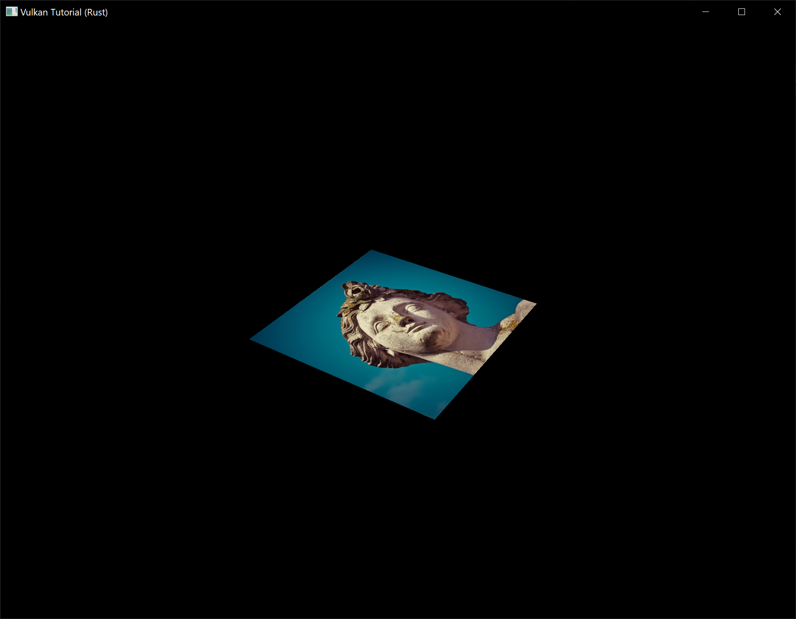
Try experimenting with the addressing modes by scaling the texture coordinates to values higher than 1. For example, the following fragment shader produces the result in the image below when using vk::SamplerAddressMode::REPEAT:
void main() {
outColor = texture(texSampler, fragTexCoord * 2.0);
}
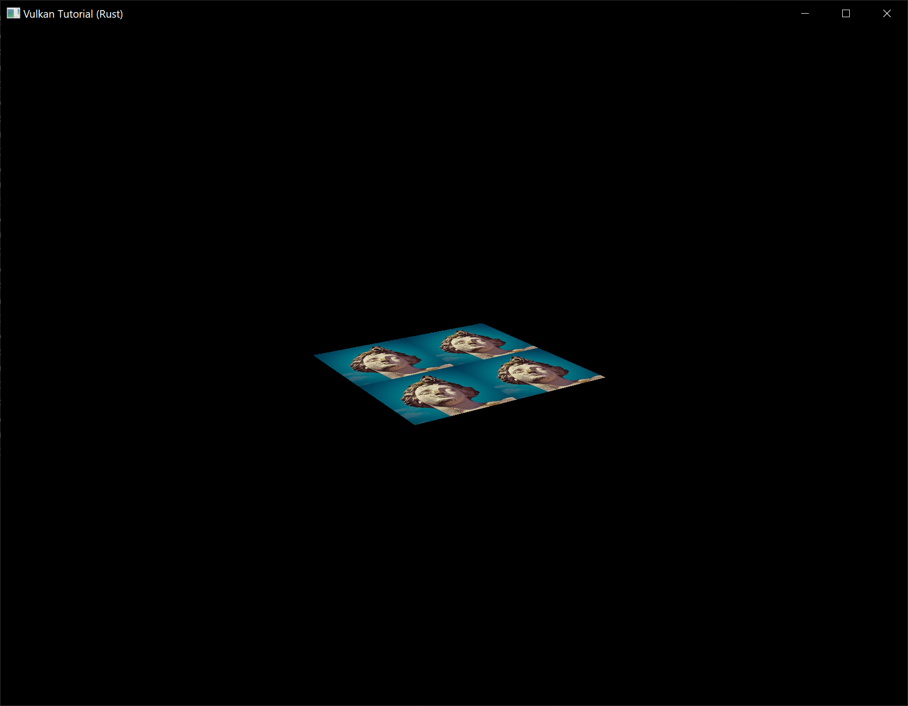
You can also manipulate the texture colors using the vertex colors:
void main() {
outColor = vec4(fragColor * texture(texSampler, fragTexCoord).rgb, 1.0);
}
I've separated the RGB and alpha channels here to not scale the alpha channel.
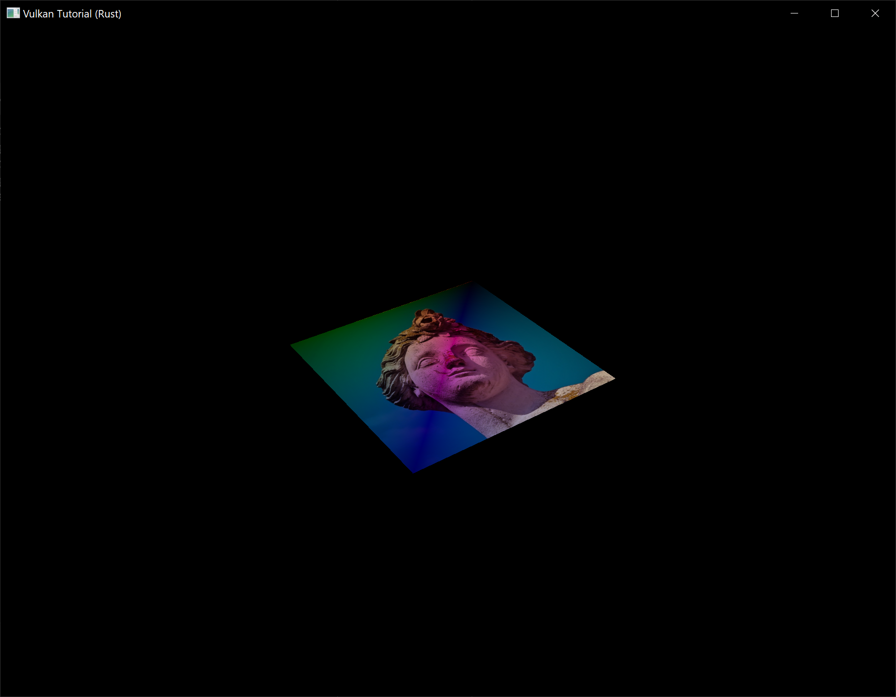
You now know how to access images in shaders! This is a very powerful technique when combined with images that are also written to in framebuffers. You can use these images as inputs to implement cool effects like post-processing and camera displays within the 3D world.
Depth buffering
Code: main.rs | shader.vert | shader.frag
The geometry we've worked with so far is projected into 3D, but it's still completely flat. In this chapter we're going to add a Z coordinate to the position to prepare for 3D meshes. We'll use this third coordinate to place a square over the current square to see a problem that arises when geometry is not sorted by depth.
3D geometry
Change the Vertex struct to use a 3D vector for the position, and update the format in the corresponding vk::VertexInputAttributeDescription and update the offsets in the others:
#[repr(C)]
#[derive(Copy, Clone, Debug)]
struct Vertex {
pos: Vec3,
color: Vec3,
tex_coord: Vec2,
}
impl Vertex {
const fn new(pos: Vec3, color: Vec3, tex_coord: Vec2) -> Self {
Self { pos, color, tex_coord }
}
fn binding_description() -> vk::VertexInputBindingDescription {
vk::VertexInputBindingDescription::builder()
.binding(0)
.stride(size_of::<Vertex>() as u32)
.input_rate(vk::VertexInputRate::VERTEX)
.build()
}
fn attribute_descriptions() -> [vk::VertexInputAttributeDescription; 3] {
let pos = vk::VertexInputAttributeDescription::builder()
.binding(0)
.location(0)
.format(vk::Format::R32G32B32_SFLOAT)
.offset(0)
.build();
let color = vk::VertexInputAttributeDescription::builder()
.binding(0)
.location(1)
.format(vk::Format::R32G32B32_SFLOAT)
.offset(size_of::<Vec3>() as u32)
.build();
let tex_coord = vk::VertexInputAttributeDescription::builder()
.binding(0)
.location(2)
.format(vk::Format::R32G32_SFLOAT)
.offset((size_of::<Vec3>() + size_of::<Vec3>()) as u32)
.build();
[pos, color, tex_coord]
}
}
Next, update the vertex shader to accept and transform 3D coordinates as input. Don't forget to recompile it afterwards!
layout(location = 0) in vec3 inPosition;
// ...
void main() {
gl_Position = ubo.proj * ubo.view * ubo.model * vec4(inPosition, 1.0);
fragColor = inColor;
fragTexCoord = inTexCoord;
}
Lastly, update the vertices container to include Z coordinates:
static VERTICES: [Vertex; 4] = [
Vertex::new(vec3(-0.5, -0.5, 0.0), vec3(1.0, 0.0, 0.0), vec2(1.0, 0.0)),
Vertex::new(vec3(0.5, -0.5, 0.0), vec3(0.0, 1.0, 0.0), vec2(0.0, 0.0)),
Vertex::new(vec3(0.5, 0.5, 0.0), vec3(0.0, 0.0, 1.0), vec2(0.0, 1.0)),
Vertex::new(vec3(-0.5, 0.5, 0.0), vec3(1.0, 1.0, 1.0), vec2(1.0, 1.0)),
];
If you run your application now, then you should see exactly the same result as before. It's time to add some extra geometry to make the scene more interesting, and to demonstrate the problem that we're going to tackle in this chapter. Duplicate the vertices to define positions for a square right under the current one like this:

Use Z coordinates of -0.5 and add the appropriate indices for the extra square:
static VERTICES: [Vertex; 8] = [
Vertex::new(vec3(-0.5, -0.5, 0.0), vec3(1.0, 0.0, 0.0), vec2(1.0, 0.0)),
Vertex::new(vec3(0.5, -0.5, 0.0), vec3(0.0, 1.0, 0.0), vec2(0.0, 0.0)),
Vertex::new(vec3(0.5, 0.5, 0.0), vec3(0.0, 0.0, 1.0), vec2(0.0, 1.0)),
Vertex::new(vec3(-0.5, 0.5, 0.0), vec3(1.0, 1.0, 1.0), vec2(1.0, 1.0)),
Vertex::new(vec3(-0.5, -0.5, -0.5), vec3(1.0, 0.0, 0.0), vec2(1.0, 0.0)),
Vertex::new(vec3(0.5, -0.5, -0.5), vec3(0.0, 1.0, 0.0), vec2(0.0, 0.0)),
Vertex::new(vec3(0.5, 0.5, -0.5), vec3(0.0, 0.0, 1.0), vec2(0.0, 1.0)),
Vertex::new(vec3(-0.5, 0.5, -0.5), vec3(1.0, 1.0, 1.0), vec2(1.0, 1.0)),
];
const INDICES: &[u16] = &[
0, 1, 2, 2, 3, 0,
4, 5, 6, 6, 7, 4,
];
Run your program now and you'll see something resembling an Escher illustration:

The problem is that the fragments of the lower square are drawn over the fragments of the upper square, simply because it comes later in the index array. There are two ways to solve this:
- Sort all of the draw calls by depth from back to front
- Use depth testing with a depth buffer
The first approach is commonly used for drawing transparent objects, because order-independent transparency is a difficult challenge to solve. However, the problem of ordering fragments by depth is much more commonly solved using a depth buffer. A depth buffer is an additional attachment that stores the depth for every position, just like the color attachment stores the color of every position. Every time the rasterizer produces a fragment, the depth test will check if the new fragment is closer than the previous one. If it isn't, then the new fragment is discarded. A fragment that passes the depth test writes its own depth to the depth buffer. It is possible to manipulate this value from the fragment shader, just like you can manipulate the color output.
Before we continue, there is one issue we need to fix. The perspective projection matrix generated by cgmath::perspective in App::update_uniform_buffer uses the OpenGL depth range of -1.0 to 1.0. We want to use the Vulkan range of 0.0 to 1.0 instead so we'll pre-multiply the generated perspective matrix with a correction matrix that maps the OpenGL range to the Vulkan range:
let correction = Mat4::new(
1.0, 0.0, 0.0, 0.0,
// We're also flipping the Y-axis with this line's `-1.0`.
0.0, -1.0, 0.0, 0.0,
0.0, 0.0, 1.0 / 2.0, 0.0,
0.0, 0.0, 1.0 / 2.0, 1.0,
);
let proj = correction
* cgmath::perspective(
Deg(45.0),
self.data.swapchain_extent.width as f32 / self.data.swapchain_extent.height as f32,
0.1,
10.0,
);
// This line should be deleted because we're now accomplishing the Y-axis flip
// using the new correction matrix.
// proj[1][1] *= -1.0;
Note that cgmath::Matrix4::new constructs a matrix in column-major order, so the parameters we passed to it seem to be transposed. So the actual matrix would look like this in row-major order:
1 0 0 0
0 -1 0 0
0 0 ½ ½
0 0 0 1
Depth image and view
A depth attachment is based on an image, just like the color attachment. The difference is that the swapchain will not automatically create depth images for us. We only need a single depth image, because only one draw operation is running at once. The depth image will again require the trifecta of resources: image, memory and image view.
struct AppData {
// ...
depth_image: vk::Image,
depth_image_memory: vk::DeviceMemory,
depth_image_view: vk::ImageView,
}
Create a new function create_depth_objects to set up these resources:
impl App {
unsafe fn create(window: &Window) -> Result<Self> {
// ...
create_command_pool(&instance, &device, &mut data)?;
create_depth_objects(&instance, &device, &mut data)?;
// ...
}
}
unsafe fn create_depth_objects(
instance: &Instance,
device: &Device,
data: &mut AppData,
) -> Result<()> {
Ok(())
}
Creating a depth image is fairly straightforward. It should have the same resolution as the color attachment, defined by the swapchain extent, an image usage appropriate for a depth attachment, optimal tiling and device local memory. The only question is: what is the right format for a depth image? The format must contain a depth component, indicated by D??_ in the vk::Format variant.
Unlike the texture image, we don't necessarily need a specific format, because we won't be directly accessing the texels from the program. It just needs to have a reasonable accuracy, at least 24 bits is common in real-world applications. There are several formats that fit this requirement:
vk::Format::D32_SFLOAT– 32-bit float for depthvk::Format::D32_SFLOAT_S8_UINT– 32-bit signed float for depth and 8 bit stencil componentvk::Format::D24_UNORM_S8_UINT– 24-bit float for depth and 8 bit stencil component
The stencil component is used for stencil tests, which is an additional test that can be combined with depth testing. We'll look at this in a future chapter.
We could simply go for the vk::Format::D32_SFLOAT format, because support for it is extremely common (see the hardware database), but it's nice to add some extra flexibility to our application where possible. We're going to write a get_supported_format function that takes a list of candidate formats in order from most desirable to least desirable and returns the first that satisfies our requirements:
unsafe fn get_supported_format(
instance: &Instance,
data: &AppData,
candidates: &[vk::Format],
tiling: vk::ImageTiling,
features: vk::FormatFeatureFlags,
) -> Result<vk::Format> {
candidates
.iter()
.cloned()
.find(|f| {
})
.ok_or_else(|| anyhow!("Failed to find supported format!"))
}
The support of a format depends on the tiling mode and usage, so we must also include these as parameters. The support of a format can be queried using the get_physical_device_format_properties function:
let properties = instance.get_physical_device_format_properties(
data.physical_device,
*f,
);
The vk::FormatProperties struct contains three fields:
linear_tiling_features– Use cases that are supported with linear tilingoptimal_tiling_features– Use cases that are supported with optimal tilingbuffer_features– Use cases that are supported for buffers
Only the first two are relevant here, and the one we check depends on the value provided for the tiling parameter of the function:
match tiling {
vk::ImageTiling::LINEAR => properties.linear_tiling_features.contains(features),
vk::ImageTiling::OPTIMAL => properties.optimal_tiling_features.contains(features),
_ => false,
}
We'll use this function now to create a get_depth_format helper function to select a format with a depth component that supports usage as depth attachment:
unsafe fn get_depth_format(instance: &Instance, data: &AppData) -> Result<vk::Format> {
let candidates = &[
vk::Format::D32_SFLOAT,
vk::Format::D32_SFLOAT_S8_UINT,
vk::Format::D24_UNORM_S8_UINT,
];
get_supported_format(
instance,
data,
candidates,
vk::ImageTiling::OPTIMAL,
vk::FormatFeatureFlags::DEPTH_STENCIL_ATTACHMENT,
)
}
Call the function to find a depth format from create_depth_objects:
let format = get_depth_format(instance, data)?;
We now have all the required information to invoke our create_image and create_image_view helper functions:
let (depth_image, depth_image_memory) = create_image(
instance,
device,
data,
data.swapchain_extent.width,
data.swapchain_extent.height,
format,
vk::ImageTiling::OPTIMAL,
vk::ImageUsageFlags::DEPTH_STENCIL_ATTACHMENT,
vk::MemoryPropertyFlags::DEVICE_LOCAL,
)?;
data.depth_image = depth_image;
data.depth_image_memory = depth_image_memory;
// Image View
data.depth_image_view = create_image_view(device, data.depth_image, format)?;
However, the create_image_view function currently assumes that the subresource always uses vk::ImageAspectFlags::COLOR, so we will need to turn that field into a parameter:
unsafe fn create_image_view(
device: &Device,
image: vk::Image,
format: vk::Format,
aspects: vk::ImageAspectFlags,
) -> Result<vk::ImageView> {
let subresource_range = vk::ImageSubresourceRange::builder()
.aspect_mask(aspects)
.base_mip_level(0)
.level_count(1)
.base_array_layer(0)
.layer_count(1);
// ...
}
Update all calls to this function to use the right aspect:
create_image_view(device, *i, data.swapchain_format, vk::ImageAspectFlags::COLOR)
// ...
data.depth_image_view = create_image_view(
device,
data.depth_image,
format,
vk::ImageAspectFlags::DEPTH,
)?;
// ...
data.texture_image_view = create_image_view(
device,
data.texture_image,
vk::Format::R8G8B8A8_SRGB,
vk::ImageAspectFlags::COLOR,
)?;
That's it for creating the depth image. We don't need to map it or copy another image to it, because we're going to clear it at the start of the render pass like the color attachment.
Explicitly transitioning the depth image
We don't need to explicitly transition the layout of the image to a depth attachment because we'll take care of this in the render pass. However, for completeness I'll still describe the process in this section. You may skip it if you like.
Make a call to transition_image_layout at the end of the create_depth_objects function like so:
transition_image_layout(
device,
data,
data.depth_image,
format,
vk::ImageLayout::UNDEFINED,
vk::ImageLayout::DEPTH_STENCIL_ATTACHMENT_OPTIMAL,
)?;
The undefined layout can be used as initial layout, because there are no existing depth image contents that matter. We need to update some of the logic in transition_image_layout to use the right subresource aspect:
Note: The first usage of the
|operator below describes a pattern that matches either of the specifiedvk::Formats in thematcharm. Meanwhile, the second usage of the|operator is the bitwise OR operator which combines the bits of thevk::ImageAspectFlagswe want to enable in this code path.
let aspect_mask = if new_layout == vk::ImageLayout::DEPTH_STENCIL_ATTACHMENT_OPTIMAL {
match format {
vk::Format::D32_SFLOAT_S8_UINT | vk::Format::D24_UNORM_S8_UINT =>
vk::ImageAspectFlags::DEPTH | vk::ImageAspectFlags::STENCIL,
_ => vk::ImageAspectFlags::DEPTH
}
} else {
vk::ImageAspectFlags::COLOR
};
let subresource = vk::ImageSubresourceRange::builder()
.aspect_mask(aspect_mask)
.base_mip_level(0)
.level_count(1)
.base_array_layer(0)
.layer_count(1);
Although we're not using the stencil component, we do need to include it in the layout transitions of the depth image.
Finally, add the correct access masks and pipeline stages:
let (
src_access_mask,
dst_access_mask,
src_stage_mask,
dst_stage_mask,
) = match (old_layout, new_layout) {
(vk::ImageLayout::UNDEFINED, vk::ImageLayout::DEPTH_STENCIL_ATTACHMENT_OPTIMAL) => (
vk::AccessFlags::empty(),
vk::AccessFlags::DEPTH_STENCIL_ATTACHMENT_READ | vk::AccessFlags::DEPTH_STENCIL_ATTACHMENT_WRITE,
vk::PipelineStageFlags::TOP_OF_PIPE,
vk::PipelineStageFlags::EARLY_FRAGMENT_TESTS,
),
// ...
};
The depth buffer will be read from to perform depth tests to see if a fragment is visible, and will be written to when a new fragment is drawn. The reading happens in the vk::PipelineStageFlags::EARLY_FRAGMENT_TESTS stage and the writing in the vk::PipelineStageFlags::LATE_FRAGMENT_TESTS. You should pick the earliest pipeline stage that matches the specified operations, so that it is ready for usage as depth attachment when it needs to be.
Render pass
We're now going to modify create_render_pass to include a depth attachment. First specify the vk::AttachmentDescription:
let depth_stencil_attachment = vk::AttachmentDescription::builder()
.format(get_depth_format(instance, data)?)
.samples(vk::SampleCountFlags::_1)
.load_op(vk::AttachmentLoadOp::CLEAR)
.store_op(vk::AttachmentStoreOp::DONT_CARE)
.stencil_load_op(vk::AttachmentLoadOp::DONT_CARE)
.stencil_store_op(vk::AttachmentStoreOp::DONT_CARE)
.initial_layout(vk::ImageLayout::UNDEFINED)
.final_layout(vk::ImageLayout::DEPTH_STENCIL_ATTACHMENT_OPTIMAL);
The format should be the same as the depth image itself. This time we don't care about storing the depth data (store_op), because it will not be used after drawing has finished. This may allow the hardware to perform additional optimizations. Just like the color buffer, we don't care about the previous depth contents, so we can use vk::ImageLayout::UNDEFINED as initial_layout.
let depth_stencil_attachment_ref = vk::AttachmentReference::builder()
.attachment(1)
.layout(vk::ImageLayout::DEPTH_STENCIL_ATTACHMENT_OPTIMAL);
Add a reference to the attachment for the first (and only) subpass:
let subpass = vk::SubpassDescription::builder()
.pipeline_bind_point(vk::PipelineBindPoint::GRAPHICS)
.color_attachments(color_attachments)
.depth_stencil_attachment(&depth_stencil_attachment_ref);
Unlike color attachments, a subpass can only use a single depth (+stencil) attachment. It wouldn't really make any sense to do depth tests on multiple buffers.
let attachments = &[color_attachment, depth_stencil_attachment];
let subpasses = &[subpass];
let dependencies = &[dependency];
let info = vk::RenderPassCreateInfo::builder()
.attachments(attachments)
.subpasses(subpasses)
.dependencies(dependencies);
Next, update the vk::RenderPassCreateInfo struct to refer to both attachments.
let dependency = vk::SubpassDependency::builder()
.src_subpass(vk::SUBPASS_EXTERNAL)
.dst_subpass(0)
.src_stage_mask(vk::PipelineStageFlags::COLOR_ATTACHMENT_OUTPUT
| vk::PipelineStageFlags::EARLY_FRAGMENT_TESTS)
.src_access_mask(vk::AccessFlags::empty())
.dst_stage_mask(vk::PipelineStageFlags::COLOR_ATTACHMENT_OUTPUT
| vk::PipelineStageFlags::EARLY_FRAGMENT_TESTS)
.dst_access_mask(vk::AccessFlags::COLOR_ATTACHMENT_WRITE
| vk::AccessFlags::DEPTH_STENCIL_ATTACHMENT_WRITE);
Finally, we need to extend our subpass dependencies to make sure that there is no conflict between the transitioning of the depth image and it being cleared as part of its load operation. The depth image is first accessed in the early fragment test pipeline stage and because we have a load operation that clears, we should specify the access mask for writes.
Framebuffer
The next step is to modify the framebuffer creation to bind the depth image to the depth attachment. Go to create_framebuffers and specify the depth image view as second attachment:
let attachments = &[*i, data.depth_image_view];
let create_info = vk::FramebufferCreateInfo::builder()
.render_pass(data.render_pass)
.attachments(attachments)
.width(data.swapchain_extent.width)
.height(data.swapchain_extent.height)
.layers(1);
The color attachment differs for every swapchain image, but the same depth image can be used by all of them because only a single subpass is running at the same time due to our semaphores.
You'll also need to move the call to create_framebuffers to make sure that it is called after the depth image view has actually been created:
unsafe fn create(window: &Window) -> Result<Self> {
// ...
create_depth_objects(&instance, &device, &mut data)?;
create_framebuffers(&device, &mut data)?;
// ...
}
Clear values
Because we now have multiple attachments with vk::AttachmentLoadOp::CLEAR, we also need to specify multiple clear values. Go to create_command_buffers and add an instance of vk::ClearValue to the clear_values array:
let color_clear_value = vk::ClearValue {
color: vk::ClearColorValue {
float32: [0.0, 0.0, 0.0, 1.0],
},
};
let depth_clear_value = vk::ClearValue {
depth_stencil: vk::ClearDepthStencilValue {
depth: 1.0,
stencil: 0,
},
};
let clear_values = &[color_clear_value, depth_clear_value];
The range of depths in the depth buffer is 0.0 to 1.0 in Vulkan, where 1.0 lies at the far view plane and 0.0 at the near view plane. The initial value at each point in the depth buffer should be the furthest possible depth, which is 1.0.
Note that the order of clear_values should be identical to the order of your attachments.
Depth and stencil state
The depth attachment is ready to be used now, but depth testing still needs to be enabled in the graphics pipeline. It is configured through the vk::PipelineDepthStencilStateCreateInfo struct:
let depth_stencil_state = vk::PipelineDepthStencilStateCreateInfo::builder()
.depth_test_enable(true)
.depth_write_enable(true)
// continued ...
The depth_test_enable field specifies if the depth of new fragments should be compared to the depth buffer to see if they should be discarded. The depth_write_enable field specifies if the new depth of fragments that pass the depth test should actually be written to the depth buffer.
.depth_compare_op(vk::CompareOp::LESS)
The depth_compare_op field specifies the comparison that is performed to keep or discard fragments. We're sticking to the convention of lower depth = closer, so the depth of new fragments should be less.
.depth_bounds_test_enable(false)
.min_depth_bounds(0.0) // Optional.
.max_depth_bounds(1.0) // Optional.
The depth_bounds_test_enable, min_depth_bounds and max_depth_bounds fields are used for the optional depth bound test. Basically, this allows you to only keep fragments that fall within the specified depth range. We won't be using this functionality.
.stencil_test_enable(false)
.front(/* vk::StencilOpState */) // Optional.
.back(/* vk::StencilOpState */); // Optional.
The last three fields configure stencil buffer operations, which we also won't be using in this tutorial. If you want to use these operations, then you will have to make sure that the format of the depth/stencil image contains a stencil component.
let info = vk::GraphicsPipelineCreateInfo::builder()
.stages(stages)
.vertex_input_state(&vertex_input_state)
.input_assembly_state(&input_assembly_state)
.viewport_state(&viewport_state)
.rasterization_state(&rasterization_state)
.multisample_state(&multisample_state)
.depth_stencil_state(&depth_stencil_state)
.color_blend_state(&color_blend_state)
.layout(data.pipeline_layout)
.render_pass(data.render_pass)
.subpass(0);
Update the vk::GraphicsPipelineCreateInfo struct to reference the depth stencil state we just filled in. A depth stencil state must always be specified if the render pass contains a depth stencil attachment.
If you run your program now, then you should see that the fragments of the geometry are now correctly ordered:

Handling window resize
The resolution of the depth buffer should change when the window is resized to match the new color attachment resolution. Extend the App::recreate_swapchain method to recreate the depth resources in that case:
unsafe fn recreate_swapchain(&mut self, window: &Window) -> Result<()> {
self.device.device_wait_idle()?;
self.destroy_swapchain();
create_swapchain(window, &self.instance, &self.device, &mut self.data)?;
create_swapchain_image_views(&self.device, &mut self.data)?;
create_render_pass(&self.instance, &self.device, &mut self.data)?;
create_pipeline(&self.device, &mut self.data)?;
create_depth_objects(&self.instance, &self.device, &mut self.data)?;
create_framebuffers(&self.device, &mut self.data)?;
create_uniform_buffers(&self.instance, &self.device, &mut self.data)?;
create_descriptor_pool(&self.device, &mut self.data)?;
create_descriptor_sets(&self.device, &mut self.data)?;
create_command_buffers(&self.device, &mut self.data)?;
Ok(())
}
The cleanup operations should happen in the swapchain cleanup function:
unsafe fn destroy_swapchain(&mut self) {
self.device.destroy_image_view(self.data.depth_image_view, None);
self.device.free_memory(self.data.depth_image_memory, None);
self.device.destroy_image(self.data.depth_image, None);
// ...
}
Congratulations, your application is now finally ready to render arbitrary 3D geometry and have it look right. We're going to try this out in the next chapter by drawing a textured model!
Loading models
Code: main.rs
Your program is now ready to render textured 3D meshes, but the current geometry in the vertices and indices arrays is not very interesting yet. In this chapter we're going to extend the program to load the vertices and indices from an actual model file to make the graphics card actually do some work.
Many graphics API tutorials have the reader write their own OBJ loader in a chapter like this. The problem with this is that any remotely interesting 3D application will soon require features that are not supported by this file format, like skeletal animation. We will load mesh data from an OBJ model in this chapter, but we'll focus more on integrating the mesh data with the program itself rather than the details of loading it from a file.
Library
We will use the tobj crate to load vertices and faces from an OBJ file. If you followed the instructions in the Development environment chapter you already have this dependency installed and ready to go.
Sample mesh
In this chapter we won't be enabling lighting yet, so it helps to use a sample model that has lighting baked into the texture. An easy way to find such models is to look for 3D scans on Sketchfab. Many of the models on that site are available in OBJ format with a permissive license.
For this tutorial I've decided to go with the Viking room model by nigelgoh (CC BY 4.0). I tweaked the size and orientation of the model to use it as a drop in replacement for the current geometry:
{kind=link}
Note: The
.objand.pngfiles that are included in this tutorial may not be identical to the original files. Make sure you use the files from this tutorial (and beyond that, the.objand.pngfiles may also differ from the files used in the original C++ tutorial).
Feel free to use your own model, but make sure that it only consists of one material and that is has dimensions of about 1.5 x 1.5 x 1.5 units. If it is larger than that, then you'll have to change the view matrix. Put the model file and texture image in the resources directory.
Update create_texture_image to use this path variable:
let image = File::open("resources/viking_room.png")?;
To double-check your image file is correct, you can also add this code in create_texture_image right after decoding the file as a PNG image:
if width != 1024 || height != 1024 || reader.info().color_type != png::ColorType::Rgba {
panic!("Invalid texture image.");
}
Loading vertices and indices
We're going to load the vertices and indices from the model file now, so you should remove the global VERTICES and INDICES arrays now. Replace them with AppData fields:
struct AppData {
// ...
vertices: Vec<Vertex>,
indices: Vec<u32>,
vertex_buffer: vk::Buffer,
vertex_buffer_memory: vk::DeviceMemory,
// ...
}
You'll also need to replace all the references to the global arrays with the new AppData fields.
You should change the type of the indices from u16 to u32, because there are going to be a lot more vertices than 65,536. Remember to also change the cmd_bind_index_buffer parameter:
device.cmd_bind_index_buffer(
*command_buffer,
data.index_buffer,
0,
vk::IndexType::UINT32,
);
You'll also need to update the size of the index buffer in create_index_buffer:
let size = (size_of::<u32>() * data.indices.len()) as u64;
Next we are going to need some more imports:
use std::collections::HashMap;
use std::hash::{Hash, Hasher};
use std::io::BufReader;
We're now going to write a load_models function that uses this library to populate the vertices and indices fields with the vertex data from the mesh. It should be called somewhere before the vertex and index buffers are created:
impl App {
unsafe fn create(window: &Window) -> Result<Self> {
// ...
load_model(&mut data)?;
create_vertex_buffer(&instance, &device, &mut data)?;
create_index_buffer(&instance, &device, &mut data)?;
// ...
}
}
fn load_model(data: &mut AppData) -> Result<()> {
Ok(())
}
A model is loaded into the crate's data structures by calling the tobj::load_obj_buf function:
let mut reader = BufReader::new(File::open("resources/viking_room.obj")?);
let (models, _) = tobj::load_obj_buf(
&mut reader,
&tobj::LoadOptions { triangulate: true, ..Default::default() },
|_| Ok(Default::default()),
)?;
An OBJ file consists of positions, normals, texture coordinates and faces. Faces consist of an arbitrary amount of vertices, where each vertex refers to a position, normal and/or texture coordinate by index. This makes it possible to not just reuse entire vertices, but also individual attributes.
tobj::load_obj_buf returns a Vec of models and a Vec of materials. We are not interested in the materials, only the models, so the returned materials are ignored with _.
The second tobj::load_obj_buf parameter specifies options for processing the loaded models. The triangulate field we are setting to true ensures that the components of the loaded models are converted to triangles. This is important because our rendering code can only handle triangles. We don't need this for our Viking room model since its faces are already triangles but it might be necessary if you try using a different OBJ file.
The third tobj::load_obj_buf parameter is a callback used to load any materials referenced in the OBJ file. As we are not interested in the materials, we just return an empty material.
We're going to combine all of the faces in the file into a single model, so just iterate over all of the shapes:
for model in &models {
}
The triangulation feature has already made sure that there are three vertices per face, so we can now directly iterate over the vertices and dump them straight into our vertices vector:
for model in &models {
for index in &model.mesh.indices {
let vertex = Vertex {
pos: vec3(0.0, 0.0, 0.0),
color: vec3(1.0, 1.0, 1.0),
tex_coord: vec2(0.0, 0.0),
};
data.vertices.push(vertex);
data.indices.push(data.indices.len() as u32);
}
}
For simplicity, we will assume that every vertex is unique for now, hence the simple auto-increment indices. The index variable is used to look up the actual vertex attributes in the positions and texcoords arrays:
let pos_offset = (3 * index) as usize;
let tex_coord_offset = (2 * index) as usize;
let vertex = Vertex {
pos: vec3(
model.mesh.positions[pos_offset],
model.mesh.positions[pos_offset + 1],
model.mesh.positions[pos_offset + 2],
),
color: vec3(1.0, 1.0, 1.0),
tex_coord: vec2(
model.mesh.texcoords[tex_coord_offset],
model.mesh.texcoords[tex_coord_offset + 1],
),
};
Unfortunately, the positions returned from tobj::load_obj_buf are a flat array of f32 values instead of something like cgmath::Vector3<f32>, so you need to multiply the index by 3 to account for each position having three components. Similarly, there are two texture coordinate components per entry. The offsets of 0, 1 and 2 are used to access the X, Y and Z components, or the U and V components in the case of texture coordinates.
You may want to start compiling your program in release mode from now on because loading the texture and model can be quite slow without optimizations. If you run your program now you should see something like the following:

Great, the geometry looks correct, but what's going on with the texture? The OBJ format assumes a coordinate system where a vertical coordinate of 0 means the bottom of the image, however we've uploaded our image into Vulkan in a top to bottom orientation where 0 means the top of the image. Solve this by flipping the vertical component of the texture coordinates:
tex_coord: vec2(
model.mesh.texcoords[tex_coord_offset],
1.0 - model.mesh.texcoords[tex_coord_offset + 1],
),
When you run your program again, you should now see the correct result:

All that hard work is finally beginning to pay off with a demo like this!
Vertex deduplication
Unfortunately we're not really taking advantage of the index buffer yet. The vertices vector contains a lot of duplicated vertex data, because many vertices are included in multiple triangles. We should keep only the unique vertices and use the index buffer to reuse them whenever they come up. A straightforward way to implement this is to use a HashMap to keep track of the unique vertices and respective indices:
let mut unique_vertices = HashMap::new();
for model in &models {
for index in &model.mesh.indices {
// ...
if let Some(index) = unique_vertices.get(&vertex) {
data.indices.push(*index as u32);
} else {
let index = data.vertices.len();
unique_vertices.insert(vertex, index);
data.vertices.push(vertex);
data.indices.push(index as u32);
}
}
Every time we read a vertex from the OBJ file, we check if we've already seen a vertex with the exact same position and texture coordinates before. If not, we add it to vertices and store its index in the unique_vertices container. After that we add the index of the new vertex to indices. If we've seen the exact same vertex before, then we look up its index in unique_vertices and store that index in indices.
The program will fail to compile right now because we need to implement the Hash trait for our Vertex struct to be able to use it as the key of a HashMap. Unfortunately since Vertex contains f32s we will need to implement Hash and the required traits (PartialEq and Eq) by hand (note that our Eq implementation is valid only as long as there aren't any NaNs in our vertex data which for now is a safe assumption).
impl PartialEq for Vertex {
fn eq(&self, other: &Self) -> bool {
self.pos == other.pos
&& self.color == other.color
&& self.tex_coord == other.tex_coord
}
}
impl Eq for Vertex {}
impl Hash for Vertex {
fn hash<H: Hasher>(&self, state: &mut H) {
self.pos[0].to_bits().hash(state);
self.pos[1].to_bits().hash(state);
self.pos[2].to_bits().hash(state);
self.color[0].to_bits().hash(state);
self.color[1].to_bits().hash(state);
self.color[2].to_bits().hash(state);
self.tex_coord[0].to_bits().hash(state);
self.tex_coord[1].to_bits().hash(state);
}
}
You should now be able to successfully compile and run your program. If you check the size of vertices, then you'll see that it has shrunk down from 1,500,000 to 265,645! That means that each vertex is reused in an average number of ~6 triangles. This definitely saves us a lot of GPU memory.
Generating mipmaps
Code: main.rs
Our program can now load and render 3D models. In this chapter, we will add one more feature, mipmap generation. Mipmaps are widely used in games and rendering software, and Vulkan gives us complete control over how they are created.
Mipmaps are precalculated, downscaled versions of an image. Each new image is half the width and height of the previous one. Mipmaps are used as a form of Level of Detail or LOD. Objects that are far away from the camera will sample their textures from the smaller mip images. Using smaller images increases the rendering speed and avoids artifacts such as Moiré patterns. An example of what mipmaps look like:

Image creation
In Vulkan, each of the mip images is stored in different mip levels of a vk::Image. Mip level 0 is the original image, and the mip levels after level 0 are commonly referred to as the mip chain.
The number of mip levels is specified when the vk::Image is created. Up until now, we have always set this value to one. We need to calculate the number of mip levels from the dimensions of the image. First, add an AppData field to store this number:
struct AppData {
// ...
mip_levels: u32,
texture_image: vk::Image,
// ...
}
The value for mip_levels can be found once we've loaded the texture in create_texture_image:
let image = File::open("resources/viking_room.png")?;
let decoder = png::Decoder::new(image);
let mut reader = decoder.read_info()?;
// ...
data.mip_levels = (width.max(height) as f32).log2().floor() as u32 + 1;
This calculates the number of levels in the mip chain. The max method selects the largest dimension. The log2 method calculates how many times that dimension can be divided by 2. The floor method handles cases where the largest dimension is not a power of 2. 1 is added so that the original image has a mip level.
To use this value, we need to change the create_image, create_image_view, and transition_image_layout functions to allow us to specify the number of mip levels. Add a mip_levels parameter to the functions:
unsafe fn create_image(
instance: &Instance,
device: &Device,
data: &AppData,
width: u32,
height: u32,
mip_levels: u32,
format: vk::Format,
tiling: vk::ImageTiling,
usage: vk::ImageUsageFlags,
properties: vk::MemoryPropertyFlags,
) -> Result<(vk::Image, vk::DeviceMemory)> {
let info = vk::ImageCreateInfo::builder()
// ...
.mip_levels(mip_levels)
// ...
// ...
}
unsafe fn create_image_view(
device: &Device,
image: vk::Image,
format: vk::Format,
aspects: vk::ImageAspectFlags,
mip_levels: u32,
) -> Result<vk::ImageView> {
let subresource_range = vk::ImageSubresourceRange::builder()
// ...
.level_count(mip_levels)
// ...
// ...
}
unsafe fn transition_image_layout(
device: &Device,
data: &AppData,
image: vk::Image,
format: vk::Format,
old_layout: vk::ImageLayout,
new_layout: vk::ImageLayout,
mip_levels: u32,
) -> Result<()> {
// ...
let subresource = vk::ImageSubresourceRange::builder()
// ...
.level_count(mip_levels)
// ...
// ...
}
Update all calls to these functions to use the right values:
Note: Be sure to use a value of
1for all of the images and image views except the image and image view that is for the texture.
let (depth_image, depth_image_memory) = create_image(
instance,
device,
data,
data.swapchain_extent.width,
data.swapchain_extent.height,
1,
format,
vk::ImageTiling::OPTIMAL,
vk::ImageUsageFlags::DEPTH_STENCIL_ATTACHMENT,
vk::MemoryPropertyFlags::DEVICE_LOCAL,
)?;
// ...
let (texture_image, texture_image_memory) = create_image(
instance,
device,
data,
width,
height,
data.mip_levels,
vk::Format::R8G8B8A8_SRGB,
vk::ImageTiling::OPTIMAL,
vk::ImageUsageFlags::SAMPLED | vk::ImageUsageFlags::TRANSFER_DST,
vk::MemoryPropertyFlags::DEVICE_LOCAL,
)?;
create_image_view(
device,
*i,
data.swapchain_format,
vk::ImageAspectFlags::COLOR,
1,
)
// ...
data.depth_image_view = create_image_view(
device,
data.depth_image,
format,
vk::ImageAspectFlags::DEPTH,
1,
)?;
// ...
data.texture_image_view = create_image_view(
device,
data.texture_image,
vk::Format::R8G8B8A8_SRGB,
vk::ImageAspectFlags::COLOR,
data.mip_levels,
)?;
transition_image_layout(
device,
data,
data.texture_image,
vk::Format::R8G8B8A8_SRGB,
vk::ImageLayout::UNDEFINED,
vk::ImageLayout::TRANSFER_DST_OPTIMAL,
data.mip_levels,
)?;
// ...
transition_image_layout(
device,
data,
data.texture_image,
vk::Format::R8G8B8A8_SRGB,
vk::ImageLayout::TRANSFER_DST_OPTIMAL,
vk::ImageLayout::SHADER_READ_ONLY_OPTIMAL,
data.mip_levels,
)?;
Generating Mipmaps
Our texture image now has multiple mip levels, but the staging buffer can only be used to fill mip level 0. The other levels are still undefined. To fill these levels we need to generate the data from the single level that we have. We will use the cmd_blit_image command. This command performs copying, scaling, and filtering operations. We will call this multiple times to blit data to each level of our texture image.
cmd_blit_image is considered a transfer operation, so we must inform Vulkan that we intend to use the texture image as both the source and destination of a transfer. Add vk::ImageUsageFlags::TRANSFER_SRC to the texture image's usage flags in create_texture_image:
let (texture_image, texture_image_memory) = create_image(
instance,
device,
data,
width,
height,
data.mip_levels,
vk::Format::R8G8B8A8_SRGB,
vk::ImageTiling::OPTIMAL,
vk::ImageUsageFlags::SAMPLED
| vk::ImageUsageFlags::TRANSFER_DST
| vk::ImageUsageFlags::TRANSFER_SRC,
vk::MemoryPropertyFlags::DEVICE_LOCAL,
)?;
Like other image operations, cmd_blit_image depends on the layout of the image it operates on. We could transition the entire image to vk::ImageLayout::GENERAL, but this will most likely be slow. For optimal performance, the source image should be in vk::ImageLayout::TRANSFER_SRC_OPTIMAL and the destination image should be in vk::ImageLayout::TRANSFER_DST_OPTIMAL. Vulkan allows us to transition each mip level of an image independently. Each blit will only deal with two mip levels at a time, so we can transition each level into the optimal layout between blits commands.
transition_image_layout only performs layout transitions on the entire image, so we'll need to write a few more pipeline barrier commands. Remove the existing transition to vk::ImageLayout::SHADER_READ_ONLY_OPTIMAL in create_texture_image.
This will leave each level of the texture image in vk::ImageLayout::TRANSFER_DST_OPTIMAL. Each level will be transitioned to vk::ImageLayout::SHADER_READ_ONLY_OPTIMAL after the blit command reading from it is finished.
We're now going to write the function that generates the mipmaps:
unsafe fn generate_mipmaps(
instance: &Instance,
device: &Device,
data: &AppData,
image: vk::Image,
width: u32,
height: u32,
mip_levels: u32,
) -> Result<()> {
let command_buffer = begin_single_time_commands(device, data)?;
let subresource = vk::ImageSubresourceRange::builder()
.aspect_mask(vk::ImageAspectFlags::COLOR)
.base_array_layer(0)
.layer_count(1)
.level_count(1);
let mut barrier = vk::ImageMemoryBarrier::builder()
.image(image)
.src_queue_family_index(vk::QUEUE_FAMILY_IGNORED)
.dst_queue_family_index(vk::QUEUE_FAMILY_IGNORED)
.subresource_range(subresource);
end_single_time_commands(device, data, command_buffer)?;
Ok(())
}
We're going to make several transitions, so we'll reuse this vk::ImageMemoryBarrier (which is why it is defined as mutable). The fields set above will remain the same for all barriers. subresource_range.mip_level, old_layout, new_layout, src_access_mask, and dst_access_mask will be changed for each transition.
let mut mip_width = width;
let mut mip_height = height;
for i in 1..mip_levels {
}
This loop will record each of the cmd_blit_image commands. Note that the range index starts at 1, not 0.
barrier.subresource_range.base_mip_level = i - 1;
barrier.old_layout = vk::ImageLayout::TRANSFER_DST_OPTIMAL;
barrier.new_layout = vk::ImageLayout::TRANSFER_SRC_OPTIMAL;
barrier.src_access_mask = vk::AccessFlags::TRANSFER_WRITE;
barrier.dst_access_mask = vk::AccessFlags::TRANSFER_READ;
device.cmd_pipeline_barrier(
command_buffer,
vk::PipelineStageFlags::TRANSFER,
vk::PipelineStageFlags::TRANSFER,
vk::DependencyFlags::empty(),
&[] as &[vk::MemoryBarrier],
&[] as &[vk::BufferMemoryBarrier],
&[barrier],
);
First, we transition level i - 1 to vk::ImageLayout::TRANSFER_SRC_OPTIMAL. This transition will wait for level i - 1 to be filled, either from the previous blit command, or from cmd_copy_buffer_to_image. The current blit command will wait on this transition.
let src_subresource = vk::ImageSubresourceLayers::builder()
.aspect_mask(vk::ImageAspectFlags::COLOR)
.mip_level(i - 1)
.base_array_layer(0)
.layer_count(1);
let dst_subresource = vk::ImageSubresourceLayers::builder()
.aspect_mask(vk::ImageAspectFlags::COLOR)
.mip_level(i)
.base_array_layer(0)
.layer_count(1);
let blit = vk::ImageBlit::builder()
.src_offsets([
vk::Offset3D { x: 0, y: 0, z: 0 },
vk::Offset3D {
x: mip_width as i32,
y: mip_height as i32,
z: 1,
},
])
.src_subresource(src_subresource)
.dst_offsets([
vk::Offset3D { x: 0, y: 0, z: 0 },
vk::Offset3D {
x: (if mip_width > 1 { mip_width / 2 } else { 1 }) as i32,
y: (if mip_height > 1 { mip_height / 2 } else { 1 }) as i32,
z: 1,
},
])
.dst_subresource(dst_subresource);
Next, we specify the regions that will be used in the blit operation. The source mip level is i - 1 and the destination mip level is i. The two elements of the src_offsets array determine the 3D region that data will be blitted from. dst_offsets determines the region that data will be blitted to. The X and Y dimensions of the dst_offsets[1] are divided by two since each mip level is half the size of the previous level. The Z dimension of src_offsets[1] and dst_offsets[1] must be 1, since a 2D image has a depth of 1.
device.cmd_blit_image(
command_buffer,
image,
vk::ImageLayout::TRANSFER_SRC_OPTIMAL,
image,
vk::ImageLayout::TRANSFER_DST_OPTIMAL,
&[blit],
vk::Filter::LINEAR,
);
Now, we record the blit command. Note that image is used for both the stc_image and dst_image parameters. This is because we're blitting between different levels of the same image. The source mip level was just transitioned to vk::ImageLayout::TRANSFER_SRC_OPTIMAL and the destination level is still in vk::ImageLayout::TRANSFER_DST_OPTIMAL from create_texture_image.
Beware if you are using a dedicated transfer queue (as suggested in the Vertex buffers chapter): cmd_blit_image must be submitted to a queue with graphics capability.
The last parameter allows us to specify a vk::Filter to use in the blit. We have the same filtering options here that we had when making the vk::Sampler. We use the vk::Filter::LINEAR to enable interpolation.
barrier.old_layout = vk::ImageLayout::TRANSFER_SRC_OPTIMAL;
barrier.new_layout = vk::ImageLayout::SHADER_READ_ONLY_OPTIMAL;
barrier.src_access_mask = vk::AccessFlags::TRANSFER_READ;
barrier.dst_access_mask = vk::AccessFlags::SHADER_READ;
device.cmd_pipeline_barrier(
command_buffer,
vk::PipelineStageFlags::TRANSFER,
vk::PipelineStageFlags::FRAGMENT_SHADER,
vk::DependencyFlags::empty(),
&[] as &[vk::MemoryBarrier],
&[] as &[vk::BufferMemoryBarrier],
&[barrier],
);
This barrier transitions mip level i - 1 to vk::ImageLayout::SHADER_READ_ONLY_OPTIMAL. This transition waits on the current blit command to finish. All sampling operations will wait on this transition to finish.
if mip_width > 1 {
mip_width /= 2;
}
if mip_height > 1 {
mip_height /= 2;
}
At the end of the loop, we divide the current mip dimensions by two. We check each dimension before the division to ensure that dimension never becomes 0. This handles cases where the image is not square, since one of the mip dimensions would reach 1 before the other dimension. When this happens, that dimension should remain 1 for all remaining levels.
barrier.subresource_range.base_mip_level = mip_levels - 1;
barrier.old_layout = vk::ImageLayout::TRANSFER_DST_OPTIMAL;
barrier.new_layout = vk::ImageLayout::SHADER_READ_ONLY_OPTIMAL;
barrier.src_access_mask = vk::AccessFlags::TRANSFER_WRITE;
barrier.dst_access_mask = vk::AccessFlags::SHADER_READ;
device.cmd_pipeline_barrier(
command_buffer,
vk::PipelineStageFlags::TRANSFER,
vk::PipelineStageFlags::FRAGMENT_SHADER,
vk::DependencyFlags::empty(),
&[] as &[vk::MemoryBarrier],
&[] as &[vk::BufferMemoryBarrier],
&[barrier],
);
end_single_time_commands(device, data, command_buffer)?;
Before we end the command buffer, we insert one more pipeline barrier. This barrier transitions the last mip level from vk::ImageLayout::TRANSFER_DST_OPTIMAL to vk::ImageLayout::SHADER_READ_ONLY_OPTIMAL. This wasn't handled by the loop, since the last mip level is never blitted from.
Finally, add the call to generate_mipmaps at the end of create_texture_image:
generate_mipmaps(
instance,
device,
data,
data.texture_image,
width,
height,
data.mip_levels,
)?;
Our texture image's mipmaps are now completely filled.
Linear filtering support
It is very convenient to use a built-in command like cmd_blit_image to generate all the mip levels, but unfortunately it is not guaranteed to be supported on all platforms. It requires the texture image format we use to support linear filtering, which can be checked with the get_physical_device_format_properties command. We will add a check to the generate_mipmaps function for this.
First add an additional parameter that specifies the image format:
generate_mipmaps(
instance,
device,
data,
data.texture_image,
vk::Format::R8G8B8A8_SRGB,
width,
height,
data.mip_levels,
)?;
// ...
unsafe fn generate_mipmaps(
instance: &Instance,
device: &Device,
data: &AppData,
image: vk::Image,
format: vk::Format,
width: u32,
height: u32,
mip_levels: u32,
) -> Result<()> {
// ...
}
In the generate_mipmaps function, use get_physical_device_format_properties to request the properties of the texture image format and check that linear filtering is supported:
if !instance
.get_physical_device_format_properties(data.physical_device, format)
.optimal_tiling_features
.contains(vk::FormatFeatureFlags::SAMPLED_IMAGE_FILTER_LINEAR)
{
return Err(anyhow!("Texture image format does not support linear blitting!"));
}
The vk::FormatProperties struct has three fields named linear_tiling_features, optimal_tiling_features, and buffer_features that each describe how the format can be used depending on the way it is used. We create a texture image with the optimal tiling format, so we need to check optimal_tiling_features. Support for the linear filtering feature can be checked with vk::FormatFeatureFlags::SAMPLED_IMAGE_FILTER_LINEAR.
There are two alternatives in the case where this is not supported. You could implement a function that searches common texture image formats for one that does support linear blitting, or you could implement the mipmap generation in your software. Each mip level can then be loaded into the image in the same way that you loaded the original image.
It should be noted that it is uncommon in practice to generate the mipmap levels at runtime anyway. Usually they are pregenerated and stored in the texture file alongside the base level to improve loading speed. Implementing resizing in software and loading multiple levels from a file is left as an exercise to the reader.
Sampler
While the vk::Image holds the mipmap data, vk::Sampler controls how that data is read while rendering. Vulkan allows us to specify min_lod, max_lod, mip_lod_bias, and mipmap_mode ("LOD" means "Level of Detail"). When a texture is sampled, the sampler selects a mip level according to the following pseudocode:
// Smaller when the object is close, may be negative.
let mut lod = get_lod_level_from_screen_size();
lod = clamp(lod + mip_lod_bias, min_lod, max_lod);
// Clamped to the number of mip levels in the texture.
let level = clamp(floor(lod), 0, texture.mip_levels - 1);
let color = if mipmap_mode == vk::SamplerMipmapMode::NEAREST {
sample(level)
} else {
blend(sample(level), sample(level + 1))
};
If sampler_info.mipmap_mode is vk::SamplerMipmapMode::NEAREST, lod selects the mip level to sample from. If the mipmap mode is vk::SamplerMipmapMode::LINEAR, lod is used to select two mip levels to be sampled. Those levels are sampled and the results are linearly blended.
The sample operation is also affected by lod:
let color = if lod <= 0 {
read_texture(uv, mag_filter)
} else {
read_texture(uv, min_filter)
};
If the object is close to the camera, mag_filter is used as the filter. If the object is further from the camera, min_filter is used. Normally, lod is non-negative, and is only 0 when close the camera. mip_lod_bias lets us force Vulkan to use lower lod and level than it would normally use.
To see the results of this chapter, we need to choose values for our texture_sampler. We've already set the min_filter and mag_filter to use vk::Filter::LINEAR. We just need to choose values for min_lod, max_lod, mip_lod_bias, and mipmap_mode.
unsafe fn create_texture_sampler(device: &Device, data: &mut AppData) -> Result<()> {
let info = vk::SamplerCreateInfo::builder()
// ...
.mipmap_mode(vk::SamplerMipmapMode::LINEAR)
.min_lod(0.0) // Optional.
.max_lod(data.mip_levels as f32)
.mip_lod_bias(0.0); // Optional.
data.texture_sampler = device.create_sampler(&info, None)?;
Ok(())
}
To allow the full range of mip levels to be used, we set min_lod to 0.0 and max_lod to the number of mip levels. We have no reason to change the lod value, so we set mip_lod_bias to 0.0f.
Now run your program and you should see the following:

It's not a dramatic difference, since our scene is so simple. There are subtle differences if you look closely (it will be much easier to spot differences if you open the below image in a separate tab so you can see it at full size).

One of most noticeable differences is the axe head. With mipmaps, the borders between the dark gray and light gray areas have been smoothed. Without mipmaps, these borders are much sharper. The differences are clear in this image which shows the axe head with and without mipmapping at 8x magnification (without any filtering so the pixels are simply expanded).
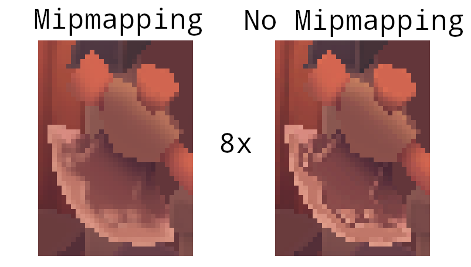
You can play around with the sampler settings to see how they affect mipmapping. For example, by changing min_lod, you can force the sampler to not use the lowest mip levels:
.min_lod(data.mip_levels as f32 / 2.0)
These settings will produce this image:

This is how higher mip levels will be used when objects are further away from the camera.
Multisampling
Code: main.rs
Our program can now load multiple levels of detail for textures which fixes artifacts when rendering objects far away from the viewer. The image is now a lot smoother, however on closer inspection you will notice jagged saw-like patterns along the edges of drawn geometric shapes. This is visible in one of our early programs when we rendered a quad:

This undesired effect is called "aliasing" and it's a result of a limited numbers of pixels that are available for rendering. Since there are no displays out there with unlimited resolution, it will be always visible to some extent. There's a number of ways to fix this and in this chapter we'll focus on one of the more popular ones: multisample anti-aliasing (MSAA).
In ordinary rendering, the pixel color is determined based on a single sample point which in most cases is the center of the target pixel on screen. If part of the drawn line passes through a certain pixel but doesn't cover the sample point, that pixel will be left blank, leading to the jagged "staircase" effect.

What MSAA does is it uses multiple sample points per pixel (hence the name) to determine its final color. As one might expect, more samples lead to better results, however it is also more computationally expensive.

In our implementation, we will focus on using the maximum available sample count. Depending on your application this may not always be the best approach and it might be better to use less samples for the sake of higher performance if the final result meets your quality demands.
Getting available sample count
Let's start off by determining how many samples our hardware can use. Most modern GPUs support at least 8 samples but this number is not guaranteed to be the same everywhere. We'll keep track of it by adding a new field to AppData:
struct AppData {
// ...
physical_device: vk::PhysicalDevice,
msaa_samples: vk::SampleCountFlags,
// ...
}
By default we'll be using only one sample per pixel which is equivalent to no multisampling, in which case the final image will remain unchanged. The exact maximum number of samples can be extracted from vk::PhysicalDeviceProperties associated with our selected physical device. We're using a depth buffer, so we have to take into account the sample count for both color and depth. The highest sample count that is supported by both (&) will be the maximum we can support. Add a function that will fetch this information for us:
unsafe fn get_max_msaa_samples(
instance: &Instance,
data: &AppData,
) -> vk::SampleCountFlags {
let properties = instance.get_physical_device_properties(data.physical_device);
let counts = properties.limits.framebuffer_color_sample_counts
& properties.limits.framebuffer_depth_sample_counts;
[
vk::SampleCountFlags::_64,
vk::SampleCountFlags::_32,
vk::SampleCountFlags::_16,
vk::SampleCountFlags::_8,
vk::SampleCountFlags::_4,
vk::SampleCountFlags::_2,
]
.iter()
.cloned()
.find(|c| counts.contains(*c))
.unwrap_or(vk::SampleCountFlags::_1)
}
We will now use this function to set the msaa_samples variable during the physical device selection process. For this, we have to slightly modify the pick_physical_device function to set the maximum MSAA samples after selecting a physical device:
unsafe fn pick_physical_device(instance: &Instance, data: &mut AppData) -> Result<()> {
// ...
for physical_device in instance.enumerate_physical_devices()? {
// ...
if let Err(error) = check_physical_device(instance, data, physical_device) {
// ...
} else {
// ...
data.msaa_samples = get_max_msaa_samples(instance, data);
return Ok(());
}
}
Ok(())
}
Setting up a render target
In MSAA, each pixel is sampled in an offscreen buffer which is then rendered to the screen. This new buffer is slightly different from regular images we've been rendering to - they have to be able to store more than one sample per pixel. Once a multisampled buffer is created, it has to be resolved to the default framebuffer (which stores only a single sample per pixel). This is why we have to create an additional render target and modify our current drawing process. We only need one render target since only one drawing operation is active at a time, just like with the depth buffer. Add the following AppData fields:
struct AppData {
// ...
color_image: vk::Image,
color_image_memory: vk::DeviceMemory,
color_image_view: vk::ImageView,
// ...
}
This new image will have to store the desired number of samples per pixel, so we need to pass this number to vk::ImageCreateInfo during the image creation process. Modify the create_image function by adding a samples parameter:
unsafe fn create_image(
instance: &Instance,
device: &Device,
data: &AppData,
width: u32,
height: u32,
mip_levels: u32,
samples: vk::SampleCountFlags,
format: vk::Format,
tiling: vk::ImageTiling,
usage: vk::ImageUsageFlags,
properties: vk::MemoryPropertyFlags,
) -> Result<(vk::Image, vk::DeviceMemory)> {
// Image
let info = vk::ImageCreateInfo::builder()
// ...
.samples(samples)
// ...
// ...
}
For now, update all calls to this function using vk::SampleCountFlags::_1 - we will be replacing this with proper values as we progress with implementation:
let (depth_image, depth_image_memory) = create_image(
instance,
device,
data,
data.swapchain_extent.width,
data.swapchain_extent.height,
1,
vk::SampleCountFlags::_1,
format,
vk::ImageTiling::OPTIMAL,
vk::ImageUsageFlags::DEPTH_STENCIL_ATTACHMENT,
vk::MemoryPropertyFlags::DEVICE_LOCAL,
)?;
// ...
let (texture_image, texture_image_memory) = create_image(
instance,
device,
data,
width,
height,
data.mip_levels,
vk::SampleCountFlags::_1,
vk::Format::R8G8B8A8_SRGB,
vk::ImageTiling::OPTIMAL,
vk::ImageUsageFlags::SAMPLED
| vk::ImageUsageFlags::TRANSFER_DST
| vk::ImageUsageFlags::TRANSFER_SRC,
vk::MemoryPropertyFlags::DEVICE_LOCAL,
)?;
We will now create a multisampled color buffer. Add a create_color_objects function and note that we're using msaaSamples here as a function parameter to createImage. We're also using only one mip level, since this is enforced by the Vulkan specification in case of images with more than one sample per pixel. Also, this color buffer doesn't need mipmaps since it's not going to be used as a texture:
unsafe fn create_color_objects(
instance: &Instance,
device: &Device,
data: &mut AppData,
) -> Result<()> {
let (color_image, color_image_memory) = create_image(
instance,
device,
data,
data.swapchain_extent.width,
data.swapchain_extent.height,
1,
data.msaa_samples,
data.swapchain_format,
vk::ImageTiling::OPTIMAL,
vk::ImageUsageFlags::COLOR_ATTACHMENT
| vk::ImageUsageFlags::TRANSIENT_ATTACHMENT,
vk::MemoryPropertyFlags::DEVICE_LOCAL,
)?;
data.color_image = color_image;
data.color_image_memory = color_image_memory;
data.color_image_view = create_image_view(
device,
data.color_image,
data.swapchain_format,
vk::ImageAspectFlags::COLOR,
1,
)?;
Ok(())
}
For consistency, call the function right before create_depth_objects:
unsafe fn create(window: &Window) -> Result<Self> {
// ...
create_color_objects(&instance, &device, &mut data)?;
create_depth_objects(&instance, &device, &mut data)?;
// ...
}
Now that we have a multisampled color buffer in place it's time to take care of depth. Modify create_depth_objects and update the number of samples used by the depth buffer:
unsafe fn create_depth_objects(
instance: &Instance,
device: &Device,
data: &mut AppData,
) -> Result<()> {
// ...
let (depth_image, depth_image_memory) = create_image(
instance,
device,
data,
data.swapchain_extent.width,
data.swapchain_extent.height,
1,
data.msaa_samples,
format,
vk::ImageTiling::OPTIMAL,
vk::ImageUsageFlags::DEPTH_STENCIL_ATTACHMENT,
vk::MemoryPropertyFlags::DEVICE_LOCAL,
)?;
// ...
}
We have now created a couple of new Vulkan resources, so let's not forget to release them when necessary:
unsafe fn destroy_swapchain(&mut self) {
self.device.destroy_image_view(self.data.color_image_view, None);
self.device.free_memory(self.data.color_image_memory, None);
self.device.destroy_image(self.data.color_image, None);
// ...
}
And update the App::recreate_swapchain method so that the new color image can be recreated in the correct resolution when the window is resized:
unsafe fn recreate_swapchain(&mut self, window: &Window) -> Result<()> {
// ...
create_color_objects(&self.instance, &self.device, &mut self.data)?;
create_depth_objects(&self.instance, &self.device, &mut self.data)?;
// ...
}
We made it past the initial MSAA setup, now we need to start using this new resource in our graphics pipeline, framebuffer, render pass and see the results!
Adding new attachments
Let's take care of the render pass first. Modify create_render_pass and update color and depth attachment creation info structs:
unsafe fn create_render_pass(
instance: &Instance,
device: &Device,
data: &mut AppData,
) -> Result<()> {
let color_attachment = vk::AttachmentDescription::builder()
// ...
.samples(data.msaa_samples)
// ...
.final_layout(vk::ImageLayout::COLOR_ATTACHMENT_OPTIMAL);
let depth_stencil_attachment = vk::AttachmentDescription::builder()
// ...
.samples(data.msaa_samples)
// ...
// ...
}
You'll notice that we have changed the finalLayout from vk::ImageLayout::PRESENT_SRC_KHR to vk::ImageLayout::COLOR_ATTACHMENT_OPTIMAL. That's because multisampled images cannot be presented directly. We first need to resolve them to a regular image. This requirement does not apply to the depth buffer, since it won't be presented at any point. Therefore we will have to add only one new attachment for color which is a so-called resolve attachment:
let color_resolve_attachment = vk::AttachmentDescription::builder()
.format(data.swapchain_format)
.samples(vk::SampleCountFlags::_1)
.load_op(vk::AttachmentLoadOp::DONT_CARE)
.store_op(vk::AttachmentStoreOp::STORE)
.stencil_load_op(vk::AttachmentLoadOp::DONT_CARE)
.stencil_store_op(vk::AttachmentStoreOp::DONT_CARE)
.initial_layout(vk::ImageLayout::UNDEFINED)
.final_layout(vk::ImageLayout::PRESENT_SRC_KHR);
The render pass now has to be instructed to resolve multisampled color image into regular attachment. Create a new attachment reference that will point to the color buffer which will serve as the resolve target:
let color_resolve_attachment_ref = vk::AttachmentReference::builder()
.attachment(2)
.layout(vk::ImageLayout::COLOR_ATTACHMENT_OPTIMAL);
Set the resolve_attachments subpass struct member to point to the newly created attachment reference. This is enough to let the render pass define a multisample resolve operation which will let us render the image to screen:
let color_attachments = &[color_attachment_ref];
let resolve_attachments = &[color_resolve_attachment_ref];
let subpass = vk::SubpassDescription::builder()
.pipeline_bind_point(vk::PipelineBindPoint::GRAPHICS)
.color_attachments(color_attachments)
.depth_stencil_attachment(&depth_stencil_attachment_ref)
.resolve_attachments(resolve_attachments);
Now update render pass info struct with the new color attachment:
let attachments = &[
color_attachment,
depth_stencil_attachment,
color_resolve_attachment,
];
let subpasses = &[subpass];
let dependencies = &[dependency];
let info = vk::RenderPassCreateInfo::builder()
.attachments(attachments)
.subpasses(subpasses)
.dependencies(dependencies);
With the render pass in place, modify create_framebuffers and add the new image view to the attachments slice:
let attachments = &[data.color_image_view, data.depth_image_view, *i];
Finally, tell the newly created pipeline to use more than one sample by modifying create_pipeline:
let multisample_state = vk::PipelineMultisampleStateCreateInfo::builder()
.sample_shading_enable(false)
.rasterization_samples(data.msaa_samples);
Now run your program and you should see the following:

Just like with mipmapping, the difference may not be apparent straight away. On a closer look you'll notice that the edges are not as jagged anymore and the whole image seems a bit smoother compared to the original (again it will be much easier to spot differences if you open the below image in a separate tab).

The difference is more noticeable when taking another close look at the axe head at 8x magnification:

Quality improvements
There are certain limitations of our current MSAA implementation which may impact the quality of the output image in more detailed scenes. For example, we're currently not solving potential problems caused by shader aliasing, i.e. MSAA only smoothens out the edges of geometry but not the interior filling. This may lead to a situation when you get a smooth polygon rendered on screen but the applied texture will still look aliased if it contains high contrasting colors. One way to approach this problem is to enable Sample Shading which will improve the image quality even further, though at an additional performance cost:
unsafe fn create_logical_device(
instance: &Instance,
data: &mut AppData,
) -> Result<Device> {
// ...
let features = vk::PhysicalDeviceFeatures::builder()
.sampler_anisotropy(true)
// Enable sample shading feature for the device.
.sample_rate_shading(true);
// ...
}
// ...
unsafe fn create_pipeline(device: &Device, data: &mut AppData) -> Result<()> {
// ...
let multisample_state = vk::PipelineMultisampleStateCreateInfo::builder()
// Enable sample shading in the pipeline.
.sample_shading_enable(true)
// Minimum fraction for sample shading; closer to one is smoother.
.min_sample_shading(0.2)
.rasterization_samples(data.msaa_samples);
// ...
}
In this example we'll leave sample shading disabled but in certain scenarios the quality improvement may be noticeable:

Push constants
The previous chapters of this tutorial that are not marked by this disclaimer were directly adapted from https://github.com/Overv/VulkanTutorial.
This chapter and the following chapters are instead original creations from someone who is most decidedly not an expert in Vulkan. An authoritative tone has been maintained, but these chapters should be considered a "best effort" by someone still learning Vulkan.
If you have questions, suggestions, or corrections, please open an issue!
Code: main.rs | shader.vert | shader.frag
The scene that we've created in the tutorial thus far is static. While we can rotate and otherwise move the model around on the screen by manipulating the uniform buffers that provide the model, view, and projection (MVP) matrices, we can't alter what is being rendered. This is because the decision of what to render is made during program initialization when our command buffers are allocated and recorded.
In the next few chapters we are going to explore various techniques we can use to accomplish the rendering of dynamic scenes. First, however, we are going to look at push constants, a Vulkan feature that allows us to easily and efficiently "push" dynamic data to shaders. Push constants alone will not accomplish our goal of a dynamic scene, but their usefulness should become clear over the next few chapters.
Push constants vs uniform buffers
We are already using another Vulkan feature to provide dynamic data to our vertex shader: uniform buffers. Every frame, the App::update_uniform_buffer method calculates the updated MVP matrices for the model's current rotation and copies those matrices to a uniform buffer. The vertex shader then reads those matrices from the uniform buffer to figure out where the vertices of the model belong on the screen.
This approach works well enough, when would we want to use push constants instead? One advantage of push constants over uniform buffers is speed, updating a push constant will usually be significantly faster than copying new data to a uniform buffer. For a large number of values that need to be updated frequently, this difference can add up quickly.
Of course there is a catch: the amount of data that can be provided to a shader using push constants has a very limited maximum size. This maximum size varies from device to device and is specified in bytes by the max_push_constants_size field of vk::PhysicalDeviceLimits. Vulkan requires that this limit be at least 128 bytes (see table 32), but you won't find values much larger than that in the wild. Even high-end hardware like the RTX 3080 only has a limit of 256 bytes.
If we wanted to, say, use push constants to provide our MVP matrices to our shaders we would immediately run into this limitation. The MVP matrices are too large to reliably fit in push constants, each matrix is 64 bytes (16 × 4 byte floats) leading to a total of 192 bytes. Of course we could maintain two code paths, one for devices that can handle push constants >= 192 bytes and another for devices that can't, but there are simpler approaches we could take.
One would be to premultiply our MVP matrices into a single matrix. Another would be to provide only the model matrix as a push constant and leave the view and projection matrices in the uniform buffer. Both would give us at least 64 bytes of headroom for other push constants even on devices providing only the minimum 128 bytes for push constants. In this chapter we will take the second approach to start exploring push constants.
Why only the model matrix for the second approach? In the App::update_uniform_buffer method, you'll notice that the model matrix changes every frame as time increases, the view matrix is static, and the proj matrix only changes when the window is resized. This would allow us to only update the uniform buffer containing the view and projection matrices when the window is resized and use push constants to provide the constantly changing model matrix.
Of course, in a more realistic application the view matrix would most likely not be static. For example, if you were building a first-person game, the view matrix would change very frequently as the player moves through the game world. However, the view and projection matrices, even if they change every frame, would be shared between all or at least most of the models you are rendering. This means you could continue updating the uniform buffer once per frame to provide the shared view and projection matrices and use push constants to provide the model matrices for each model in your scene.
Pushing the model matrix
With that wall of text out of the way, let's get started by moving the model matrix in the vertex shader from the uniform buffer object to a push constant. Don't forget to recompile the vertex shader afterwards!
#version 450
layout(binding = 0) uniform UniformBufferObject {
mat4 view;
mat4 proj;
} ubo;
layout(push_constant) uniform PushConstants {
mat4 model;
} pcs;
// ...
void main() {
gl_Position = ubo.proj * ubo.view * pcs.model * vec4(inPosition, 1.0);
// ...
}
Note that the layout is push_constant and not something like push_constant = 0 like how the uniform buffer object is defined. This is because we can only provide one collection of push constants for an invocation of a graphics pipeline and this collection is very limited in size as described previously.
Remove model from the UniformBufferObject struct since we will be specifying it as a push constant from here on out.
#[repr(C)]
#[derive(Copy, Clone, Debug)]
struct UniformBufferObject {
view: Mat4,
proj: Mat4,
}
Also remove model from the App::update_uniform_buffer method.
let view = Mat4::look_at_rh(
point3(2.0, 2.0, 2.0),
point3(0.0, 0.0, 0.0),
vec3(0.0, 0.0, 1.0),
);
let correction = Mat4::new(
1.0, 0.0, 0.0, 0.0,
0.0, -1.0, 0.0, 0.0,
0.0, 0.0, 1.0 / 2.0, 0.0,
0.0, 0.0, 1.0 / 2.0, 1.0,
);
let proj = correction * cgmath::perspective(
Deg(45.0),
self.data.swapchain_extent.width as f32 / self.data.swapchain_extent.height as f32,
0.1,
10.0,
);
let ubo = UniformBufferObject { view, proj };
// ...
We need to tell Vulkan about our new push constant by describing it in the layout of our graphics pipeline. In the create_pipeline function you'll see that we are already providing our descriptor set layout to create_pipeline_layout. This descriptor set layout describes the uniform buffer object and texture sampler used in our shaders and we need to similarly describe any push constants accessed by the shaders in our graphics pipeline using vk::PushConstantRange.
let vert_push_constant_range = vk::PushConstantRange::builder()
.stage_flags(vk::ShaderStageFlags::VERTEX)
.offset(0)
.size(64 /* 16 × 4 byte floats */);
let set_layouts = &[data.descriptor_set_layout];
let push_constant_ranges = &[vert_push_constant_range];
let layout_info = vk::PipelineLayoutCreateInfo::builder()
.set_layouts(set_layouts)
.push_constant_ranges(push_constant_ranges);
data.pipeline_layout = device.create_pipeline_layout(&layout_info, None)?;
The push constant range here specifies that the push constants accessed by the vertex shader can be found at the beginning of the push constants provided to the graphics pipeline and are the size of a mat4.
With all that in place, we can actually start pushing the model matrix to the vertex shader. Push constants are recorded directly into the command buffers submitted to the GPU which is both why they are so fast and why their size is so limited.
In the create_command_buffers function, define a model matrix and use cmd_push_constants to add it to the command buffers as a push constant right before we record the draw command.
let model = Mat4::from_axis_angle(
vec3(0.0, 0.0, 1.0),
Deg(0.0)
);
let model_bytes = std::slice::from_raw_parts(
&model as *const Mat4 as *const u8,
size_of::<Mat4>()
);
for (i, command_buffer) in data.command_buffers.iter().enumerate() {
// ...
device.cmd_push_constants(
*command_buffer,
data.pipeline_layout,
vk::ShaderStageFlags::VERTEX,
0,
model_bytes,
);
device.cmd_draw_indexed(*command_buffer, data.indices.len() as u32, 1, 0, 0, 0);
// ...
}
If you run the program now you will see the familiar model, but it is no longer rotating! Instead of updating the model matrix in the uniform buffer object every frame we are now encoding it into the command buffers which, as previously discussed, are never updated. This further highlights the need to somehow update our command buffers, a topic that will be covered in the next chapter. For now, let's round out this chapter by adding a push constant to the fragment shader.
Pushing the opacity
Next we'll add a push constant to the fragment shader which we can use to control the opacity of the model. Start by modifying the fragment shader to include the push constant and to use it as the alpha channel of the fragment color. Again, be sure to recompile the shader!
#version 450
layout(binding = 1) uniform sampler2D texSampler;
layout(push_constant) uniform PushConstants {
layout(offset = 64) float opacity;
} pcs;
// ...
void main() {
outColor = vec4(texture(texSampler, fragTexCoord).rgb, pcs.opacity);
}
This time we specify an offset for the push constant value. Remember that push constants are shared between all of the shaders in a graphics pipeline so we need to account for the fact that the first 64 bytes of the push constants are occupied by the model matrix used in the vertex shader.
Add a push constant range for the new opacity push constant to the pipeline layout.
let vert_push_constant_range = vk::PushConstantRange::builder()
.stage_flags(vk::ShaderStageFlags::VERTEX)
.offset(0)
.size(64 /* 16 × 4 byte floats */);
let frag_push_constant_range = vk::PushConstantRange::builder()
.stage_flags(vk::ShaderStageFlags::FRAGMENT)
.offset(64)
.size(4);
let set_layouts = &[data.descriptor_set_layout];
let push_constant_ranges = &[vert_push_constant_range, frag_push_constant_range];
let layout_info = vk::PipelineLayoutCreateInfo::builder()
.set_layouts(set_layouts)
.push_constant_ranges(push_constant_ranges);
data.pipeline_layout = device.create_pipeline_layout(&layout_info, None)?;
Lastly, add another call to cmd_push_constants in the create_command_buffers after the call for the model matrix.
device.cmd_push_constants(
*command_buffer,
data.pipeline_layout,
vk::ShaderStageFlags::VERTEX,
0,
model_bytes,
);
device.cmd_push_constants(
*command_buffer,
data.pipeline_layout,
vk::ShaderStageFlags::FRAGMENT,
64,
&0.25f32.to_ne_bytes()[..],
);
device.cmd_draw_indexed(*command_buffer, data.indices.len() as u32, 1, 0, 0, 0);
Here we provide an opacity of 0.25 to the fragment shader by recording it into the command buffer after the 64 bytes of the model matrix. However, if you were to run the program now, you'd find that the model is still entirely opaque!
Back in the chapter on fixed function operations, we discussed what was necessary to set up alpha blending so that we could render transparent geometries to the framebuffers. However, back then we left alpha blending disabled. Update the vk::PipelineColorBlendAttachmentState in the create_pipeline function to enable alpha blending as described in that chapter.
let attachment = vk::PipelineColorBlendAttachmentState::builder()
.color_write_mask(vk::ColorComponentFlags::all())
.blend_enable(true)
.src_color_blend_factor(vk::BlendFactor::SRC_ALPHA)
.dst_color_blend_factor(vk::BlendFactor::ONE_MINUS_SRC_ALPHA)
.color_blend_op(vk::BlendOp::ADD)
.src_alpha_blend_factor(vk::BlendFactor::ONE)
.dst_alpha_blend_factor(vk::BlendFactor::ZERO)
.alpha_blend_op(vk::BlendOp::ADD);
Run the program to see our now ghostly model.
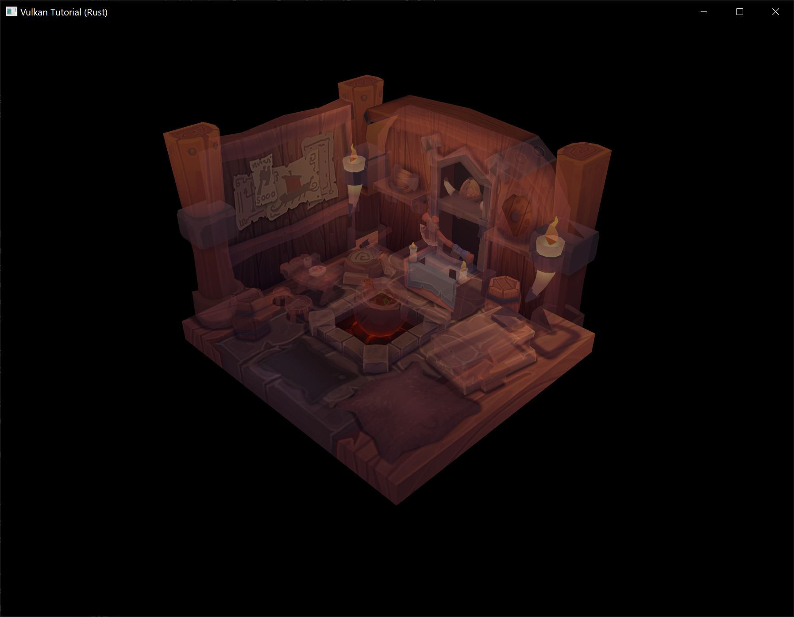
Success!
Recycling command buffers
This chapter and the following chapters are instead original creations from someone who is most decidedly not an expert in Vulkan. An authoritative tone has been maintained, but these chapters should be considered a "best effort" by someone still learning Vulkan.
If you have questions, suggestions, or corrections, please open an issue!
Code: main.rs
When you allocate a command buffer and record commands to it, Vulkan allocates blocks of memory to store information about the command buffer and the commands that have been recorded to it. Now that we want to be able to record different commands each frame, we need to recycle this memory in the same way that in C we need to free memory allocated with malloc once it is no longer in use.
Solutions
Vulkan offers three basic approaches for recycling the memory occupied by a command buffer:
- Reset the command buffer (which clears the commands recorded to it) and record new commands to the command buffer
- Free the command buffer (which returns its memory to the command pool it was allocated from) and allocate a new command buffer
- Reset the command pool the command buffer was allocated from (which resets all of the command buffers allocated from the command pool) and record new commands to the command buffer
Let's look at what would be required to implement each of these approaches.
1. Resetting command buffers
By default, command buffers cannot be reset and are effectively immutable once they have been recorded. The ability to reset them is an option that must be enabled on our command pool during its creation and will be applied to any command buffers allocated from this command pool. Add the vk::CommandPoolCreateFlags::RESET_COMMAND_BUFFER flag to the create info structure for the command pool in create_command_pool.
let info = vk::CommandPoolCreateInfo::builder()
.flags(vk::CommandPoolCreateFlags::RESET_COMMAND_BUFFER)
.queue_family_index(indices.graphics);
data.command_pool = device.create_command_pool(&info, None)?;
Next, create a new method for the App struct, update_command_buffer. This method will be called each frame to reset and rerecord the command buffer for the framebuffer that will be used for the current frame.
unsafe fn update_command_buffer(&mut self, image_index: usize) -> Result<()> {
Ok(())
}
Call the new method from the render method right before the uniform buffers for the frame are updated (or after, the order of these two statements is not important).
unsafe fn render(&mut self, window: &Window) -> Result<()> {
// ...
self.update_command_buffer(image_index)?;
self.update_uniform_buffer(image_index)?;
// ...
}
Note that we do need to be careful about when we call update_command_buffer. This method will reset the command buffer which could cause serious issues if the command buffer is still being used to render a previously submitted frame. This issue was also discussed in the Descriptor set layout and buffer chapter which is why the call to App::update_uniform_buffer is where it is. As discussed in more detail in that chapter, both of these calls only happen after the call to wait_for_fences which waits for the GPU to be done with the acquired swapchain image and its associated resources so we are safe to do whatever we want with the command buffer.
In the new method, reset the command buffer with reset_command_buffer.
unsafe fn update_command_buffer(&mut self, image_index: usize) -> Result<()> {
let command_buffer = self.data.command_buffers[image_index];
self.device.reset_command_buffer(
command_buffer,
vk::CommandBufferResetFlags::empty(),
)?;
Ok(())
}
Once reset_command_buffer has returned, the command buffer will be reset to its initial state, no different than a new command buffer freshly allocated from a command pool.
Now we can move the command buffer recording code out of create_command_buffers and into update_command_buffer. The loop over the command buffers is no longer necessary since we are only recording one command buffer per frame. Other than that, only a few mechanical changes are needed to migrate this code to our new method (e.g., replacing references to the loop counter i with image_index).
unsafe fn update_command_buffer(&mut self, image_index: usize) -> Result<()> {
// ...
let model = Mat4::from_axis_angle(
vec3(0.0, 0.0, 1.0),
Deg(0.0)
);
let model_bytes = &*slice_from_raw_parts(
&model as *const Mat4 as *const u8,
size_of::<Mat4>()
);
let info = vk::CommandBufferBeginInfo::builder();
self.device.begin_command_buffer(command_buffer, &info)?;
let render_area = vk::Rect2D::builder()
.offset(vk::Offset2D::default())
.extent(self.data.swapchain_extent);
let color_clear_value = vk::ClearValue {
color: vk::ClearColorValue {
float32: [0.0, 0.0, 0.0, 1.0],
},
};
let depth_clear_value = vk::ClearValue {
depth_stencil: vk::ClearDepthStencilValue { depth: 1.0, stencil: 0 },
};
let clear_values = &[color_clear_value, depth_clear_value];
let info = vk::RenderPassBeginInfo::builder()
.render_pass(self.data.render_pass)
.framebuffer(self.data.framebuffers[image_index])
.render_area(render_area)
.clear_values(clear_values);
self.device.cmd_begin_render_pass(command_buffer, &info, vk::SubpassContents::INLINE);
self.device.cmd_bind_pipeline(command_buffer, vk::PipelineBindPoint::GRAPHICS, self.data.pipeline);
self.device.cmd_bind_vertex_buffers(command_buffer, 0, &[self.data.vertex_buffer], &[0]);
self.device.cmd_bind_index_buffer(command_buffer, self.data.index_buffer, 0, vk::IndexType::UINT32);
self.device.cmd_bind_descriptor_sets(
command_buffer,
vk::PipelineBindPoint::GRAPHICS,
self.data.pipeline_layout,
0,
&[self.data.descriptor_sets[image_index]],
&[],
);
self.device.cmd_push_constants(
command_buffer,
self.data.pipeline_layout,
vk::ShaderStageFlags::VERTEX,
0,
model_bytes,
);
self.device.cmd_push_constants(
command_buffer,
self.data.pipeline_layout,
vk::ShaderStageFlags::FRAGMENT,
64,
&0.25f32.to_ne_bytes()[..],
);
self.device.cmd_draw_indexed(command_buffer, self.data.indices.len() as u32, 1, 0, 0, 0);
self.device.cmd_end_render_pass(command_buffer);
self.device.end_command_buffer(command_buffer)?;
Ok(())
}
With these changes in place, our program can now execute different rendering commands every frame which permits dynamic scenes! Let's exercise this new capability by restoring the rotation of the model to its former glory. Replace the model matrix calculation in App::update_command_buffer with the old calculation that rotates the model over time.
let time = self.start.elapsed().as_secs_f32();
let model = Mat4::from_axis_angle(
vec3(0.0, 0.0, 1.0),
Deg(90.0) * time
);
let model_bytes = &*slice_from_raw_parts(
&model as *const Mat4 as *const u8,
size_of::<Mat4>()
);
Run the program to see that the model should now be back to rotating now that we are pushing an updated model matrix to the shaders every frame.

Lastly, since we are now only submitting our command buffers once before resetting them, we should let Vulkan know this so it can better understand the behavior of our program. This is accomplished by passing the vk::CommandBufferUsageFlags::ONE_TIME_SUBMIT flag when starting to record a command buffer.
let info = vk::CommandBufferBeginInfo::builder()
.flags(vk::CommandBufferUsageFlags::ONE_TIME_SUBMIT);
self.device.begin_command_buffer(command_buffer, &info)?;
You might recall we've used this flag before, there should already be a usage of this flag in the begin_single_time_commands function. This flag isn't required by Vulkan for correctness if you are only using command buffers once before resetting or freeing them, but this knowledge may allow the Vulkan driver to better optimize its handling of our single-use command buffers.
2. Reallocating command buffers
Next we'll take a look at allocating new command buffers each frame.
Replace the code used to reset the command buffer at the beginning of update_command_buffer with code that replaces the previous command buffer with a new command buffer.
unsafe fn update_command_buffer(&mut self, image_index: usize) -> Result<()> {
let allocate_info = vk::CommandBufferAllocateInfo::builder()
.command_pool(self.data.command_pool)
.level(vk::CommandBufferLevel::PRIMARY)
.command_buffer_count(1);
let command_buffer = self.device.allocate_command_buffers(&allocate_info)?[0];
self.data.command_buffers[image_index] = command_buffer;
// ...
}
You could now run the program and see that the program works exactly like it did before, but if you do don't leave it running for too long! You may have already noticed that we aren't freeing the previous command buffer before we allocate a new one. If you observe the memory usage of our program after this change you'll see the memory usage start rising alarmingly fast as we rapidly collect thousands of derelict command buffers that are never recycled.
Return the memory used by the previous command buffer to the command pool by freeing it at the beginning of update_command_buffer.
unsafe fn update_command_buffer(&mut self, image_index: usize) -> Result<()> {
let previous = self.data.command_buffers[image_index];
self.device.free_command_buffers(self.data.command_pool, &[previous]);
// ...
}
Now when you run the program you should see stable memory usage instead of the program trying to gobble up all of the RAM on your system as if it thinks it's an Electron application.
We no longer need the vk::CommandPoolCreateFlags::RESET_COMMAND_BUFFER flag for our command pool since we aren't resetting command buffers any more. Leaving this flag wouldn't affect the correctness of our program, but it could have a negative performance impact since it forces the command pool to allocate command buffers in such a way that they are resettable.
We'll replace this flag with vk::CommandPoolCreateFlags::TRANSIENT which tells Vulkan that the command buffers we'll be allocating with this command pool will be "transient", i.e. short-lived.
let info = vk::CommandPoolCreateInfo::builder()
.flags(vk::CommandPoolCreateFlags::TRANSIENT)
.queue_family_index(indices.graphics);
data.command_pool = device.create_command_pool(&info, None)?;
Like vk::CommandBufferUsageFlags::ONE_TIME_SUBMIT, this flag does not affect the correctness of our program but it may allow the Vulkan driver to better optimize the handling of our short-lived command buffers.
3. Resetting command pools
Next we'll look at resetting our entire command pool which will reset all of our active command buffers in one fell swoop.
However, we immediately run into a problem with this approach. We can't reset all of our command buffers each frame because some of them might still be in use! The wait_for_fences call in App::render ensures that we are safe to reset the command buffer associated with the current framebuffer, but there might be other command buffers still in use.
We could continue down this path, but it would prevent our program from having multiple frames in-flight concurrently. This ability is important to maintain because, as discussed back in the Rendering and presentation chapter, it allows us to better leverage our hardware since the CPU will spend less time waiting on the GPU and vice-versa.
Instead, we will alter our program to maintain a separate command pool for each framebuffer. This way we can freely reset the command pool associated with the current framebuffer without worrying about breaking any previously submitted frames that are still in-flight.
You might think that this is overkill, why maintain separate command pools just so we can reset command buffers one at a time? Wouldn't it be simpler, and probably even faster, to continue freeing or resetting our command buffers each frame? Is this just a pedagogical exercise? Is the author of this tutorial a fraud?
To put these questions on hold for a bit (well maybe not the last one), a sneak preview of the next chapter is that it will involve managing multiple command buffers per frame rather than the single command buffer per frame we've been working with so far. Then it will become simpler, and probably faster, to deallocate all of these command buffers in one go by resetting the command pool instead of deallocating them individually.
We are going to leave the current command pool in place since it will be used for allocating command buffers during initialization. Add a field to AppData to hold one command pool per framebuffer and rename the existing create_command_pool function to create_command_pools to reflect its increased responsibilities.
impl App {
unsafe fn create(window: &Window) -> Result<Self> {
// ...
create_command_pools(&instance, &device, &mut data)?;
// ...
}
}
struct AppData {
// ...
command_pools: Vec<vk::CommandPool>,
command_buffers: Vec<vk::CommandBuffer>,
// ...
}
unsafe fn create_command_pools(
instance: &Instance,
device: &Device,
data: &mut AppData,
) -> Result<()> {
// ...
}
Create a new create_command_pool function which will be used to create a command pool for short-lived command buffers that can be submitted to graphics queues.
unsafe fn create_command_pool(
instance: &Instance,
device: &Device,
data: &mut AppData,
) -> Result<vk::CommandPool> {
let indices = QueueFamilyIndices::get(instance, data, data.physical_device)?;
let info = vk::CommandPoolCreateInfo::builder()
.flags(vk::CommandPoolCreateFlags::TRANSIENT)
.queue_family_index(indices.graphics);
Ok(device.create_command_pool(&info, None)?)
}
With this function available, we can easily update create_command_pools to create both our existing global command pool and the new per-framebuffer command pools.
unsafe fn create_command_pools(
instance: &Instance,
device: &Device,
data: &mut AppData,
) -> Result<()> {
data.command_pool = create_command_pool(instance, device, data)?;
let num_images = data.swapchain_images.len();
for _ in 0..num_images {
let command_pool = create_command_pool(instance, device, data)?;
data.command_pools.push(command_pool);
}
Ok(())
}
Now we need to create the command buffers using these new per-framebuffer command pools. Update create_command_buffers to use a separate call to allocate_command_buffers for each command buffer so that each can be associated with one of the per-framebuffer command pools.
unsafe fn create_command_buffers(device: &Device, data: &mut AppData) -> Result<()> {
let num_images = data.swapchain_images.len();
for image_index in 0..num_images {
let allocate_info = vk::CommandBufferAllocateInfo::builder()
.command_pool(data.command_pools[image_index])
.level(vk::CommandBufferLevel::PRIMARY)
.command_buffer_count(1);
let command_buffer = device.allocate_command_buffers(&allocate_info)?[0];
data.command_buffers.push(command_buffer);
}
Ok(())
}
Update App::update_command_buffer to reset the per-framebuffer command pool instead of freeing and reallocating the command buffer. This will also reset any command buffers created with this command pool so we don't need to do anything else to be able to reuse the command buffer.
unsafe fn update_command_buffer(&mut self, image_index: usize) -> Result<()> {
let command_pool = self.data.command_pools[image_index];
self.device.reset_command_pool(command_pool, vk::CommandPoolResetFlags::empty())?;
let command_buffer = self.data.command_buffers[image_index];
// ...
}
Run the program now and make sure that our new command buffer recycling strategy still produces the same result as before. If you have the validation layer enabled, you will be reminded while the program is shutting down that we are not cleaning up these new command pools. Update App::destroy to destroy them.
unsafe fn destroy(&mut self) {
self.destroy_swapchain();
self.data.command_pools
.iter()
.for_each(|p| self.device.destroy_command_pool(*p, None));
// ...
}
Finally, delete the call to free_command_buffers in App::destroy_swapchain. This call now incorrectly attempts to return the memory assigned to the per-framebuffer command buffers to the global command pool despite the fact that these command buffers are no longer allocated from this command pool. Leaving this code in will most likely result in our program crashing when resizing the window or otherwise forcing a recreation of the swapchain. We no longer need to manage the deletion of individual command buffers since we are now managing this at the command pool level.
Conclusion
We've now explored the basic approaches Vulkan offers for recycling command buffers so that we can change the commands our program submits dynamically, whether in response to user input or to some other signal. These approaches can be mixed in any way you could imagine, demonstrating the power and flexibility Vulkan grants to programmers.
If you are feeling a bit overwhelmed about all the possible ways you could go about architecting a Vulkan program with respect to command pools and command buffers, don't worry! The next chapter is going to make things even more complicated.
Secondary command buffers
This chapter and the following chapters are instead original creations from someone who is most decidedly not an expert in Vulkan. An authoritative tone has been maintained, but these chapters should be considered a "best effort" by someone still learning Vulkan.
If you have questions, suggestions, or corrections, please open an issue!
Code: main.rs
While our program now submits different commands to be executed every frame, we still haven't quite accomplished our original goal of changing what our program renders dynamically. In this chapter we'll alter our program to support rendering between 1 and 4 instances of the model in response to user input.
We'll accomplish this using secondary command buffers, a Vulkan feature that allows us to build re-usable sequences of commands and then execute those commands from primary command buffers. Secondary command buffers aren't at all necessary to implement this change, but our first time rendering multiple things is a good time to introduce them.
Primary vs secondary
All of the command buffers we've used thus far have been primary command buffers, meaning they can be submitted directly to a Vulkan queue to be executed by the device. Secondary command buffers are instead executed indirectly by being called from primary command buffers and may not be submitted to queues.
The usage of secondary command buffers offers two primary advantages:
-
Secondary command buffers may be allocated and recorded in parallel which allows you to better leverage modern hardware with its panoply of CPU cores
-
The lifetime of secondary command buffers can managed independently of one another so you can have a mixture of long-lived or permanent secondary command buffers that intermingle with frequently updated secondary command buffers which allows you to reduce the number of command buffers you need to create every frame
Both of these points are true for primary command buffers as well, but primary command buffers have a significant limitation that effectively prevents them from fulfilling these use cases. Multiple primary command buffers may not be executed within the same render pass instance meaning that if you wanted to execute multiple primary command buffers for a frame, each primary command buffer would need to start with cmd_begin_render_pass and end with cmd_end_render_pass.
This might not sound like a big deal but beginning a render pass instance can be a pretty heavyweight operation and needing to do this many times per frame can destroy performance on some hardware. Secondary command buffers avoid this problem by being able to inherit the render pass instance as well as other state from the primary command buffer it is called from.
Multiple model instances
Let's get started by adding a field to AppData that will contain our new secondary command buffers. We will have multiple secondary command buffers per frame, one for each model instance we are rendering, so this will be a list of lists.
struct AppData {
// ...
command_buffers: Vec<vk::CommandBuffer>,
secondary_command_buffers: Vec<Vec<vk::CommandBuffer>>,
// ...
}
In an application more realistic than the one we are building, the number of secondary command buffers we need to render a frame might vary significantly over time. In addition, we likely wouldn't know the maximum number of secondary command buffers the application needs ahead of time.
We do know the maximum in this case, but we will pretend we don't and adopt an approach closer to what a real-world application would. Instead of allocating secondary command buffers during initialization like we allocate primary command buffers, we will allocate secondary command buffers on-demand. We'll still need to populate the outer Vec with empty lists of secondary command buffers so update create_command_buffers to accomplish this.
unsafe fn create_command_buffers(device: &Device, data: &mut AppData) -> Result<()> {
// ...
data.secondary_command_buffers = vec![vec![]; data.swapchain_images.len()];
Ok(())
}
Add a new method for the App struct called update_secondary_command_buffer that we'll use to allocate (if necessary) and record a secondary command buffer for one of the 4 model instances we will be rendering. The model_index parameter indicates which of the 4 model instances the secondary command buffer should render.
unsafe fn update_secondary_command_buffer(
&mut self,
image_index: usize,
model_index: usize,
) -> Result<vk::CommandBuffer> {
self.data.secondary_command_buffers.resize_with(image_index + 1, Vec::new);
let command_buffers = &mut self.data.secondary_command_buffers[image_index];
while model_index >= command_buffers.len() {
let allocate_info = vk::CommandBufferAllocateInfo::builder()
.command_pool(self.data.command_pools[image_index])
.level(vk::CommandBufferLevel::SECONDARY)
.command_buffer_count(1);
let command_buffer = self.device.allocate_command_buffers(&allocate_info)?[0];
command_buffers.push(command_buffer);
}
let command_buffer = command_buffers[model_index];
let info = vk::CommandBufferBeginInfo::builder();
self.device.begin_command_buffer(command_buffer, &info)?;
self.device.end_command_buffer(command_buffer)?;
Ok(command_buffer)
}
This code will allocate secondary command buffers for the model instances as they are needed but will reuse them after their initial allocation. Like with the primary command buffers, we can freely use any previously allocated secondary command buffers because we are resetting the command pool they were allocated with.
Before we continue, we need to provide some additional information to Vulkan that is unique to secondary command buffers before recording this command buffer. Create an instance of vk::CommandBufferInheritanceInfo that specifies the render pass, subpass index, and framebuffer the secondary command buffer will be used in conjunction with and then provide that inheritance info to begin_command_buffer.
let inheritance_info = vk::CommandBufferInheritanceInfo::builder()
.render_pass(self.data.render_pass)
.subpass(0)
.framebuffer(self.data.framebuffers[image_index]);
let info = vk::CommandBufferBeginInfo::builder()
.inheritance_info(&inheritance_info);
self.device.begin_command_buffer(command_buffer, &info)?;
As mentioned previously, secondary command buffers can inherit some state from the primary command buffers they are executed from. This inheritance info describes the command buffer state the secondary command buffer will be compatible with and may validly inherit.
The render pass and subpass index are required to inherit that state, but the framebuffer is only specified here as a potential performance boost. You may omit it, but Vulkan may be able to better optimize the secondary command buffer to render to the specified framebuffer.
This isn't enough to actually inherit the render pass, we need to also provide vk::CommandBufferUsageFlags::RENDER_PASS_CONTINUE to begin_command_buffer. This tells Vulkan that this secondary command buffer will be executed entirely inside a render pass.
let info = vk::CommandBufferBeginInfo::builder()
.flags(vk::CommandBufferUsageFlags::RENDER_PASS_CONTINUE)
.inheritance_info(&inheritance_info);
self.device.begin_command_buffer(command_buffer, &info)?;
With inheritance set up, move the code that calculates the push constant values out of App::update_command_buffer and into App::update_secondary_command_buffer after the secondary command buffer is allocated. While you're at it, have the opacity of the model instance depend on the model index to add some variety to our scene, ranging from 25% to 100%.
unsafe fn update_secondary_command_buffer(
&mut self,
image_index: usize,
model_index: usize,
) -> Result<vk::CommandBuffer> {
// ...
let command_buffer = self.device.allocate_command_buffers(&allocate_info)?[0];
let time = self.start.elapsed().as_secs_f32();
let model = Mat4::from_axis_angle(
vec3(0.0, 0.0, 1.0),
Deg(90.0) * time
);
let model_bytes = &*slice_from_raw_parts(
&model as *const Mat4 as *const u8,
size_of::<Mat4>()
);
let opacity = (model_index + 1) as f32 * 0.25;
let opacity_bytes = &opacity.to_ne_bytes()[..];
// ...
}
Next we are going to move the rendering commands out of the primary command buffer and into the secondary command buffer. The primary command buffer will still be used to begin and end the render pass instance since it will be inherited by our secondary command buffers, but all of the commands in App::update_command_buffer between (but not including) cmd_begin_render_pass and cmd_end_render_pass should be moved into App::update_secondary_command_buffer.
unsafe fn update_secondary_command_buffer(
&mut self,
image_index: usize,
model_index: usize,
) -> Result<vk::CommandBuffer> {
// ...
self.device.begin_command_buffer(command_buffer, &info)?;
self.device.cmd_bind_pipeline(command_buffer, vk::PipelineBindPoint::GRAPHICS, self.data.pipeline);
self.device.cmd_bind_vertex_buffers(command_buffer, 0, &[self.data.vertex_buffer], &[0]);
self.device.cmd_bind_index_buffer(command_buffer, self.data.index_buffer, 0, vk::IndexType::UINT32);
self.device.cmd_bind_descriptor_sets(
command_buffer,
vk::PipelineBindPoint::GRAPHICS,
self.data.pipeline_layout,
0,
&[self.data.descriptor_sets[image_index]],
&[],
);
self.device.cmd_push_constants(
command_buffer,
self.data.pipeline_layout,
vk::ShaderStageFlags::VERTEX,
0,
model_bytes,
);
self.device.cmd_push_constants(
command_buffer,
self.data.pipeline_layout,
vk::ShaderStageFlags::FRAGMENT,
64,
opacity_bytes,
);
self.device.cmd_draw_indexed(command_buffer, self.data.indices.len() as u32, 1, 0, 0, 0);
self.device.end_command_buffer(command_buffer)?;
// ...
}
Now that we can easily create secondary command buffers for rendering the model instance, call our new method in App::update_command_buffers and execute the returned secondary command buffer using cmd_execute_commands.
unsafe fn update_command_buffer(&mut self, image_index: usize) -> Result<()> {
// ...
self.device.cmd_begin_render_pass(command_buffer, &info, vk::SubpassContents::INLINE);
let secondary_command_buffer = self.update_secondary_command_buffer(image_index, 0)?;
self.device.cmd_execute_commands(command_buffer, &[secondary_command_buffer]);
self.device.cmd_end_render_pass(command_buffer);
// ...
}
This change has invalidated our call to cmd_begin_render_pass because we are providing vk::SubpassContents::INLINE which indicates we will be recording rendering commands directly into the primary command buffer. Now that we've moved the rendering commands into the secondary command buffer, we need to use vk::SubpassContents::SECONDARY_COMMAND_BUFFERS.
self.device.cmd_begin_render_pass(
command_buffer,
&info,
vk::SubpassContents::SECONDARY_COMMAND_BUFFERS,
);
Note that these are mutually exclusive modes, you can't mix secondary command buffers and inline rendering commands in a render pass instance.
If you run the program now, you should see the same ghostly model rotating exactly as it was before. Let's kick it up a notch by rendering 4 instances of the model by creating 4 secondary command buffers and executing them all from the primary command buffer.
unsafe fn update_command_buffer(&mut self, image_index: usize) -> Result<()> {
// ...
self.device.cmd_begin_render_pass(command_buffer, &info, vk::SubpassContents::SECONDARY_COMMAND_BUFFERS);
let secondary_command_buffers = (0..4)
.map(|i| self.update_secondary_command_buffer(image_index, i))
.collect::<Result<Vec<_>, _>>()?;
self.device.cmd_execute_commands(command_buffer, &secondary_command_buffers[..]);
self.device.cmd_end_render_pass(command_buffer);
// ...
}
If you run the program again, you'll see a strange shimmering as the 4 model instances, being rendered at the same coordinates, experience a bad bout of z-fighting.
Update the model matrix calculation in App::update_secondary_command_buffer to translate the models before rotating them according to their model index.
let y = (((model_index % 2) as f32) * 2.5) - 1.25;
let z = (((model_index / 2) as f32) * -2.0) + 1.0;
let time = self.start.elapsed().as_secs_f32();
let model = Mat4::from_translation(vec3(0.0, y, z)) * Mat4::from_axis_angle(
vec3(0.0, 0.0, 1.0),
Deg(90.0) * time
);
This code places the model instances in a grid on the Y and Z axes. However, due to the view matrix we're using, the camera is looking at this plane at 45 degree angles so let's update the view matrix in App::update_uniform_buffer to look directly at the YZ plane to better view our model instances.
let view = Mat4::look_at_rh(
point3(6.0, 0.0, 2.0),
point3(0.0, 0.0, 0.0),
vec3(0.0, 0.0, 1.0),
);
With a better vantage point secured, run the program and bask in its glory.

Let's knock it up a notch with a blast from our spice weasel by allowing the user to determine how many of these models they want to render. Add a models field to the App struct and initialize it to 1 in the constructor.
struct App {
// ...
models: usize,
}
Update the model index range in App::update_command_buffer to range from 0 to the value of the models field.
let secondary_command_buffers = (0..self.models)
.map(|i| self.update_secondary_command_buffer(image_index, i))
.collect::<Result<Vec<_>, _>>()?;
Now that we have all this in place, we just need to increment and decrement the models field in response to user input. Start by importing the following winit types we'll need to handle keyboard input.
use winit::event::{ElementState, VirtualKeyCode};
Finally, add a case to the event match block in the main function that handles key presses and decrements models when the left arrow key is pressed (to a minimum of 1) and increments models when the right arrow key is pressed (to a maximum of 4).
match event {
// ...
Event::WindowEvent { event, .. } => match event {
// ...
WindowEvent::KeyboardInput { event, .. } => {
if event.state == ElementState::Pressed {
match event.physical_key {
PhysicalKey::Code(KeyCode::ArrowLeft) if app.models > 1 => app.models -= 1,
PhysicalKey::Code(KeyCode::ArrowRight) if app.models < 4 => app.models += 1,
_ => { }
}
}
}
// ...
}
// ...
}
Run the program and observe how the number of secondary command buffers we are allocating and executing each frame changes as you press the left and right arrow keys.
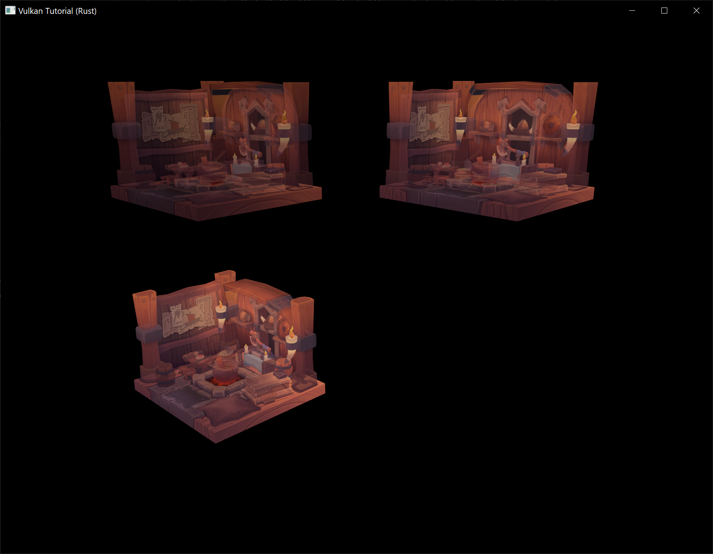
You should now be familiar with the basic tools you can use to efficiently render dynamic frames using Vulkan. There are many ways you can utilize these tools that each have different performance tradeoffs. Future tutorial chapters may explore this more in depth, but parallelizing the work of recording secondary command buffers using multiple threads is a common technique that usually results in significant performance wins on modern hardware.
Conclusion
It has taken a lot of work to get to this point, but now you finally have a good base for a Vulkan program. The knowledge of the basic principles of Vulkan that you now possess should be sufficient to start exploring more of the features, like:
- Instanced rendering
- Dynamic uniforms
- Separate images and sampler descriptors
- Pipeline cache
- Multi-threaded command buffer generation
- Multiple subpasses
- Compute shaders
The current program can be extended in many ways, like adding Blinn-Phong lighting, post-processing effects and shadow mapping. You should be able to learn how these effects work from tutorials for other APIs, because despite Vulkan's explicitness, many concepts still work the same.